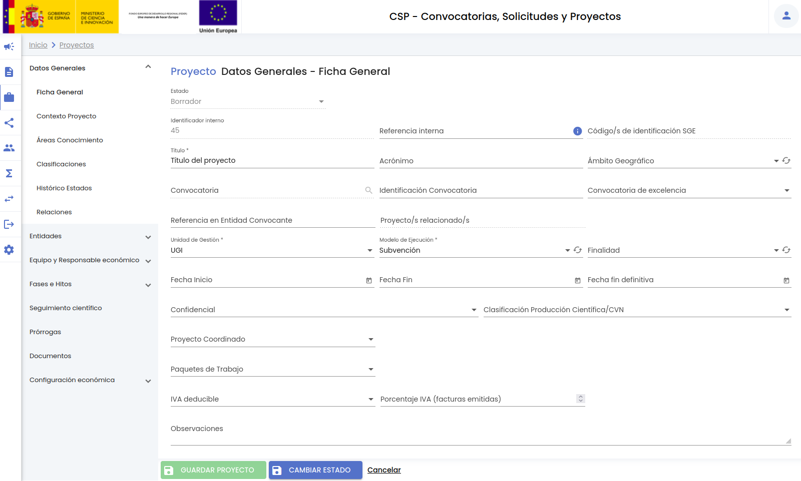
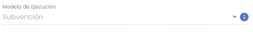
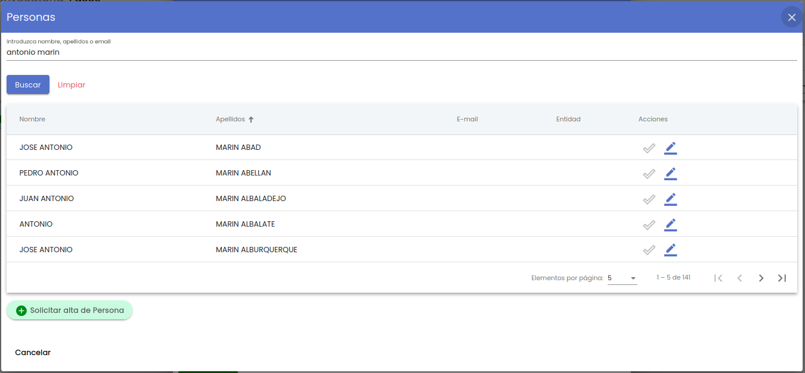
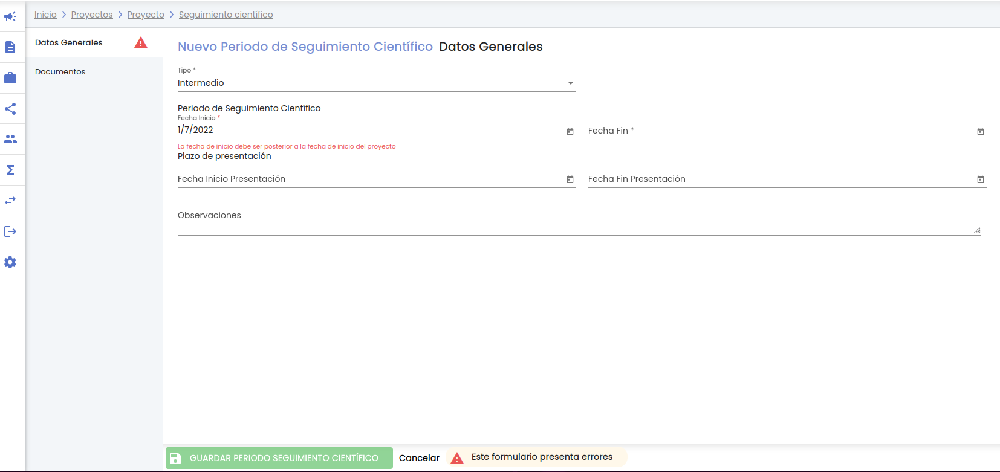
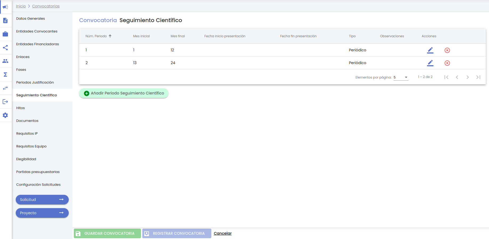
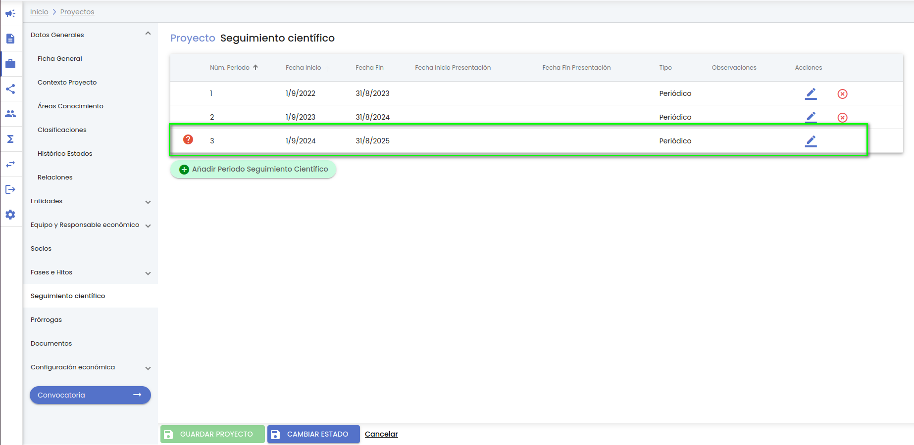
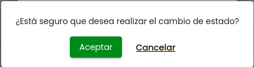

Hércules : CSP-Proyectos¶
1. Introducción¶
Con el objetivo de conseguir la máxima estandarización y homogeneización, lo que redundará en una mayor capacidad para la posterior clasificación y agrupación de la información, la entidad Proyecto será común para cualquier tipología de proyectos y contratos. A través de los modelos de ejecución y la asignación de los mismos a las diferentes Unidades de gestión, se permitirá una particularización de diferentes listados y tipologías utilizados para recoger la información del proyecto/contrato. De esta forma, el SGI no parte de una clasificación de proyectos/contratos limitada y se permite que esta clasificación pueda ser la necesaria de acuerdo a la organización interna de cada Universidad a la vez que escalable para futuras necesidades. Como complemento al modelo de ejecución, en el apartado "Ficha general" del proyecto se podrán aplicar una serie de configuraciones que habilitarán o no la existencia de bloques de información sobre el proyecto.
Un proyecto/contrato/beca/ayuda podrá ser registrado en el SGI a partir de la concesión de una solicitud de convocatoria, o podrá ser registrado directamente, sin que exista el flujo previo de convocatoria - solicitud (como será en la mayoría de los casos de contratos del artículo 83).
1.1 Detalle de un proyecto¶
Debido a la elevada cantidad de información que tiene un proyecto/contrato ésta se muestra de forma estructurada en diferentes apartados, agrupada de acuerdo a la naturaleza de la misma. A continuación se enumeran los apartados y subapartados en los que se estructura la información :
- Datos generales:
- Ficha general
- Contexto del proyecto
- Áreas de conocimiento
- Clasificaciones
- Histórico de estados
- Relaciones
- Entidades:
- Entidad gestora
- Entidades convocantes
- Entidades financiadoras
- Equipo y Responsable económico:
- Equipo
- Responsable económico
-
Socios: Por cada socio se dispondrá de los siguientes apartados:
- Miembros del equipo
- Periodos de pago
-
Periodos justificación. Por cada periodo de justificación:
- Datos generales
- Documentación
- Fases e hitos:
- Fases
- Hitos
- Seguimiento científico. Por cada periodo de seguimiento:
- Datos generales
- Documentación
- Prórrogas del proyecto. Por cada prórroga del proyecto:
- Datos generales
- Documentación
- Paquetes de trabajo
- Documentos
- Configuración económica:
-
Identificación
- Elegibilidad
- Partidas presupuestarias
- Presupuesto
- Consulta de presupuesto
- Amortización de fondos
- Calendario de facturación
- Calendario de justificaciones
1.2 Estados de un proyecto¶
Los estados del proyecto no son configurables por implantación así como tampoco lo es el flujo para pasar de un estado a otro. El comportamiento esta predefinido en el SGI.
Los estados por lo que puede pasar un proyecto son:
- Borrador. Es el estado inicial. El proyecto, de forma automática tomará este estado, tanto cuando se genera a partir de la concesión de una solicitud como cuando se registra directamente. Este estado será indicativo de que el proyecto está aún en periodo de introducción de datos o una fase previa a su concesión (porque desde la unidad de control se haya decidido introducir en el SGI con carácter previo). No existirá ninguna regla ni periodo establecido para pasar un proyecto en estado borrador al siguiente estado. Será el personal de la Unidad de gestión responsable del proyecto quien deba cambiar el estado del proyecto, cuando estime oportuno. Mientras un proyecto esté en estado borrador no será necesario que se cumplan todas las validaciones de obligatoriedad, pudiendo permanecer aún algunos de los campos obligatorios sin cumplimentar.
- Concedido. El paso a este estado será indicativo de que el proyecto/contrato ya está en ejecución. El paso a estado "Concedido" supondrá que se desencadenen una serie de operaciones de validación de datos que serán necesarios para una correcta gestión de proyecto.
- Renunciado. Será indicativo de que el proyecto se cancela por algún motivo y no llega a su finalización. De manera automática la fecha fin definitiva del proyecto tomará la fecha del paso a estado Renunciado.
- Rescindido. Será indicativo de que el proyecto se rescinde por algún motivo y no llega a su finalización. De manera automática la fecha fin definitiva del proyecto tomará la fecha del paso a estado Rescindido.
2. Listado y búsqueda de proyectos¶
El acceso a la gestión de proyectos ocupa la tercera posición en el menú del módulo CSP. Siguiendo la estructura general del SGI, tras pulsar en el menú Proyectos se accede a la página inicial que contiene el listado de proyectos y su buscador, que sigue las normas básicas descritas en MDU-Manual de usuario - 3.2 Buscadores y listados.
Por defecto, se listan todos los proyectos disponibles sobre una tabla de resultados paginada, MDU-Manual de usuario - 3.5 Paginación de listados. La tabla muestra una serie de campos significativos:
- Identificador interno: Código interno generado automáticamente al crear el proyecto. Es único y permite identificar inequívocamente al proyecto.
- Código SGE: Código de identificación del proyecto económico en el Sistema de gestión Económico (SGE) con el que se vincula el proyecto SGI.
- Título: Título del proyecto/contrato.
- Acrónimo: Identificador corto del proyecto.
- Ref. en entidad convocante: Referencia que ha otorgado al proyecto la entidad convocante.
- Fecha inicio: Fecha de inicio del proyecto.
- Fecha fin: Fecha de fin del proyecto.
- Fecha fin definitiva: Fecha de fin definitiva del proyecto. En caso de estar informada, prevalecerá sobre el campo "fecha fin" para tomarla como referencia de la fecha de finalización del proyecto.
- Finalizado: Indica si el proyecto se encuentra finalizado. Se mostrará con los valores "Sí" o "No".
- Prorrogado: Indicará si el proyecto tiene alguna prórroga. Se mostrará con los valores "Sí" o "No".
- Estado: Estado actual del proyecto.
- Activo: Campo que indica si el proyecto ha sido desactivado o no. Se mostrará con los valores "Sí" o "No".
- Acciones: Conjunto de acciones que están disponibles sobre el proyecto. Las acciones disponibles sobre cada proyecto podrán variar en función del estado en que se encuentre.
El apartado de proyectos incluye dos buscadores:
- Buscador simple
- Buscador ampliado
Por defecto, se muestra visible el buscador simple.
A través del botón "Limpiar" se eliminará cualquier criterio de búsqueda que hubiese sido introducido en el buscador activo en cada momento.
2.1 Buscador simple¶
Es el buscador mostrado por defecto. Dispone de los siguientes campos de búsqueda:
- Título: Si se introduce una cadena en este filtro, se mostrarán los proyectos que contengan la cadena introducida en cualquier parte del campo "título".
- Identificador interno: Si se introduce un número, se mostrarán los proyectos cuyo campo "identificador interno" sea exactamente igual al número introducido.
- Código de identificación SGE: Si se introduce un código, se mostrarán los proyectos cuyo campo "Identificación SGE" sea exactamente igual al código introducido.
- Referencia en entidad convocante: Si se introduce una cadena en este filtro, se mostrarán los proyectos que contengan la cadena introducida en cualquier parte del campo "referencia en entidad convocante".
- Unidad de gestión: Permite limitar la búsqueda a los proyectos de una unidad de gestión. La unidad de gestión se indicará mediante un desplegable. En el desplegable de unidades de gestión no estarán incluidas todas las unidades configuradas en el SGI sino solamente las que cada persona tenga habilitadas en la configuración de acceso al SGI.
Una vez introducidos los filtros de búsqueda se debe pulsar el botón "Buscar". Los resultados coincidentes se mostrarán en el listado de resultados. Todos los filtros de búsqueda actuarán como una conjunción "y", es decir, las solicitudes que se muestren en el listado de resultados deberán cumplir todos los filtros especificados.
Se puede utilizar el botón "Limpiar" para vaciar cualquier valor introducido en cualquiera de los dos campos. Además de vaciar los campos de búsqueda el botón "Limpiar" vuelve a realizar la búsqueda, mostrando el listado completo de solicitudes.
Si se pulsa el botón "Buscador ampliado" se cambiará a la búsqueda avanzada.
2.2 Buscador ampliado¶
Al pulsar el botón "Buscador ampliado" se mostrarán todos los filtros de este buscador. El aspecto de la ventana de proyectos pasa a ser:
El buscador ampliado contiene los siguientes campos:
- Título: Si se introduce una cadena en este filtro, se mostrarán los proyectos que contengan la cadena introducida en cualquier parte del campo "título".
- Identificador interno: Si se introduce un número, se mostrarán los proyectos cuyo campo "identificador interno" sea exactamente igual al número introducido.
- Código de identificación SGE: Si se introduce un código, se mostrarán los proyectos cuyo campo "Identificación SGE" sea exactamente igual al código introducido.
- Referencia en entidad convocante: Si se introduce una cadena en este filtro, se mostrarán los proyectos que contengan la cadena introducida en cualquier parte del campo "referencia en entidad convocante".
- Unidad de gestión: Permite limitar la búsqueda a los proyectos de una unidad de gestión. La unidad de gestión se indicará mediante un desplegable. En el desplegable de unidades de gestión no estarán incluidas todas las unidades configuradas en el SGI sino solamente las que cada persona tenga habilitadas en la configuración de acceso al SGI.
- Modelo de Ejecución: Permite limitar la búsqueda de proyectos a los de un determinado modelo de ejecución. Los modelos de ejecución por los que se aplica la búsqueda se mostrarán en un desplegable. Para ampliar información sobre los modelos de ejecución, consultar Configuración - Modelo de Ejecución
- Finalidad: Permite limitar la búsqueda de proyectos a los de un determinado tipo de finalidad. Los modelos de ejecución por los que se aplica la búsqueda se mostrarán en un desplegable. Para ampliar información sobre los modelos de ejecución, consultar Configuración - Tipo de finalidad y Configuración - Modelo de Ejecución
- Acrónimo: Si se introduce una cadena en este filtro, se mostrarán los proyectos que contengan la cadena introducida en cualquier parte del campo "acrónimo".
- Activo: Es un desplegable con los valores "sí", "no", "todos". La entidad "proyecto" admite eliminación con recuperación (MDU-Manual de usuario - 3.10 Eliminar elemento), con el campo "activo" se permite realizar búsquedas sobre los proyectos que hubieran sido eliminados. Por defecto el filtro está precargado con el valor "sí", para que de partida solo se muestren los proyectos activos. Para mostrar los proyectos que hubieran sido eliminados se debe establecer el valor de este filtro a:
- No: se muestran solo los proyectos que hubieran sido desactivados (eliminados).
- Todos: se muestran todos los proyectos, tanto los activos como los desactivados (eliminados).
- Estado: Campo para aplicar búsquedas por el estado del proyecto. Es un desplegable con el listado de estados posibles.
- Finalizado: Es un desplegable con los valores "sí" y "no". Si no se indica ningún valor en el selector (vacío) no se aplicará filtro sobre esta condición.
- Si se selecciona el valor "sí" se mostrarán todos los proyectos que hayan sido finalizados, es decir, que la fecha actual sea mayor que la "fecha fin" (en el caso de que no esté informada la fecha fin definitiva) o mayor a la "fecha fin definitiva" (si esta informada la fecha fin definitiva).
- Si se selecciona el valor "no" se mostrarán todos los proyectos que no hayan sido finalizados, es decir, que la fecha actual sea menor o igual que la "fecha fin" (en el caso de que no esté informada la fecha fin definitiva) o menor o igual a la "fecha fin definitiva" (si esta informada la fecha fin definitiva).
- Prorrogado: Es un desplegable con los valores "sí" y "no". Si no se indica ningún valor en el selector (vacío) no se aplicará filtro sobre esta condición.
- Si se selecciona el valor "sí" se mostrarán todos los proyectos que tenga una prórroga en el apartado "Prórrogas"
- Si se selecciona el valor "no" se mostrarán todos los proyectos que no tenga ninguna prórroga en el apartado "Prórrogas"
- Fecha inicio desde - hasta: Con los campos "desde" y "hasta", ambos del tipo fecha, se puede establecer un periodo que permitirá buscar los proyectos cuya fecha de inicio esté comprendida en el mismo. Ambos campos disponen de un control calendario a través del que se podrá seleccionar la fecha deseada.
- Fecha de fin/fecha fin definitiva desde - hasta: Con los campos "desde" y "hasta", ambos del tipo fecha, se puede establecer un periodo que permitirá buscar los proyectos cuya fecha de fin (o fecha fin definitiva en caso de estar informada prevalece esta sobre la fecha de fin) esté comprendida en el mismo. Ambos campos disponen de un control calendario a través del que se podrá seleccionar la fecha deseada.
- Ámbito geográfico: Permite realizar búsquedas teniendo en cuenta el ámbito geográfico del proyecto. El ámbito geográfico deberá ser seleccionado a través del listado ofrecido en este campo. El listado de ámbitos geográficos es definido en tiempo del implantación del SGI.
- Responsable de proyecto: Este campo permite especificar una persona. La persona seleccionada se utilizará para aplicar como filtro de búsqueda sobre los miembros de los equipos de los proyectos, de forma que deba de participar en ellos con un rol categorizado como rol principal. Para indicar la persona se utilizará el buscador común de personas MDU-Manual de usuario - 8.1 Personas
- Miembro de equipo: Este campo permite especificar una persona. La persona seleccionada se utilizará para aplicar como filtro de búsqueda sobre los miembros de los equipos de los proyectos, de forma que debe de participar en ellos con cualquier rol. Para indicar la persona se utilizará el buscador común de personas MDU-Manual de usuario - 8.1 Personas
- Socio: Este campo permite especificar una entidad. Se realizará la búsqueda de los proyectos que tengan a la entidad indicada como socio. Para indicar el socio se utilizará el buscador común de empresas MDU-Manual de usuario - 8.2 Entidades o empresas.
- Convocatoria: Este campo permite especificar una convocatoria. Se realizará la búsqueda de los proyectos que pertenezcan a la convocatoria indicada. Para indicar la convocatoria se utilizará el buscador común de convocatorias MDU-Manual de usuario - 7.1 Buscador de convocatorias
- Entidad convocante: Este campo permite especificar una entidad. Se realizará la búsqueda de los proyectos que tengan a la entidad indicada como una de sus entidades convocantes. Para indicar la entidad financiadora se utilizará el buscador común de empresas MDU-Manual de usuario - 8.2 Entidades o empresas.
- Plan/programa investigación. Este campo permite especificar una plan o un programa de investigación. Se realizará la búsqueda de todos los proyectos cuyas entidades convocantes estén asociadas al elemento seleccionado en el árbol o cualquiera que derive del mismo en el campo programa o en el campo programa convocatoria. Para indicar el plan o el programa se utilizará el buscador común de plan/programa de investigación MDU - Manual de usuario#7.7Selector de plan/programa de investigación.
- Entidad financiadora: Este campo permite especificar una entidad. Se realizará la búsqueda de los proyectos que tengan a la entidad indicada como una de sus entidades financiadoras. Para indicar la entidad financiadora se utilizará el buscador común de empresas MDU-Manual de usuario - 8.2 Entidades o empresas.
- Fuente de financiación: Permite acotar la búsqueda a los proyectos que tengan en sus entidades de financiación la fuente de financiación especificada. La fuente de financiación por la que se buscará deberá ser seleccionada del listado. Se listarán todas las fuentes de financiación disponibles en el SGI. Para más información se puede consultar CSP-Configuración - 10 Fuentes de financiación.
- Palabras clave: Este filtro actúa sobre las palabras clave del proyecto. Se pueden incluir una o varias palabras. Este campo sigue el comportamiento general descrito en MDU-Manual de usuario - 9 Palabras clave
Una vez introducidos los filtros de búsqueda se debe pulsar el botón "Buscar". Los resultados coincidentes se mostrarán en el listado de resultados. Todos los filtros de búsqueda actuarán como una conjunción "y", es decir, los proyectos que se muestren en el listado de resultados deberán cumplir todos los filtros especificados.
Se puede utilizar el botón "Limpiar" para vaciar cualquier valor introducido en cualquiera de los campos. Además de vaciar los campos de búsqueda, el botón "Limpiar" vuelve a realizar la búsqueda mostrando el listado completo de proyectos.
Si se pulsa el botón "Buscador simple" se cambiará a la versión básica del buscador.
2.3 Exportación de proyectos¶
El listado de proyectos obtenido del buscador puede ser exportado siguiendo los criterios generales indicados en MDU-Manual de usuario- 3.6 Exportación de listados.
Al pulsar el icono de exportación situado a pie del listado de resultados, se mostrarán las opciones de exportación propias de los proyectos:
Se debe seleccionar el formato de exportación. Los disponibles son:
- XLSX
- CSV
El detalle de un proyecto se encuentra agrupado en diferentes apartados. Todos los apartados son susceptibles de ser incluidos en la exportación, sin embargo, para dar más flexibilidad a la exportación se podrá indicar qué apartados se precisa que sean incluidos. Por defecto, estarán marcados todos los apartados, pudiendo desmarcarlos y pasar a marcar únicamente aquellos que se desea incluir:
- Se se pulsa sobre la casilla "todos" estando marcada, se desmarcarán todas las casillas, pudiendo pasar a seleccionar individualmente cada una de ellas.
- Si la casilla "todos" está marcada, se podrán desmarcar una a una las casillas de aquellos apartados que no se desea incluir en la exportación.
Una vez introducidos todos los criterios de la exportación se deberá pulsar el botón "Exportar", se generará el documento asociado que podrá ser nombrado y descargado a la unidad de disco deseada.
3. Añadir nuevo proyecto¶
Desde el listado de proyectos se dispondrá del botón "Añadir proyecto".
Al pulsar este botón se mostrará la ventana de introducción de "Ficha General" de un proyecto, que presenta el siguiente aspecto:
Para la creación de un nuevo proyecto únicamente es necesario informar los datos del apartado de "Ficha general", el resto de apartados se podrán informar desde la edición o modificación del proyecto (ver apartado del manual Modificar un proyecto).
A continuación se describe cada uno de los campos de este apartado inicial de "Datos generales":
- Título: Campo de texto para introducir el título del proyecto. Es un campo obligatorio.
- Acrónimo: Campo de texto para introducir el identificador corto del proyecto. Es un campo opcional.
- Ámbito geográfico: Permite clasificar el proyecto en cuanto a su ámbito geográfico. El valor debe ser seleccionado del listado ofrecido en el desplegable. El listado tiene unos valores fijos que habrán sido determinados durante la fase de implantación del sistema SGI (CSP- Configuración - 1 Introducción). Si se selecciona una convocatoria, tomará el mismo valor que el campo "ámbito geográfico" de la Convocatoria correspondiente. No es obligatorio indicar un ámbito geográfico para crear un proyecto en estado "borrador" pero sí para marcar el proyecto con estado "concedido", ver Datos obligatorios para cambiar estado a un proyecto
- Convocatoria. Si bien es un campo opcional es un campo importante puesto que permite vincular un proyecto a una convocatoria que haya sido previamente introducida en el SGI. A través de este campo el proyecto quedará vinculado a una convocatoria del SGI. Para ello es necesario que la convocatoria haya sido previamente marcada con el estado "registrada". Para indicar la convocatoria se utiliza el buscador común de convocatorias MDU-Manual de usuario - 7.1 Buscador de convocatorias. La convocatoria seleccionada que se devolverá desde el buscador será a la que quedará vinculada el proyecto. El título de la convocatoria se mostrará sobre el campo "Convocatoria" de este formulario. Si se selecciona una convocatoria se inicializarán los siguientes campos del proyecto con el valor de los campos introducidos en la convocatoria seleccionada:
- unidad de gestión
- modelo de ejecución
- finalidad
- ámbito geográfico
- clasificación producción científica/CVN
- convocatoria de excelencia
¡Importante! La vinculación del proyecto con una convocatoria del SGI debe realizarse en este momento de la creación del nuevo proyecto. Si el proyecto se crea sin vincular a una convocatoria ésta no podrá ser añadida con posterioridad.
- Identificación convocatoria: En caso de que el proyecto no se haya vinculado, a través del campo anterior, a una convocatoria del SGI, se permitirá cumplimentar esta campo. Es un campo de texto donde se permite introducir un código que permita identificar la convocatoria, a pesar de no estar creada en el SGI, por ejemplo el título de la misma o el número que la identifica en la Base de datos nacional de subvenciones.
En el caso de que se haya seleccionado una convocatoria registrada en el SGI en el campo "convocatoria", este campo "identificación convocatoria" se mostrará de modo consulta y mostrará el campo "identificación" de los datos de la convocatoria. Ver CSP-Convocatorias - 3.1 Datos generales
- Convocatoria de excelencia: A través de este campo, que puede tomar los valores "sí" o "no", se indicará si la convocatoria vinculada al proyecto está catalogada como una convocatoria de excelencia (dato que podrá ser tenido posteriormente en cuenta en uno de los baremos de la producción científica). Es un campo opcional. Si el proyecto se vincula con una convocatoria del SGI, a través del buscador del campo "convocatoria" anterior, este campo se inicializará con el valor del campo "convocatoria de excelencia" de la convocatoria. Aunque se inicialice con este valor se permitirá cambiar el valor a través del selector.
- Referencia en entidad convocante: Campo de texto libre para introducir el código o referencia con el que se identifica el proyecto en la entidad convocante externa (en caso de existir). Es un campo opcional.
- Unidad de gestión: Se debe de indicar la unidad de gestión responsable del proyecto. Es un dato obligatorio. Se debe elegir un valor de los listados en el desplegable. Las unidades de gestión disponibles en el desplegables será aquellas que tenga configuradas cada persona en su perfil de acceso al SGI. Cuando un proyecto se vincula a una unidad de gestión solo será visible para las personas que tengan configurada esa unidad de gestión en el SGI. Es decir, los proyectos solo serán visibles para las personas con permiso sobre la unidad de gestión a la que se asocie el proyecto. Si el proyecto se vincula con una convocatoria del SGI, a través del buscador del campo "convocatoria", este campo se inicializará con el valor del campo "unidad de gestión" de la convocatoria. Aunque se inicialice con este valor se permitirá cambiar el valor a través del selector.
- Modelo de ejecución: El proyecto debe de estar asociado a un modelo de ejecución para que quede clasificado y tenga disponible la configuración de documentos, enlaces, fases e hitos del modelo (ampliar información en CSP-Configuración - Modelos de ejecución). El modelo de ejecución debe de ser elegido del listado que se incluye en el desplegable. Los modelos de ejecución disponibles en el listado serán los asociados a la unidad de gestión indicada en el campo anterior. Hasta que no se seleccione una unidad de gestión no estará disponible el listado de modelos de ejecución. Es un campo obligatorio. Si el proyecto se vincula con una convocatoria del SGI, a través del buscador del campo "convocatoria", este campo se inicializará con el valor del campo "modelo de ejecución" de la convocatoria. Aunque se inicialice con este valor se permitirá cambiar el valor a través del selector.
- Finalidad: En este campo se indicará la finalidad o tipo de la actividad con la que se corresponde el proyecto. El valor deberá ser seleccionado del listado ofrecido en el desplegable, que se corresponderá con los tipos de finalidad configurados sobre el modelo de ejecución seleccionado en el campo previo. Hasta que no se seleccione un modelo de ejecución no estará disponible el listado de finalidades. Puede consultarse CSP-Configuración - 7 Modelos de ejecución y CSP-Configuración - 3 Tipos de finalidad para ampliar más información sobre el origen de este campo. No es obligatorio indicar un tipo de finalidad para crear un proyecto en estado borrador pero sí para marcar el proyecto con estado "concedido", ver Datos obligatorios para cambiar estado a un proyecto. Si el proyecto se vincula con una convocatoria del SGI, a través del buscador del campo "convocatoria", este campo se inicializará con el valor del campo "finalidad" de la convocatoria. Aunque se inicialice con este valor se permitirá cambiar el valor a través del selector.
- Fecha inicio: Fecha de inicio del proyecto. Se puede seleccionar a través del componente calendario ofrecido sobre el campo. Es un campo opcional, será obligatorio para pasarlo al estado "Concedido".
- Fecha fin: Fecha de fin del proyecto. Se puede seleccionar a través del componente calendario ofrecido sobre el campo. Si aún no se ha introducido ningún valor en este campo y siempre que se haya introducido un valor en el campo "fecha de inicio" y se haya seleccionado una convocatoria del SGI en el campo "convocatoria" de este formulario el campo fecha de fin se inicializará con el resultado de sumar al valor de la fecha de inicio el valor del campo "duración" de la convocatoria con la que se haya asociado el proyecto menos 1 día. El valor así calculado podrá, no obstante, ser modificado. Si se modifica el valor, se comprobará que sea mayor o igual que fecha inicio. Es un campo opcional, será obligatorio para pasarlo al estado "Concedido".
- Fecha fin definitiva: Fecha de fin definitiva del proyecto. Es un campo opcional. Se podrá informar manualmente en caso de renuncias o rescisiones o se completará de forma automática por el sistema cuando se registren prórrogas sobre el proyecto. En caso de estar informada, prevalecerá sobre el campo "fecha fin" para tomarla como referencia de la fecha de finalización del proyecto.
- Confidencial: Indica si el proyecto es confidencial. Podrá tomar los valores "Sí" y "No". Es un campo obligatorio para marcar el proyecto como "concedido".
- Clasificación producción científica/CVN: Permite clasificar el proyecto en función del apartado CVN (norma FECYT) en el que se debe de incluir la actividad de investigación del proyecto. Se debe seleccionar un valor del desplegable. El listado incluido en el desplegable tiene unos valores fijos:
- Ayudas y becas. Actividades a incluir en el apartado 060.030.010.000 de CVN.
- Proyectos competitivos. Actividades a incluir en el apartado 050.020.010.000 de CVN.
- Convenios, contratos y proyectos no competitivos. Actividades a incluir en el apartado 050.020.020.000 de CVN.
- Proyectos institucionales. Ayudas y becas. Actividades que se consideran ayudas y becas pero que no figurarán en el CVN por ser proyectos institucionales.
- Proyectos institucionales. Proyectos competitivos. Actividades que se consideran proyectos competitivos pero que no figurarán en el CVN por ser proyectos institucionales.
- Proyectos institucionales. Convenios, contratos y proyectos no competitivos. Actividades que se consideran proyectos no competitivos pero que no figurarán en el CVN por ser proyectos institucionales.
Si el proyecto se vincula con una convocatoria del SGI, a través del buscador del campo "convocatoria", este campo se inicializará con el valor del campo "clasificación producción científica/CVN" de la convocatoria. Aunque se inicialice con este valor se permitirá cambiar el valor a través del selector. La inserción del proyecto en el CVN será una funcionalidad ajena al SGI. El SGI pondrá este dato a disposición del sistema corporativo de CVN debiendo haberse realizado las tareas previas de integración entre ambos sistemas.
- Proyecto coordinado: Es un campo que toma valor "sí" o "no" y participarán otros socios en el proyecto. Es un campo opcional aunque debe estar cumplimentando para poner el proyecto a estado "concedido". Ver Datos obligatorios para cambiar estado a un proyecto. Si se indica el valor "sí" en este campo "proyecto coordinado" se mostrarán los campos "Rol Universidad" y "Proyecto Colaborativo". Además se habilitará el apartado Socios del proyecto (tras guardar el proyecto).
- Rol Universidad: Es un campo asociado al campo previo "proyecto coordinado", en el que se debe de indicar el rol con el que participa la Universidad en el proyecto. Tras indicar que el proyecto es coordinado, se convierte en un campo obligatorio. El valor se debe seleccionar del listado ofrecido.
- Proyecto colaborativo: Es un campo asociado al campo previo "proyecto coordinado", que también tomará los valores "sí" o "no". Se mostrará solamente si se ha indicado el valor "sí" en el campo "proyecto coordinado". Y permitirá indicar si el proyecto además de ser coordinado es colaborativo, es decir, alguno de los socios participantes es una empresa privada. Es un campo opcional.
- Paquetes de trabajo: Tomará los valores "sí" o "no" para indicar si el proyecto se descompondrá en paquetes de trabajo, afectando éstos únicamente a la cumplimentación de las hojas de tiempo (timesheet). Si bien es un campo opcional en la creación inicial del proyecto es un campo obligatorio para pasar el proyecto a estado "concedido". La gestión de timesheet es una gestión delegada en un sistema externo. Si se indica el valor sí, se habilitará el apartado "paquetes de trabajo".
- Palabras clave: Palabras clave del proyecto. No es obligatorio la introducción de palabras clave. Este campo sigue el comportamiento del componente global de palabras clave, ver MDU-Manual de usuario - 9 Palabras clave
- IVA deducible: Es un campo opcional. Indica si sobre el proyecto/contrato se podrá deducir el IVA (asociado a las facturas recibidas). El SGI no aplicará ninguna lógica en base a este campo. Se recoge a modo informativo y como posible dato para ser remitido al Sistema de gestión económica para la creación del proyecto económico/orgánica/centro de coste asociado al proyecto SGI (si bien esta necesidad dependerá de cada SGE particular). Si se rellena, se deberá seleccionar un valor de los disponibles: Sí/No.
- Porcentaje IVA (facturas emitidas): Campo de aplicación en contratos para indicar el porcentaje que se aplicará en la facturación del mismo, si bien se podrá modificar este porcentaje en cada uno de los items de facturación. Es un campo opcional. Si se indica valor 0 se mostrará el campo "Causa exención IVA". Es un campo que se remite al SGE para la vinculación entre proyecto SGI y proyecto económico.
- Causa exención IVA. Este campo solo estará habilitado en caso de que el campo "porcentaje IVA" tome valor 0. En este caso se debe indicar de forma obligatoria la causa de exención de IVA. Se debe elegir el valor del desplegable proporcionado. Es información necesaria para la integración con el SGE. s un campo que se remite al SGE para la vinculación entre proyecto SGI y proyecto económico.
- Observaciones: Campo de texto libre para introducir cualquier observación del proyecto.
Adicionalmente a los campos listados previamente, se muestran en la parte superior de esta pantalla de "Datos generales" dos campos no modificables:
- Estado: Por defecto, el estado inicial al crear un nuevo proyecto será el estado "borrador". Es un campo no modificable. Para cambiar el estado del proyecto se debe hacer uso del botón "Cambiar estado".
- Identificador interno: En este campo se mostrará el identificador numérico que internamente el SGI asigna al proyecto una vez creado. Es un campo no modificable.
Datos obligatorios para crear un nuevo proyecto¶
El botón "Guardar proyecto" estará deshabilitado hasta que se hayan cumplimentado los campos obligatorios para crear un nuevo proyecto en estado "borrador". Estos campos son:
- Título
- Unidad de gestión
- Modelo de ejecución
Cumplimentados estos campos se podrá pulsar el botón "Guardar proyecto"
Se mostrará el mensaje correspondiente de confirmación:
Se permanecerá en el detalle del proyecto, para continuar la introducción de datos. En la pantalla de datos generales, se mostrará el "Identificador interno", identificador numérico asignado por el SGI al proyecto que no podrá ser modificado, y estarán disponibles el resto de apartados que conforman el detalle del proyecto, además de mostrarse el botón "Cambiar estado".

Se describen a continuación cada uno de los apartados.
4. Modificar un proyecto¶
La modificación de los datos de un proyecto podrá realizarse tras Guardar el proyecto en su fase inicial de creación, ver apartado Añadir proyecto, o desde la acción modificar disponible en el listado de proyectos.
Al acceder a un proyecto para su modificación se mostrará su Ficha general, estando disponibles el resto de apartados en el menú izquierdo.
Los apartados en los que se estructura el detalle de un proyecto son:
- Datos generales. Es un menú agrupador bajo el que se encuentran los siguientes apartados del proyecto:
- Ficha general
- Contexto del proyecto
- Áreas de conocimiento
- Clasificaciones
- Histórico de estados
- Relaciones
- Entidades. Es un menú agrupador bajo el que se encuentran los siguientes apartados del proyecto:
- Entidad gestora
- Entidades convocantes
- Entidades financiadoras
- Equipo y responsable económico. Es un menú agrupador bajo el que se encuentran los siguientes apartados del proyecto:
- Equipo
- Responsable económico
- Fases e hitos. Es un menú agrupador bajo el que se encuentran los siguientes apartados del proyecto:
- Fases
- Hitos
- Seguimiento científico
- Prórrogas
- Documentos
- Configuración económica. Es un menú agrupador bajo el que se encuentran los siguientes apartados del proyecto:
- Identificación
- Elegibilidad
- Partidas presupuestarias
- Presupuesto
- Consulta presupuesto
- Amortización de fondos
- Calendario de facturación
- Calendario de justificación
A continuación se detallará el contenido de cada uno de estos apartados.
4.1 Datos generales - Ficha general¶
En el apartado "Ficha general" se muestran los campos más identificativos del proyecto. Este apartado es el que se cumplimenta en la creación inicial del proyecto. Ver Añadir proyecto.
- Estado: Por defecto, el estado inicial al crear un nuevo proyecto será el estado "borrador". Es un campo no modificable. Para cambiar el estado del proyecto se debe hacer uso del botón "Cambiar estado".
- Identificador interno: En este campo se mostrará el identificador numérico que internamente el SGI asigna al proyecto una vez creado. Es un campo no modificable.
- Códigos de identificación SGE. En este campo se mostrarán los códigos de los proyectos del Sistema de gestión económica (SGE) a través de los que se realiza la gestión económica de este proyecto en el SGE. Ver Configuración económica - Identificación. Es un campo no modificable desde el apartado de Ficha general.
- Título: Título del proyecto. Se mostrará el título actual pudiendo ser modificado. Es un campo obligatorio.
- Acrónimo: Nombre corto del proyecto. Se mostrará el acrónimo actual pudiendo ser modificado. Es un campo opcional.
- Ámbito geográfico: Permite clasificar el proyecto en cuanto a su ámbito geográfico. Se mostrará el valor actual pudiendo ser modificado. El valor debe ser seleccionado del listado ofrecido en el desplegable. El listado tiene unos valores fijos que habrán sido determinados durante la fase de implantación del sistema SGI (CSP-Configuración - 1 Introducción). Si se selecciona una convocatoria, tomará el mismo valor que el campo "ámbito geográfico" de la Convocatoria correspondiente, aunque el valor tomado de la convocatoria podrá ser modificado. No es obligatorio indicar un ámbito geográfico para crear un proyecto en estado "borrador" pero sí para marcar el proyecto con estado "concedido", ver Datos obligatorios para cambiar estado a un proyecto
- Convocatoria. Si el proyecto fue creado vinculándolo a una convocatoria del SGI se mostrará el título de la misma. Es un campo que no admite modificación. La vinculación del proyecto con la convocatoria del SGI tuvo que ser establecida durante la creación del proyecto, ver Añadir proyecto. En caso de no haberse vinculado la convocatoria en la creación del proyecto, este campo se mostrará deshabilitado.
- Identificación convocatoria: En caso de que el proyecto no se haya vinculado a una convocatoria del SGI, este campo estará habilitado. Si hubiera sido cumplimentado durante la creación inicial del proyecto, podrá ser modificado. En caso contrario, también podrá introducirse su valor. Es un campo de texto donde se permite introducir un código que permita identificar la convocatoria, a pesar de no estar creada en el SGI, por ejemplo el título de la misma o el número que la identifica en la Base de datos nacional de subvenciones.
- Convocatoria de excelencia: A través de este campo, que puede tomar los valores "sí" o "no", se indicará si la convocatoria vinculada al proyecto está catalogada como una convocatoria de excelencia (dato que podrá ser tenido posteriormente en cuenta en uno de los baremos de la producción científica). Es un campo opcional. Si el proyecto se vincula con una convocatoria del SGI, a través del buscador del campo "convocatoria" anterior, este campo se inicializará con el valor del campo "convocatoria de excelencia" de la convocatoria. Aunque se inicialice con este valor se permitirá cambiar el valor a través del selector. Se muestra el valor actual para este campo, pudiendo ser modificado.
- Referencia en entidad convocante: Campo de texto libre para introducir el código o referencia con el que se identifica el proyecto en la entidad convocante externa (en caso de existir). Es un campo opcional. Se muestra el valor actual del campo, pudiendo ser modificado.
- Proyectos relacionados. Es un campo no modificable que muestra el campo "referencia en entidad convocante" de todos los proyectos con los que el proyecto tenga establecida una relación en el apartado relaciones. Las diferentes "referencias en entidad convocante" se muestran en este campo separadas por el carácter ",".
- Unidad de gestión: Unidad de gestión responsable del proyecto. Se mostrará el valor actual. Su valor podrá ser modificado siempre y cuando no hayan sido introducidos datos en apartados dependientes:
- Hitos
- Fases
- Documentos
Cuando la unidad de gestión no pueda ser modificada se mostrará el icono de información que mostrará un mensaje explicativo al pasar el ratón por el icono.
- Modelo de ejecución: Modelo de ejecución al que está asociado el proyecto. Se mostrará el valor actual. Su valor podrá ser modificado siempre y cuando no hayan sido introducidos datos en apartados dependientes:
- Hitos
- Fases
- Documentos
Cuando el modelo de ejecución no pueda ser modificado se mostrará el icono de información que mostrará un mensaje explicativo al pasar el ratón por el icono.

- Finalidad. Clasificación del proyecto. Se muestra el valor actual. El valor debe ser seleccionado del desplegable ofrecido, cuyos valores son dependientes del modelo de ejecución.
- Fecha inicio. Fecha de inicio del proyecto. Es un campo obligatorio para poder pasar el proyecto a estado "Concedido".
- Fecha fin. Fecha de inicio del proyecto. Es un campo obligatorio para poder pasar el proyecto a estado "Concedido".
- Fecha fin definitiva. Se muestra el valor actual que podrá ser modificado. Cada vez que se introduzca una prórroga en el proyecto, este campo tomará el valor del campo "nueva fecha fin de proyecto", si bien este valor podrá ser modificado.
- Confidencial: Campo que indica si el proyecto se considera confidencial. Se mostrará el valor actual, pudiendo ser modificado.
- Clasificación producción científica/CVN: Campo que indica el apartado del CVN donde deberá figurar el proyecto. Se mostrará el valor actual, pudiendo ser modificado. En el momento de la creación del proyecto, y siempre que el proyecto se vincule a una convocatoria registrada en el SGI, este campo tomará el valor indicado para la convocatoria.
- Proyecto coordinado: Campo que indica si el proyecto se ejecuta con otros socios. Podrá tomar los valores "sí" o "no". Si se indica el valor Sí se habilitará el apartado Socios del proyecto, en los que se podrá recoger el detalle de los mismos.

Si se introducen datos de algún socio en este apartado Socios del proyecto, no se podrá modificar el valor de este campo Proyecto coordinado. Se mostrará un icono informativo, y al pasar el ratón por encima del icono se mostrará un mensaje explicativo:
Para poder modificar el valor de este campo, una vez que ya hubiesen sido creados los datos de los socios, es necesario eliminar previamente todos la información introducida en el apartado Socios.
- Rol Universidad: Campo asociado al campo previo "proyecto coordinado". Si el campo "proyecto coordinado" toma el valor "sí" se mostrará el campo Rol Universidad que será de obligada cumplimentación. En este campo se indicará el rol que desempeña la universidad en el proyecto. El valor debe de seleccionarse del listado disponible. El listado contendrá los valores configurados en el apartado Configuración - Roles de Socio de Proyecto del módulo CSP.
Si el rol indicado para la universidad no se corresponde con el rol configurado como "coordinación" (ver Configuración - Roles de Socio de Proyecto) se mostrará una advertencia. Al pasar el ratón por encima del icono de información se mostrará un mensaje indicando que debe de indicarse que socio ejercerá el rol de coordinación:
Si el rol indicado para la universidad se corresponde con el rol configurado como "coordinación" (ver Configuración - Roles de Socio de Proyecto) se habilitarán los subapartados Periodos de pago y Periodos de justificación dentro del apartado Sociosdel proyecto. Una vez que hubieran sido introducidos datos en estos subapartados Periodos de pago y Periodos de justificación para algún Socio del proyecto, no se podrá modificar el valor del campo Rol Universidad. Se mostrará un icono que mostrará un mensaje informativo al respecto.
Para poder modificar el valor de este campo una vez que ya hubiesen sido creados los datos de los socios es necesario, previamente, eliminar los apartados periodos de pago y periodos de justificación de todos los socios para los que hubieran sido cumplimentados.
- Proyecto colaborativo: Es un campo asociado al campo previo "proyecto coordinado", que también tomará los valores "sí" o "no". Se mostrará solamente si se ha indicado el valor "sí" en el campo "proyecto coordinado". Y permitirá indicar si el proyecto además de ser coordinado es colaborativo, es decir, alguno de los socios participantes es una empresa privada. Es un campo opcional. Se mostrará el valor actual del campo, pudiendo ser modificado sin ningún tipo de restricción.
- Paquetes de trabajo: Campo para indicar si el proyecto se descompondrá en paquetes de trabajo. Se mostrará el valor actual pudiendo ser modificado. Si se indica valor "sí" se mostrará el apartado "paquetes de trabajo". Los paquetes de trabajo se utilizarán en las hojas de registro de tiempo (timesheet). La gestión de timesheet está delegada en un sistema externo.
- Palabras clave: Palabras clave del proyecto. Se mostrarán las palabras clave que ya hubieran sido añadidas al proyecto, pudiendo añadir nuevas palabras o eliminar cualquiera de las ya añadidas. El comportamiento de este campo sigue lo descrito en MDU-Manual usuario - 9.1.1 Añadir nueva palabra clave.
- IVA deducible: Es un campo opcional. Indica si sobre el proyecto/contrato se podrá deducir el IVA (asociado a las facturas recibidas). El SGI no aplicará ninguna lógica en base a este campo. Se recoge a modo informativo y como posible dato para ser remitido al Sistema de gestión económica para la creación del proyecto económico/orgánica/centro de coste asociado al proyecto SGI (si bien esta necesidad dependerá de cada SGE particular). Si se rellena, se deberá seleccionar un valor de los disponibles: Sí/No.
- Porcentaje IVA (facturas emitidas): Campo de aplicación en contratos para indicar el porcentaje que se aplicará en la facturación del mismo, si bien se podrá modificar este porcentaje en cada uno de los items de facturación. Es un campo opcional. Si se indica valor 0 se mostrará el campo "Causa exención IVA". Es un campo que se remite al SGE para la vinculación entre proyecto SGI y proyecto económico. Se mostrará su valor actual que podrá ser modificado, pero esto supondrá la creación automática de un elemento en el campo histórico de IVA, es decir, una modificación del valor supondrá la historificación del anterior.
- Histórico porcentaje IVA (facturas emitidas). Listado en forma de tabla donde se va mostrando el porcentaje de IVA cada vez que se modifica su valor.
Cada vez que se introduce un nuevo valor se toma la fecha actual como fecha de inicio de la vigencia del nuevo porcentaje de IVA. Se historifica el valor previo poniendo como fecha de fin de vigencia la fecha actual menos un día.
Si el porcentaje de IVA está vacío o toma un valor mayor que cero, no podrá pasar a tomar valor a 0, en caso de que el proyecto ya tenga una correspondencia con el SGE ( a través de Configuración económica - Identificación). En estos casos se mostrará un mensaje de validación bajo el campo "porcentaje IVA" y no se permitirá la modificación.
- Causa exención IVA. Este campo solo estará habilitado en caso de que el campo "porcentaje IVA" tome valor 0. En este caso se debe indicar de forma obligatoria la causa de exención de IVA. Se debe elegir el valor del desplegable proporcionado. Es información necesaria para la integración con el SGE. Es un campo que se remite al SGE para la vinculación entre proyecto SGI y proyecto económico. Se mostrará el valor actual, pero no podrá ser modificado en caso de haber sido remitido ya al SGE en la vinculación del proyecto económico.
- Observaciones. Campo de texto libre. Se mostrará el valor actual pudiendo modificarse libremente el mismo.
4.1.1 Datos generales - Ficha general - Creación del proyectos a partir de solicitud concedida¶
Si el proyecto procede de la creación directa desde una solicitud concedida (CSP-Solicitudes - 8 Crear proyecto desde solicitud concedida) en la Ficha general del proyecto se mostrará un campo adicional: "Solicitud".
El campo Solicitud será no modificable y mostrará el título de la solicitud a partir de la que se ha realizado la creación del proyecto.
4.1.2 Datos generales - Ficha general - Introducción de la fecha de inicio por primera vez¶
Si el proyecto se ha creado sin fecha de inicio de proyecto, en el momento en que se introduce por primera vez la fecha de inicio se mostrará el siguiente mensaje de aviso para informar al usuario de los apartados del proyecto que se completarán automáticamente a parir de la información introducida en la convocatoria y/o solicitud asociada al proyecto:
En el caso de que la unidad de gestión ya hubiese introducido datos con fechas concretas en alguno de los apartados que se copian automáticamente de la convocatoria y/o solicitud, el mensaje de aviso en vez de indicar únicamente los apartados que se van a completar automáticamente también informa de los apartados que tienen fechas introducidas por el usuario y que no se actualizarán:
EL usuario pueden pulsar el botón "Aceptar" para continuar y así guardar la fecha de inicio y la copia automática de lo apartados o bien pulsar el botón "Cancelar" si desea revisar alguno de los datos antes de guardar la fecha de inicio.
4.1.3 Datos generales - Ficha general - Modificación de fecha inicio y/o fecha fin y/o fecha fin definitiva¶
Una vez introducidas las fechas de inicio o fin del proyecto o la fecha fin definitiva por la unidad de gestión, si modifican una de ellas no se actualizará automáticamente ninguna fecha en ningún registro de los apartados relacionados, pero sí se sacará el siguiente mensaje de aviso:
4.2 Datos generales - Contexto proyecto¶
En este apartado se recogerá la información de contexto del proyecto.
En el caso de que la creación del proyecto se hubiese realizado desde una solicitud concedida, los campos de este apartado tomarán el valor registrado en la solicitud, si bien podrán ser modificados por el usuario.
Al pulsar sobre la opción de menú "Contexto proyecto" de un proyecto, se mostrará un formulario con los datos de contexto del proyecto:
Los campos que contendrá serán los siguientes:
- Objetivos del proyecto: campo de texto libre para redactar los objetivos marcados con el desarrollo de la actividad de investigación.. Es un campo opcional . El personal de gestión puede modificar el tamaño de la caja de texto de este campo, para ello deberá situar el cursor sobre su esquina inferior izquierda (rayado gris), cuando el cursor cambie de aspecto, deberá pulsar con el botón izquierdo del ratón y arrastrar sin soltar.
- Justificación e interés: campo de texto libre que permite introducir información referente a la justificación y datos de interés de la actividad de investigación. Es un campo opcional . El personal de gestión puede modificar el tamaño de la caja de texto de este campo, para ello deberá situar el cursor sobre su esquina inferior izquierda (rayado gris), cuando el cursor cambie de aspecto, deberá pulsar con el botón izquierdo del ratón y arrastrar sin soltar.
- Resultados esperados: campo de texto libre que permite introducir los resultados esperados de la actividad de investigación. Es un campo opcional . El personal de gestión puede modificar el tamaño de la caja de texto de este campo, para ello deberá situar el cursor sobre su esquina inferior izquierda (rayado gris), cuando el cursor cambie de aspecto, deberá pulsar con el botón izquierdo del ratón y arrastrar sin soltar.
- Propiedad de los resultados: este campo permitirá recoger quién es el propietario de los resultados que se generen a raíz de la ejecución del proyecto. Desplegable con la lista predefinida de valores siguiente:
- Sin resultados
- Universidad
- Entidad financiadora
- Compartida
- Listado de áreas temáticas: es el área temática en el que se enmarca el proyecto. Solo se permitirá vincular el proyecto a un área temática (o subárea). En función del mecanismo de creación del proyecto pueden darse los siguientes escenarios:
- En el caso que el proyecto proceda de una solicitud concedida en la que se hubiera especificado el Área temática, el proyecto tomará el valor del Área temática indicada en la misma.
- En el caso de que en la solicitud de partida no se hubiera especificado ningún área temática, se podrá seleccionar una de las áreas temáticas asociadas a la convocatoria (si así se indicó durante la fase de registro de la convocatoria). En caso de que la convocatoria no disponga de un listado de áreas temáticas, se podrá especificar un nuevo área en el momento de creación del proyecto, a partir de los listados de áreas temáticas disponibles en el SGI. Ver CSP-Configuración - 9 Listados de Áreas temáticas.
- En el caso de que el proyecto no se cree desde una Solicitud, pero sí se haya indicado la Convocatoria en el subapartado de Datos generales, se podrá seleccionar una de las áreas temáticas asociadas a la convocatoria. La operativa será igual que en el caso anterior. La convocatoria estará asociada a un listado de áreas temáticas, si así se indicó durante la fase de registro de la convocatoria. En caso de que la convocatoria no disponga de un listado de áreas temáticas, se podrá especificar un nuevo área en el momento de creación del proyecto a partir de los listados de áreas temáticas disponibles en el SGI. Ver CSP-Configuración - 9 Listados de Áreas temáticas.
- Si el proyecto no se crea desde una solicitud ni tampoco se vincula con ninguna convocatoria, se podrá indicar el área temática a partir de los listados de áreas temáticas disponibles en el SGI. Ver CSP-Configuración - 9 Listados de Áreas temáticas.
La funcionalidad de este tipo de listados está detallada en CSP-Solicitudes - 4.5.2 Listado de Áreas temáticas.
No es obligatorio rellenar ninguno de estos campos.
4.3 Datos generales - Áreas conocimiento¶
En este apartado el proyecto se podrá clasificar dentro de una o varias áreas de conocimiento. Esto permitirá asociar el proyecto a una área de manera independiente a la área de conocimiento a la que esté adscrito el responsable principal. Las áreas de conocimiento disponibles se obtendrán del sistema corporativo universitario correspondiente. El SGI permitirá que las áreas tengan una estructura jerárquica de forma que el proyecto quede asociado de manera directa a la rama o ramas de conocimiento a la que pertenezca el área/áreas con las que se relaciona.
Inicialmente el apartado estará vacío (a no ser que el proyecto se cree a partir de la concesión de una solicitud y en ella se haya informado las áreas de conocimiento), presentando el siguiente aspecto:
Se pueden asignar y eliminar asignaciones de áreas de conocimiento al proyecto independientemente del estado del mismo.
En el caso de que el proyecto haya sido creado desde la concesión de una solicitud la información de las áreas de conocimiento vendrá cargada a partir de la información incluida en la Solicitud.
4.3.1 Añadir área conocimiento¶
El botón "Añadir área conocimiento" permite clasificar el proyecto dentro de una área de conocimiento. Tras pulsar este botón se muestra el árbol de áreas de conocimiento.
En un primer momento, cuando no haya ningún área de conocimiento previamente asociada al proyecto, se mostrarán únicamente las áreas de conocimiento de primer nivel (ramas de conocimiento).
Según se vaya abriendo el árbol (ver MDU - Manual de usuario -> Listado de áreas de conocimiento para mas detalle del funcionamiento de esta pantalla), se mostrará el nivel descendiente de la rama desplegada y así sucesivamente.

Si ya existen áreas de conocimiento asociadas al proyecto, se mostrarán igualmente solo las áreas de conocimiento de primer nivel (ramas de conocimiento) y también según se vaya abriendo el árbol, se mostrará el nivel descendiente de la rama desplegada y así sucesivamente, si bien en este caso en el árbol se mostrarán las áreas de conocimiento previamente asociadas al proyecto a modo informativo en modo solo lectura. Sobre ese árbol, se podrán seleccionar nuevas áreas, pero no deseleccionar las que se presentan marcadas de antemano. Esta operativa para deshacer la relación entre el proyecto y un área de conocimiento se ha de llevar a cabo con la acción de "Eliminar" desde el listado de áreas de conocimiento del proyecto.
Una vez seleccionada la área de conocimiento que se quiere vincular al proyecto se habilita el botón "Aceptar".
Al pulsar sobre el botón "Aceptar" el área de conocimiento se añadirá como área de conocimiento vinculada al proyecto, mostrando en la tabla de áreas de conocimiento del proyecto un fila más que representa al área de conocimiento que se acaba de añadir.
Para que se consoliden los datos el personal de gestión deberá pulsar sobre el botón "Guardar proyecto" situado en la parte inferior de la pantalla para actualizar el proyecto, si no se pulsa sobre el botón "Guardar proyecto" todos los cambios realizados se perderán.
4.3.2 Eliminar área conocimiento¶
Tras pulsar el icono de acción "Eliminar" se mostrará un mensaje de confirmación:
Si se pulsa el botón Cancelar, se cerrará la ventana del mensaje de confirmación y el área de conocimiento vinculada al proyecto no será borrada.
Si se pulsa el botón Aceptar, el área de conocimiento vinculada al proyecto desaparecerá de la tabla de áreas de conocimiento del proyecto mostrando el icono de la admiración en el menú de "Áreas conocimiento" y el mensaje de información en el pie de página de la pantalla para recordar al personal de gestión que debe de pulsar el botón "Guardar proyecto" para que los cambios realizados (en este caso un borrado de la vinculación de un área de conocimiento con un proyecto) se consoliden.
4.4 Datos generales - Clasificaciones¶
El SGI contará con una estructura dinámica de listados de clasificación. Un proyecto podrá clasificarse bajo tantos listados como se desee. Listados de clasificación tipo que podrían ser cubiertas bajo esta estructura abierta son:
- Código UNESCO: no será un campo de obligada cumplimentación. Un proyecto se podrá vincular a un código UNESCO. El listado de códigos UNESCO estará precargado a partir de los listados aportados por la Universidad.
- Código NABS: no será un campo de obligada cumplimentación. Un proyecto se podrá vincular a un código NABS. El listado de códigos NABS estará precargado a partir de los listados aportados por la Universidad.
- Código ANEP: no será un campo de obligada cumplimentación. Un proyecto se podrá vincular a un código ANEP. El listado de códigos ANEP se obtiene de los sistemas de la Universidad.
- Código CNAE: no será un campo de obligada cumplimentación. Un proyecto se podrá vincular a un código CNAE. El listado de códigos CNAE se obtiene de los sistemas de la Universidad.
Inicialmente el apartado estará vacío (a no ser que el proyecto se cree a partir de la concesión de una solicitud y en ella se haya informado las clasificaciones), presentando el siguiente aspecto:
Se pueden asignar y eliminar asignaciones de clasificaciones al proyecto independientemente del estado del mismo.
En el caso de que el proyecto haya sido creado desde la concesión de una solicitud la información de las clasificaciones vendrá cargada a partir de la información incluida en la Solicitud.
4.4.1 Añadir clasificación¶
El botón "Añadir clasificación" permite clasificar a un proyecto dentro de una tipología:

El primer campo a cumplimentar de forma obligatoria será la "clasificación". Una clasificación se entiende como una organización jerárquica conformada por un conjunto de códigos a los que diferentes entidades dentro del SGI se podrán asociar.
Inicialmente se identifican en el SGI cuatro clasificaciones distintas: UNESCO, NABS, ANEP y CNAE, si bien la lista de clasificaciones podrá ser extendida por parte de la Universidad con otras adicionales en tiempo de implantación.

Una vez seleccionada la clasificación, se muestra el primer nivel de la jerarquía asociada a la clasificación seleccionada (en este caso UNESCO).
Se pueden ir desplegando categorías por niveles. Ver MDU-Manual de usuario - 7.5 Selector de clasificaciones para mas detalle del funcionamiento de esta pantalla.
Una vez seleccionada la clasificación que se quiere vincular al proyecto, se habilita el botón "Aceptar".
Si ya existen clasificaciones asociadas al proyecto, en el árbol de clasificaciones se mostrarán las clasificaciones previamente asociadas al proyecto a modo informativo en modo solo lectura. Sobre ese árbol, se podrán seleccionar nuevas clasificaciones, pero no deseleccionar las que se presentan marcadas de antemano. Esta operativa para deshacer la relación entre el proyecto y una clasificación se ha de llevar a cabo con la acción "Eliminar" desde el listado de clasificaciones del proyecto.
Al pulsar sobre el botón "Aceptar" la clasificación se añadirá como clasificación vinculada al proyecto, mostrando en la tabla de clasificaciones del proyecto un fila mas que representa a la clasificación que se acaba de añadir.
Para que se consoliden los datos, el personal de gestión deberá pulsar sobre el botón "Guardar proyecto" situado en la parte inferior de la pantalla para actualizar el proyecto, si no se pulsa sobre el botón "Guardar proyecto", todos los cambios realizados se perderán.
4.4.2 Eliminar clasificación¶
Tras pulsar el icono de acción "Eliminar" se mostrará un mensaje de confirmación:

Si se pulsa el botón "Cancelar", se cerrará la ventana del mensaje de confirmación y la vinculación de la clasificación al proyecto no será borrada.
Si se pulsa el botón "Aceptar", la clasificación vinculada al proyecto desaparecerá de la tabla de clasificaciones del proyecto, mostrando el icono de la admiración en el menú de "Clasificaciones" y el mensaje de información en la parte inferior de la pantalla para recordar al personal de gestión que debe de pulsar el botón "Guardar proyecto" para que los cambios realizados (en este caso un borrado de la vinculación de una clasificación y un proyecto) se consoliden.
4.5 Datos generales - Histórico de estados¶
Este apartado se irá completando automáticamente a medida que se van sucediendo los cambios de estado del proyecto. Cada vez que se modifica el estado del proyecto, se mostrará en la tabla el estado y la fecha del estado que figurasen hasta ese momento en el proyecto. También se llevará al histórico el comentario asociado al estado. De esta forma quedarán historificados todos los estados por los que fue pasando el proyecto, la fecha de los mismos y su comentario.
De forma general, la fecha del estado actual se corresponderá siempre con la fecha en la que se realiza la acción de "Cambiar estado" (apartado Cambiar estado a un proyecto) habiendo realizado un cambio en el valor del estado del proyecto. Algunos de estos estados conllevarán un comentario que podrá ser agregado por el personal de gestión. Este comentario también pasará al apartado Histórico de estados.
Puede verse el detalle de estados en el apartado Estados de un proyecto.
4.6 Datos generales - Relaciones¶
En este apartado se podrán establecer las relaciones que mantiene el proyecto con otras entidades del SGI.
Al pulsar la opción de menú "Relaciones" se navegará a la pantalla con el listado de relaciones que el proyecto pudiera tener.
Los campos que se mostrarán en el listado son:
- Relación con: entidad del SGI con la que se relaciona el proyecto. Podrá tomar los valores: "Proyecto", "Convocatoria" o "Invención".
- Objeto relacionado: título y enlace (en caso de que el usuario tenga permisos para acceder a ella) a la entidad del SGI con la que se relaciona el proyecto.
- Ref. entidad convocante: referencia que la entidad convocante asigna al proyecto. Esta columna solo contendrá valor cuando el objeto relacionado sea de tipo "Proyecto" y tenga este dato informado.
- Código SGE: código de identificación del proyecto económico del SGE con el que se vincula el proyecto SGI. Esta columna solo podrá contener valor cuando el objeto relacionado sea de tipo "Proyecto" y tenga este dato informado.
Desde el listado se podrá añadir una nueva relación y modificar o borrar una relación existente.
4.6.1 Añadir una nueva relación¶
Al pulsar el botón "Añadir relación" se abrirá una ventana emergente:
Los datos que se solicitarán son:
- Relación con: será obligatorio indicar el tipo de objeto con el que se quiere establecer la relación. Será una lista desplegable con los siguientes posibles valores:
- Proyecto: se seleccionará para relacionar el proyecto actual con otro proyecto.
- Convocatoria: se seleccionará para relacionar el proyecto con una convocatoria distinta a la que origina el proyecto. Por ejemplo, para vincular el proyecto con otra posible convocatoria con la que pudiera estar relacionado (convocatoria de selección de contratados, a modo de ejemplo). No se establecerá ninguna dependencia entre ambos, simplemente se trata de registrar el vínculo entre ambos.
- Invención: se seleccionará para relacionar el proyecto con una invención, por ejemplo si el proyecto es un contrato de regalías para que la invención pueda recuperar sus ingresos a través de él.
- Objeto relacionado: será obligatorio seleccionar el objeto concreto con el que se relaciona el proyecto. En función del valor seleccionado en "Relación con", al pulsar sobre el icono "Buscar" en este campo se abrirá el buscador de proyectos, de convocatorias o de invenciones, donde se podrá seleccionar una de dichas entidades para relacionarla con el proyecto. El funcionamiento de estos buscadores se describe en el apartado general de MDU-Manual de usuario - 7 Buscadores y selectores de entidades comunes.
- Observaciones: de manera opcional, se podrán incorporar observaciones acerca de la relación.
Una vez se hayan completado los campos obligatorios, se activará el botón "Añadir".
Al pulsar sobre este botón, la relación se añadirá al proyecto, mostrando en la tabla de relaciones del proyecto un fila más que representa a la relación que se acaba de añadir.
Si se pulsa sobre el botón "Cancelar", se cerrará la ventana emergente sin realizar ninguna acción.
No existirán limitaciones para relacionar un proyecto con más de una entidad de cualquiera de los tipos indicados. Las relaciones solamente tiene como objetivo mantener una trazabilidad entre estas entidades del SGI. Establecer una relación no implica que el SGI realice ninguna gestión conjunta de las mismas. La gestión de los distintos proyectos relacionados será independiente, así como lo será también la gestión de las invenciones o convocatorias relacionadas con el proyecto. La eliminación de la relación no implica que se elimine la entidad (proyecto, invención, convocatoria, etc) relacionada. La modificación de la relación permitirá modificar el comentario explicativo de la relación pero nunca la modificación de la entidad relacionada.
Para que se consoliden los datos, el personal de gestión deberá pulsar sobre el botón "Guardar proyecto" situado en la parte inferior de la pantalla para actualizar el proyecto, si no se pulsa sobre el botón "Guardar proyecto", todos los cambios realizados se perderán.
4.6.2 Modificar una relación¶
Se podrán modificar los datos de una relación de un proyecto pulsando sobre el icono de acción "Editar" de dicha relación desde el listado de relaciones del proyecto.
Al pulsar este botón, se abrirá una ventana emergente con los datos de la relación:
Se mostrarán los mismos campos que los descritos en Añadir nueva relación, pero únicamente será modificable el campo Observaciones.
Si se modifica este campo, se activará el botón "Aceptar".
Al pulsar sobre este botón, la relación se actualizará con las nuevas observaciones introducidas, mostrando en la tabla de relaciones del proyecto esa fila de la relación modificada con las nuevas observaciones.
Si se pulsa sobre el botón "Cancelar", se cerrará la ventana emergente sin realizar ninguna acción.
Para que se consoliden los datos, el personal de gestión deberá pulsar sobre el botón "Guardar proyecto" situado en la parte inferior de la pantalla para actualizar el proyecto, si no se pulsa sobre el botón "Guardar proyecto", todos los cambios realizados se perderán.
4.6.3 Eliminar una relación¶
Se podrá eliminar una relación de un proyecto pulsando sobre el icono de acción "Borrar" de una relación desde el listado de relaciones del proyecto.
Al pulsar este botón, se abrirá una ventana emergente para confirmar la acción:
Si se pulsa el botón "Cancelar", se cerrará la ventana del mensaje de confirmación y la relación del proyecto no será borrada.
Si se pulsa el botón "Aceptar", la relación entre el proyecto y el objeto relacionado desaparecerá de la tabla de relaciones del proyecto, mostrando el icono de la admiración en el menú de "Relaciones" y el mensaje de información en la parte inferior de la pantalla para recordar al personal de gestión que debe de pulsar el botón "Guardar proyecto" para que los cambios realizados (en este caso un borrado de una relación de un proyecto) se consoliden.
4.7 Entidades¶
En este apartado se recogerá la información de las diferentes entidades vinculadas al proyecto, que serán:
- Una entidad gestora
- Una o varias entidades convocantes
- Una o varias entidades financiadoras
No será obligatorio que existan los tres tipos de entidades. Al pasar el proyecto a estado "Concedido" se mostrará un mensaje informativo en caso que no se incluya ninguna entidad para el proyecto.
En el caso que el proyecto se cree a partir de la opción disponible al marcar una Solicitud como concedida, parte de esta información de este apartado será cargada directamente desde la convocatoria y/o solicitud.
4.7.1 Entidades - Gestora¶
En este apartado se podrá añadir o modificar la entidad u organismo que actuará como gestor del proyecto/contrato. Solo se permitirá indicar una única entidad gestora.
Al pulsar sobre la opción de menú "Gestora", se mostrará una pantalla con la información de la entidad gestora que tenga asociada el proyecto. En un inicio, este apartado estará vacío:
Dentro de esta pantalla se dispondrá de un único campo modificable, Entidad Gestora, que será de tipo buscador y donde se podrá elegir una entidad o empresa de entre las disponibles en los sistemas de la Universidad. Su funcionalidad es la común al SGI para la búsqueda y selección de entidades descrita en MDU-Manual de usuario - 8.2.1 Buscar entidades o empresas.
Una vez se selecciona una entidad, se cargarán los datos de los que se disponga de ella en los sistemas de la Universidad en modo solo lectura, en el resto de campos visibles en la pantalla bajo el título "Detalle de la entidad":
Estos campos serán:
- Tipo de identificador fiscal: tipo de identificador fiscal de la entidad gestora.
- Número de identificación: número de identificador fiscal de la entidad gestora.
- Nombre: nombre de la entidad gestora.
- Razón social: razón social de la entidad gestora.
- Tipo de entidad: Entidad o Subentidad.
- Dirección postal: dirección postal de la entidad gestora.
- Tipo de Empresa: tipología de la empresa gestora según los valores configurados en cada Universidad.
Si además se trata de una subentidad, se mostrará una sección adicional en la pantalla, "Entidad principal", donde se mostrarán:
- Nombre (de la entidad principal): nombre de la entidad de la que la entidad gestora es subentidad.
- Razón social (de la entidad principal): razón social de la entidad de la que la entidad gestora es subentidad.
No será obligatorio que se indique la entidad gestora del proyecto.
Una vez se haya seleccionado la entidad gestora del proyecto, se deberá pulsar el botón "Guardar proyecto" para persistir los cambios.
No se realizará ninguna comprobación para validar que la entidad gestora se encuentre entre el listado de las entidades convocantes y/o financiadoras incluidas. Si en el momento de creación del proyecto/contrato la entidad gestora no estuviese registrada, el usuario deberá solicitar la creación de la nueva entidad en los sistemas de la Universidad a través de la funcionalidad común MDU-Manual de usuario - 8.2.2 Solicitar dar de alta entidades o empresas. Serán los sistemas de la Universidad los que determinen cuándo estará disponible la nueva entidad para poder vincularla al proyecto/contrato, así como quien determine los campos obligatorios a cumplimentar para poder registrar la Empresa.
Si el proyecto se crea desde la concesión de un Solicitud o bien se vincula directamente a una Convocatoria, la entidad gestora será copiada desde la Convocatoria origen, siempre y cuando esta información haya sido completada en la convocatoria.
4.7.2 Entidades - Convocantes¶
En este apartado el personal de gestión accederá al la gestión de las entidades convocantes relacionadas con el proyecto.
Al pulsar sobre la opción de menú "Convocantes", se mostrará una pantalla con el listado de las entidades convocantes que tenga el proyecto:
Los datos que se presentarán en la tabla serán:
- Nombre: nombre de la entidad convocante.
- CIF: CIF de la entidad convocante.
- Plan: nombre del Plan de investigación con el que se asocia la entidad convocante. Solo se mostrará en caso de que hubiese sido introducido, pues no es obligatorio vincular la entidad convocante con ningún plan de investigación.
- Programa: solo se mostrará si la entidad convocante se vincula a un plan de investigación, y se selecciona un elemento del árbol de programas del mismo. En esta columna se mostrará el programa (elemento de primer nivel del árbol de programas) correspondiente con el elemento al que se vincula la entidad (que puede ser un subprograma, una modalidad, una submodalidad, etc.)
- Modalidad: es el nombre del elemento con el que se vincula la entidad convocante. Solo se mostrará en caso que la entidad convocante se hubiera asociado a un elemento de un nivel inferior a un programa. Se mostrará bajo la columna "modalidad" sea cual sea su nivel (si se selecciona una submodalidad se mostrará el nombre de la misma en esta columna, si se selecciona una modalidad se mostrará el nombre de la misma en esta columna y si se selecciona una subprograma se mostrará el nombre del mismo también en esta columna). Es decir, en este tabla se recoge bajo la misma columna, con título "modalidad" el nombre del elemento del árbol de programas con el que se asocia la entidad convocante, independientemente del nivel que ocupe el elemento seleccionado en el árbol de programas (siempre que sea de un nivel inferior al primero).
Es posible que en el momento de la creación del proyecto, este apartado ya se cargue con datos.
Si el proyecto se crea desde la concesión de una solicitud, esta información será copiada de la Solicitud.
Si el proyecto no se vincula a ninguna solicitud pero sí a una convocatoria, solamente se recogerán de ésta las entidades convocantes y el programa de investigación de cada una de ellas, debiendo indicarse la modalidad concreta bajo el que se enmarca el proyecto para cada una de las entidades convocantes.
En todo caso, no será obligatorio que se indique ninguna entidad convocante.
Desde esta pantalla se podrán crear nuevas relaciones con entidades convocantes, seleccionar la modalidad asociado al plan de investigación de una entidad o eliminar la relación del proyecto con la entidad convocante .
4.7.2.1 Añadir una nueva entidad convocante¶
Para añadir una entidad convocante se debe pulsar el botón "Añadir entidad convocante" desde el listado de entidades convocantes, con lo que se mostrará una ventana con el siguiente aspecto:
Se deberá indicar la "Entidad Convocante" de forma obligatoria. La introducción de una entidad convocante sigue el comportamiento indicado en el apartado general Buscador común de entidades. Se seleccionará una entidad del listado devuelto por el buscador.

La entidad seleccionada en el listado del buscador figurará como entidad convocante en la ventana de "añadir entidad convocante" al proyecto:
Las entidades convocantes participan en el proyecto a través de un Plan de investigación o ayudas. Al añadir una entidad se puede indicar:
- Plan: de manera opcional, se podrá seleccionar el plan de investigación a asociar con la entidad convocante. Se mostrará aquí un desplegable con el listado de planes de investigación activos creados desde la opción CSP-Configuración - 8 Planes de investigación. No será obligatorio que la entidad convocante se vincule a ningún plan de investigación. Si se selecciona un Plan, podrá indicarse, posteriormente la modalidad, ya que se cargará el árbol de modalidades en el campo Modalidad.
- Modalidad: de manera opcional, se podrá seleccionar la modalidad dentro del plan con la que se quiere asociar el proyecto.
Si se quiere especificar un plan para el proyecto, se debe seleccionar uno de los mostrados en el desplegable "Plan":
Tras seleccionar un plan se mostrará el árbol de modalidades del plan seleccionado:
El desglose de programas, modalidades, etc. del Plan de investigación será el que se hubiera realizado en la opción CSP-Configuración - 8 Planes de investigación. Con el control  se podrá ir desplegando el árbol de modalidades.
se podrá ir desplegando el árbol de modalidades.
Para seleccionar la modalidad al que se asocia la entidad convocante bastará marcar la casilla disponible a la izquierda de cada elemento del árbol de modalidades. Para cada entidad convocante solamente se puede seleccionar un elemento del árbol de modalidades, independientemente del nivel que ocupe el elemento seleccionado dentro del árbol de modalidades del plan. Una vez seleccionado el elemento del árbol de modalidades se debe pulsar el botón "Añadir" para que quede asociada la entidad convocante con su plan al proyecto.
A continuación se muestran una serie de ejemplos seleccionando elementos de diferente nivel del árbol de modalidades.
Selección de un elemento de cuarto nivel del árbol de modalidades:
Tras pulsar el botón "Añadir entidad convocante" se volverá al apartado de entidades convocantes del proyecto, donde aparecerá la nueva entidad recién añadida:
En este caso de añadir una nueva entidad convocante directamente en el proyecto, sin que venga de la solicitud ni de la convocatoria, la columna de "Programa convocatoria" se mostrará vacía.
Se muestra aquí un ejemplo suponiendo que no se haya seleccionado ningún elemento del desplegable "Plan", es decir, que la entidad convocante no se asocie ni a un plan ni a una modalidad:
En este caso tras pulsar el botón "Añadir" se mostrará un mensaje de confirmación:
Si se confirma la acción (pulsando el botón "Aceptar") se volverá al apartado de entidades convocantes. En este caso la columna "Plan" se mostrará vacía:
Se muestra aquí un ejemplo suponiendo que no se haya seleccionado ningún elemento del árbol de modalidades, es decir, que la entidad convocante se asocie directamente a todo el Plan de investigación:
En este caso tras pulsar el botón "Añadir" se mostrará un mensaje de confirmación:
Si se confirma la acción (pulsando el botón "Aceptar") se volverá al apartado de entidades convocantes. En este caso la columna "Modalidad" mostrará el mismo valor que la columna "Plan":
Una convocatoria podrá tener tantas entidades convocantes como sea necesario, si bien no se permite que una misma entidad convocante se añada dos veces a la misma convocatoria. En este caso no se permitirá volver a seleccionar la entidad convocante ya añadida en el listado devuelto por el buscador de entidades:
Se permitirá la inclusión de una o varias Entidades convocantes. No se realizará ninguna comprobación para asegurar que la Entidad gestora figure entre las entidades convocantes, ni tampoco que las Entidades convocantes figuren entre las Entidades financiadoras.
4.7.2.2 Seleccionar una modalidad asociada al Plan de investigación¶
Una vez se ha añadido una entidad convocante al proyecto, se podrá modificar a través del botón de acción "Editar" del listado, que mostrará una ventana emergente, si bien la modificación consistirá exclusivamente en poder seleccionar una modalidad asociada al plan de investigación o bien en cambiar la que tuviese previamente seleccionada. Se muestran a continuación ambos casos:
Una vez realizado el cambio, si se pulsa el botón "Aceptar", se cerrará la ventana emergente y aparecerá la nueva modalidad seleccionada en el listado de entidades convocantes del proyecto.
Si se pulsa "Cancelar", se cerrará la ventana emergente sin realizar ninguna acción.
Para que se consoliden los datos, el personal de gestión deberá pulsar sobre el botón "Guardar proyecto" situado en la parte inferior de la pantalla para actualizar el proyecto, si no se pulsa sobre el botón "Guardar proyecto", todos los cambios realizados se perderán.
4.7.2.3 Eliminar una entidad convocante¶
Se podrá eliminar una entidad convocante de un proyecto pulsando sobre el icono de acción "Borrar" de una entidad desde el listado de entidades convocantes del proyecto.
Al pulsar este botón, se abrirá una ventana emergente para confirmar la acción:

Si se pulsa el botón "Cancelar", se cerrará la ventana del mensaje de confirmación y la entidad convocante no será borrada.
Si se pulsa el botón "Aceptar", la relación entre el proyecto y la entidad convocante desaparecerá de la tabla de entidades convocantes del proyecto, mostrando el icono de la admiración en el menú "Convocantes" y el mensaje de información en la parte inferior de la pantalla para recordar al personal de gestión que debe de pulsar el botón "Guardar proyecto" para que los cambios realizados (en este caso un borrado de una entidad convocante de un proyecto) se consoliden.
4.7.3 Entidades - Financiadoras¶
En este apartado el personal de gestión accederá al la gestión de las entidades financiadoras relacionadas con el proyecto.
Al pulsar sobre la opción de menú "Financiadoras", se mostrará una pantalla con las entidades financiadoras que tenga el proyecto:
Se mostrarán en este formulario dos tablas: el listado de entidades financiadoras de la convocatoria y el listado de entidades financiadoras ajenas a la convocatoria.
Los datos que se presentarán en ambas tablas serán los mismos, aplicado en cada caso a la entidad financiadora propia o ajena a la convocatoria:
- Nombre: nombre de la entidad financiadora.
- CIF: CIF de la entidad financiadora.
- Fuente de financiación: fuente de financiación de la entidad financiadora.
- Ámbito: ámbito geográfico de la fuente de financiación.
- Tipo Financiación: tipo de financiación de la entidad financiadora
- % Financiación: porcentaje de financiación de la entidad financiadora .
- Importe Financiación: importe de financiación con el que participa la entidad financiadora.
Es posible que en el momento de la creación del proyecto, este apartado ya se cargue con datos.
Si el proyecto se crea desde la opción disponible en una Solicitud concedida, se copiará la información recogida en la solicitud, teniendo disponible el presupuesto solicitado (en el caso de que se hubiera incluido el desglose del mismo). Este presupuesto recogido desde la solicitud será simplemente informativo. El presupuesto del proyecto válido para realizar el seguimiento económico deberá ser introducido por el personal gestor desde el apartado Configuración económica - Presupuesto, donde ya se recogerán las aplicaciones presupuestarias y los importes concedidos.
Si el proyecto no se vincula a una solicitud pero sí a una convocatoria, se copiará la información de las entidades financiadoras y fuentes de financiación, sin contar con el detalle del presupuesto solicitado.
En todo caso, no será obligatorio que se indique ninguna entidad financiadora.
Los usuarios gestores podrán modificar la información de cada entidad financiadora, eliminar la relación del proyecto con la entidad financiadora y añadir nuevas entidades financiadoras de la convocatoria o ajenas. También se podrá visualizar el desglose del presupuesto recuperado de la solicitud vinculada al proyecto, en caso de existir, que se hubiese registrado con anterioridad en el SGI.
4.7.3.1 Añadir una nueva entidad financiadora¶
Para añadir una entidad financiadora, tanto propia como ajena, el procedimiento será el mismo, por lo que se debe pulsar el botón "Añadir entidad financiadora" desde el listado de entidades financiadoras propias o ajenas, según el caso, con lo que se mostrará una ventana con el siguiente aspecto:
Se deberá indicar la "Entidad financiadora" de forma obligatoria. La introducción de una entidad financiadora sigue el comportamiento indicado en el apartado general Buscador común de entidades. Se seleccionará una entidad del listado devuelto por el buscador.
La entidad seleccionada se mostrará en el campo "Entidad" de la ventana "Añadir entidad financiadora".

El resto de campos que, de manera opcional, se pueden rellenar acerca de la entidad financiadora son:
- Fuente de financiación: indicará la fuente de financiación a través de la que la entidad participa en la convocatoria. Se debe seleccionar un valor del desplegable. El listado de valores disponible será el introducido a través de la opción CSP-Configuración - 10 Fuentes de financiación. El desplegable "Fuente de financiación" incorpora los controles "refrescar" y "crear"
 siguiendo el comportamiento descrito en MDU-Manual de usuario - 3.17 Controles sobre campos desplegables o selectores.
siguiendo el comportamiento descrito en MDU-Manual de usuario - 3.17 Controles sobre campos desplegables o selectores.
Tras seleccionar un valor, éste se mostrará en el campo "Fuente de financiación".

- Tipo de financiación: indicará el tipo o mecanismo financiero a través del que la entidad aporta la financiación a la convocatoria. Se debe seleccionar un valor del desplegable. El listado de valores disponible será el introducido a través de la opción CSP-Configuración - 11 Tipo de financiación. El desplegable "Fuente de financiación" incorpora los controles "refrescar" y "crear" siguiendo el comportamiento descrito en MDU-Manual de usuario - 3.17 Controles sobre campos desplegables o selectores.


- Porcentaje de financiación: se permite indicar un valor numérico entero comprendido entre 0 y 100. Si se intenta introducir un valor superior a 100 se mostrará un mensaje de error sobre el campo:


- Importe de financiación: se permite indicar un valor numérico decimal. Será el importe aportado por la entidad a la convocatoria. Se permite su introducción independientemente de que hubiera sido indicado o no el valor "porcentaje de financiación".

Una vez informados los datos obligatorios, se activará el botón "Añadir".
Si se pulsa este botón, se cerrará la ventana emergente y la nueva entidad financiadora aparecerá en el listado de entidades financiadoras del proyecto (bien en el listado de propias, bien ajenas, en función del punto desde donde se haya añadido).
Si se pulsa el botón "Cancelar" se cerrará la ventana sin realizar ningún cambio.
El campo "Ámbito" mostrado en las tablas del listado de entidades financiadoras se corresponde con el ámbito geográfico de la fuente de financiación ( Ver CSP-Configuración - 10 Fuentes de financiación para más detalle).
Se permitirá la inclusión de una o varias entidades financiadoras. No se realizará ninguna comprobación para asegurar que la entidad financiadora figure entre las entidades convocantes, ni tampoco entre las entidades gestoras.
Una misma entidad podrá añadirse más de una vez, de forma que se podrán recoger aquellos casos en los que una misma entidad pudiera participar a través de dos fuentes de financiación diferentes.
Tras pulsar el botón "Añadir" se mostraría la entidad con la fuente de financiación en el listado de entidades financiadoras correspondiente:

4.7.3.2 Modificar una entidad financiadora¶
Desde el listado de entidades financiadoras (propias o ajenas) a la convocatoria del proyecto, se podrán modificar los datos de las mismas a través de la acción "Editar".
Al pulsar sobre esta acción, se abrirá una ventana emergente con los datos de la entidad financiadora:
Todos los campos, a excepción del de la propia entidad financiadora, serán modificables y seguirán el funcionamiento descrito en el apartado de Añadir una nueva entidad financiadora.
Una vez se realicen los cambios deseados, se deberá pulsar el botón "Aceptar" para que se cierre la ventana y aparezcan actualizados los datos de la entidad financiadora en el listado de entidades financiadoras del proyecto.
Si se pulsa el botón "Cancelar" se cerrará la ventana sin realizar ningún cambio.
4.7.3.3 Eliminar una entidad financiadora¶
Se podrá eliminar una entidad financiadora de un proyecto pulsando sobre el icono de acción "Borrar" de una entidad desde el listado de entidades financiadoras del proyecto.
Al pulsar este botón, se abrirá una ventana emergente para confirmar la acción:
Si se pulsa el botón "Cancelar", se cerrará la ventana del mensaje de confirmación y la entidad financiadora no será borrada.
Si se pulsa el botón "Aceptar", la relación entre el proyecto y la entidad financiadora desaparecerá de la tabla de entidades financiadoras del proyecto, mostrando el icono de la admiración en el menú "Financiadoras" y el mensaje de información en la parte inferior de la pantalla para recordar al personal de gestión que debe de pulsar el botón "Guardar proyecto" para que los cambios realizados (en este caso un borrado de una entidad financiadora de un proyecto) se consoliden.
4.8 Equipo y Responsable económico - Equipo¶
Para acceder a la opción de menú de "Equipo" se debe de desplegar el agrupado de menú "Equipo y Responsable económico", a través del control, dando paso al siguiente listado de opciones:
Para volver a plegar el menú se hará uso del control .
En este apartado se recogerá el equipo de proyecto. El equipo de proyecto quedará constituido por una serie de investigadores/as para cada uno de los cuales se indicará el rol con el que participará en el equipo de proyecto y las fechas de inicio y fin de participación.
La configuración de los tipos de rol marcará el colectivo bajo el que se debe de realizar la búsqueda del personal que puede ejercer el rol. Los miembros del equipo se añadirán a partir de un buscador. Este buscador devolverá resultados a partir de la integración con el Sistema de gestión de personas corporativo (SGP). Este sistema debe disponer de algún campo que permita identificar en qué conjunto de población universitaria se clasifica cada persona (ejemplo PDI, PAS, Alumnos). En el proceso de implantación del SGI, cada Universidad debe de determinar, a partir de los filtros que se puedan establecer en la integración con el SGP, que grupos de personas deberán estar disponibles en el SGI para ser candidatas a formar parte de los equipos de proyecto.
Al pulsar sobre la opción "Equipo" se mostrará una pantalla con los miembros del equipo del proyecto:
En la primera columna del listado en caso de que el proyecto está vinculado a una convocatoria registrada en el SGI podrá mostrar un icono de advertencia en el caso de que la persona no cumpla con los requisitos establecidos en el apartado "Requisito IP" si se trata de una persona con rol configurado con el campo "principal" a "true" o con los requisitos establecidos en el apartado "Requisito equipo" si se trata de una persona con rol configurado con el campo "principal" a "false". Al pasar el ratón por encima del icono muestra un mensaje con el requisito que no se esta cumpliendo.
En caso que el proyecto se cree a partir de la concesión de una solicitud, la información del equipo recogida en la solicitud se tomará como base para inicializar este apartado en el momento en que el personal de gestión introduzca la fecha de inicio del proyecto. En la solicitud los periodos de participación se indican en base a meses, por lo que, al traspasar la información de la solicitud al proyecto, las fechas de inicio y fin de participación se calcularán a partir de la fecha de inicio del proyecto y los meses de inicio y fin de participación indicados para cada miembro en la solicitud.
Desde el listado se podrá añadir un nuevo miembro de equipo, modificar o borrar uno de los existentes independientemente del estado del proyecto.
No es obligatorio la introducción del equipo de proyecto mientras el proyecto se encuentre en estado "Borrador", si se desea cambiar el estado del proyecto a "Concedido" se comprobará que el solicitante de la solicitud pertenezca al equipo de proyecto siempre y cuando el proyecto proceda de una solicitud y el campo "Tipo formulario SGI" de la solicitud tenga el valor "Proyecto" (ver apartado Datos obligatorios para cambiar estado a un proyecto).
4.8.1 Añadir un nuevo miembro¶
El botón "añadir miembro" permite dar de alta a un nuevo miembro del equipo de proyecto. Tras pulsar el botón se muestra la ventana para la introducción de datos:
Los campos de un miembro del equipo son:
- Rol de Participación: Campo de tipo desplegable que indica el rol con el que participará el miembro en el equipo de proyecto. Los roles disponibles en el desplegable serán los definidos durante la implantación de la aplicación en la Universidad. Es un campo obligatorio.
- Miembro: Campo para buscar a la persona que se quiere añadir al equipo de proyecto. Para indicar la persona se utiliza el buscador común de personas MDU-Manual de usuario - 8.1 Personas. Es un campo obligatorio.
- Periodo de participación - Fecha inicio: Campo de tipo fecha para introducir la fecha de inicio de la participación del miembro del equipo de proyecto con el rol especificado en el campo "Rol". Se puede introducir la fecha de forma manual o con la ayuda del calendario. Es un campo opcional.
- Periodo de participación - Fecha fin: Campo de tipo fecha para introducir la fecha de finalización de la participación del miembro del equipo de proyecto con el rol especificado en el campo "Rol". Se puede introducir la fecha de forma manual o con la ayuda del calendario. Es un campo opcional.
Adicionalmente a las validaciones de la obligatoriedad, se realizarán las siguientes comprobaciones de validación de vigencia de la participación de la persona:
- Una misma persona podrá estar asociada más de una vez al equipo si lo hace en periodos diferentes (fecha inicio y fecha fin).
- Si la persona figura en el equipo en dos periodos diferentes podrá hacerlo con el mismo u otro rol.
- Si no se informa el periodo fecha inicio y fecha fin, la persona solo podrá figurar una vez en el equipo.
- Si en un periodo solo se define la fecha de inicio se considerará que la vigencia, desde ese fecha inicial, es permanente. La persona no podrá figurar dos veces en el equipo con una fecha inicio determinada salvo que exista otro registro con una fecha fin inferior a esa fecha inicio).
- Las fechas de inicio y fin de participación en el proyecto del miembro de equipo no podrán sobrepasar las fechas de inicio y fin del proyecto.
El error de validación se mostrará debajo del campo en color rojo. En la siguiente imagen se muestra alguno de los errores:
Hasta que no se cumplimente todos los datos obligatorios y no existan errores de validación no se activará el botón "Añadir".
Al pulsar sobre el botón "Añadir" la persona se añadirá al equipo mostrando en la tabla de miembros del equipo de proyecto un fila mas que representa a la persona que se acaba de añadir. Se comprobará que la persona añadida cumpla con los "Requesitos IP" o con los "Requisitos Equipo" establecidos por la convocatoria si el proyecto esta vinculado a una convocatoria del SGI, en caso de que no los cumpla se mostrará en la primera columna el icono de advertencia informando del requisito que no cumple al pasar con el ratón por encima del icono de advertencia:
Para que se consoliden los datos el personal de gestión deberá pulsar sobre el botón "Guardar proyecto" situado en la parte inferior de la pantalla en el pie de página para actualizar el proyecto, si no se pulsa sobre el botón "Guardar proyecto" todos los cambios realizados se perderán.
4.8.2 Modificar miembro del equipo¶
El icono "modificar miembro" permite modificar los datos de uno de los miembros del equipo investigador del proyecto. Tras pulsar el botón se muestra la ventana para la modificación de datos, la pantalla es idéntica a la utilizada durante el alta, dejando la posibilidad de modificar cualquiera de los campos del formulario (ver funcionalidad descrita en el apartado Añadir un nuevo miembro para mas detalle).
En la siguiente imagen se muestra la pantalla de edición de un miembro del equipo de un proyecto:
El botón "Aceptar" no se habilitará hasta que se introduzca algún cambio en uno de los datos de la pantalla. Se realizarán las misma validaciones que en la creación de un nuevo miembro.
Al pulsar sobre el botón "Aceptar" el miembro del equipo se modificará y los cambios se verán reflejados en la tabla de miembros del equipo de proyecto mostrando el icono de la admiración en el menú de "Equipo" y el mensaje de información en la parte de abajo de la pantalla en el pie de página para recordar al personal de gestión que debe de pulsar el botón "Guardar proyecto" para que los cambios realizados (en este caso un cambio de un miembro del equipo) se consoliden.
4.8.3 Eliminar miembro del equipo¶
Tras pulsar el icono eliminar se mostrará un mensaje de confirmación.

Si se pulsa el botón Cancelar se cerrará la ventana del mensaje de confirmación y el miembro del equipo no será borrado.
Si se pulsa el botón Aceptar el miembro del equipo desaparecerá de la tabla de miembros del equipo de proyecto mostrando el icono de la admiración en el menú de "Equipo" y el mensaje de información en la parte de abajo de la pantalla en el pie de página para recordar al personal de gestión que debe de pulsar el botón "Guardar proyecto" para que los cambios realizados (en este caso un borrado de un miembro del equipo) se consoliden.
4.9 Equipo y Responsable económico - Responsable económico¶
Para acceder a la opción de menú de "Responsable económico" se debe de desplegar el agrupado de menú "Equipo y Responsable económico", a través del control, dando paso al siguiente listado de opciones:
Para volver a plegar el menú se hará uso del control .
Este apartado muestra en una tabla al responsable económico actual del proyecto junto con el listado de responsables económicos que ha tenido el proyecto (su histórico). Sólo puede existir una persona responsable económica en cada momento.
Inicialmente el apartado estará vacío (a no ser que el proyecto se cree a partir de la concesión de una solicitud y en ella se haya informado del responsable económico), presentando el siguiente aspecto:
En caso que el proyecto se cree a partir de la concesión de una solicitud, la información del responsable económico recogida en la solicitud se tomará como base para inicializar este apartado en el momento en que el personal de gestión introduzca la fecha de inicio del proyecto. En la solicitud los periodos de participación se indican en base a meses, por lo que, al traspasar la información de la solicitud al proyecto, las fechas de inicio y fin de participación se calcularán a partir de la fecha de inicio del proyecto y los meses de inicio y fin de participación indicados para cada miembro en la solicitud.
Desde el listado se podrá añadir un nuevo responsable económico, modificar o borrar uno de los existentes independientemente del estado del proyecto.
4.9.1 Añadir un responsable económico¶
El botón "añadir responsable económico" permite dar de alta a un nuevo responsable económico del proyecto. Tras pulsar el botón se muestra la ventana para la introducción de datos:
Los campos de un responsable económico son:
- Responsable económico: Campo para buscar a la persona que se quiere añadir al proyecto como responsable económico. Para indicar la persona se utiliza el buscador común de personas MDU-Manual de usuario - 8.1 Personas. Es un campo obligatorio.
- Periodo de participación - Fecha inicio: Campo de tipo fecha para introducir la fecha de inicio de la participación del responsable económico en el proyecto. Se puede introducir la fecha de forma manual o con la ayuda del calendario. Es un campo opcional.
- Periodo de participación - Fecha fin: Campo de tipo fecha para introducir la fecha de finalización de la participación del responsable económico en el proyecto. Se puede introducir la fecha de forma manual o con la ayuda del calendario. Es un campo opcional.
Adicionalmente a las validaciones de la obligatoriedad se aplican las siguientes validaciones:
- Únicamente puede existir una persona responsable económica en un momento dado, es decir, si existen dos filas es porque están en periodos distintos. En un mismo periodo sólo puede existir un responsable económico.
- Si no se informa el periodo fecha inicio y fecha fin, únicamente podrá existir una persona.
- Si en un periodo solo se define la fecha inicio se considerará que la vigencia, desde esa fecha inicial, es permanente.
- Las fechas de inicio y fin de participación en el proyecto del responsable económico no podrán sobrepasar las fechas de inicio y fin del proyecto.
Hasta que no se cumplimente todos los datos obligatorios y no existan errores de validación no se activará el botón "Añadir".
Al pulsar sobre el botón "Añadir" la persona se añadirá como responsable económico mostrando en la tabla de responsables económicos del proyecto solicitado un fila mas que representa a la persona que se acaba de añadir.
Para que se consoliden los datos el personal de gestión deberá pulsar sobre el botón "Guardar proyecto" situado en la parte inferior de la pantalla en el pie de página para actualizar el proyecto solicitado, si no se pulsa sobre el botón "Guardar proyecto" todos los cambios realizados se perderán.
Una vez añadido un responsable económico si no se ha informado de la fecha de inicio y fin, no deja añadir otro nuevo responsable económico, porque se considera que la vigencia de esa persona es durante todo el proyecto, por lo que el botón de "Añadir responsable económico" no estará habilitado. Para poder añadir otro responsable económico se tendrá que modificar al responsable económico actual e informarle de las fechas. Si se pasa el ratón por encima del icono de información se muestra el texto "No se puede añadir un responsable económico cuando el existente no tiene una fecha de inicio establecida"
¶
4.9.2 Modificar responsable económico¶
El icono "modificar responsable económico" permite modificar los datos de uno de los responsables económicos del proyecto. Tras pulsar el botón se muestra la ventana para la modificación de datos, la pantalla es idéntica a la utilizada durante el alta, dejando la posibilidad de modificar cualquiera de los campos del formulario (ver funcionalidad descrita en el apartado Añadir un responsable económico para mas detalle).
En la siguiente imagen se muestra la pantalla de edición de un responsable económico de un proyecto:
El botón "Aceptar" no se habilitará hasta que se introduzca algún cambio en uno de los datos de la pantalla. Se realizarán las misma validaciones que en la creación de un nuevo responsable económico.
Al pulsar sobre el botón "Aceptar" el responsable económico se modificará y los cambios se verán reflejados en la tabla de responsables económicos del proyecto mostrando el icono de la admiración en el menú de "Responsable económico" y el mensaje de información en la parte de abajo de la pantalla en el pie de página para recordar al personal de gestión que debe de pulsar el botón "Guardar proyecto" para que los cambios realizados (en este caso un cambio de un responsable económico) se consoliden.
4.9.3 Eliminar responsable económico¶
Tras pulsar el icono eliminar se mostrará un mensaje de confirmación.

Si se pulsa el botón Cancelar se cerrará la ventana del mensaje de confirmación y el responsable económico no será borrado.
Si se pulsa el botón Aceptar el responsable económico desaparecerá de la tabla de responsables económicos del proyecto mostrando el icono de la admiración en el menú de "Responsable económico" y el mensaje de información en la parte de abajo de la pantalla en el pie de página para recordar al personal de gestión que debe de pulsar el botón "Guardar proyecto" para que los cambios realizados (en este caso el borrado del responsable económico) se consoliden.
4.10 Socios¶
Este apartado estará disponible si en el apartado "Datos generales - Ficha general" del proyecto se ha indicado que el proyecto es colaborativo (campo "Proyecto coordinado" se indica el valor "Sí"). Se permitirá entonces recoger los socios que participan junto a la Universidad en el desarrollo del proyecto y, para cada uno de ellos, será posible registrar información general del socio, su equipo y los periodos de pago y de justificación.
Inicialmente el apartado estará vacío (a no ser que el proyecto se cree a partir de la concesión de una solicitud y en ella se haya informado los socios), presentando el siguiente aspecto en el caso que se haya indicado que la universidad no desempeña el rol de coordinación del proyecto. Es decir, si en el campo "Rol Universidad" del apartado "Datos generales - Ficha general" se selecciona un socio que no esté configurado con la propiedad de coordinación (Ver Configuración - Roles de socio de proyecto del módulo CSP) :
Se muestra un mensaje con fondo azul indicando que no se ha introducido el socio que actuará como coordinador del proyecto. Es únicamente un mensaje informativo.
Si es la Universidad quien coordina el proyecto, es decir, en el campo "Rol universidad" del apartado "Datos generales - Ficha general" se indica un rol de coordinación, no se mostrará el aviso.
Desde el listado se podrá añadir un nuevo socio, modificar o borrar uno de los existentes independientemente del estado del proyecto.
En el caso de que el proyecto haya sido creado desde la concesión de una solicitud la información de los socios colaboradores vendrá cargada a partir de la información incluida en la Solicitud. En la solicitud los periodos de participación se indican en base a meses, por lo que, al traspasar la información de la solicitud al proyecto, las fechas de inicio y fin de participación se calcularán a partir de la fecha de inicio del proyecto y los meses de inicio y fin de participación indicados para cada socio en la solicitud. La información cargada en el proyecto al introducir la fecha de inicio, incluye los apartados de socios Datos generales y Equipo. El resto de apartados, Periodos de pago y los periodos de justificación, se cargarán cuando se pase el proyecto al estado "Concedido".
4.10.1 Añadir socio¶
Para añadir un socio se pulsará el botón "añadir socio". La creación de un socio da lugar a un cambio de contexto, por lo que si hay datos pendientes de guardar del proyecto, se advertirá de que deben ser guardados.
Al pulsar este botón se mostrará la ventana de introducción de datos de un socio, que presenta el siguiente aspecto:
El detalle de un socio se encuentra distribuido en diferentes apartados, cada uno de ellos accesible desde el menú izquierdo.
- Datos generales: conjunto de datos de información general del socio. Es el único apartado obligatorio para crear un nuevo socio.
- Equipo del socio: listado con el equipo de investigación del socio.
- Periodos de pago: sólo se muestra este apartado cuando el coordinador del proyecto sea la propia Universidad (campo "Rol universidad" del apartado de "Datos generales - Ficha general" toma el valor del rol configurado como rol de coordinación). Serán los periodos de pago a los que la Universidad se compromete con el socio.
- Periodos de justificación: sólo se muestra este apartado cuando el coordinador del proyecto sea la propia Universidad (campo "Rol universidad" del apartado de "Datos generales - Ficha general" toma el valor del rol configurado como rol de coordinación). Serán los periodos de justificación que se le deben exigir al socio. Implica un cambio de contexto, por lo que no se podrán dar de alta nuevos periodos desde el alta de un socio, se hará desde la pantalla de edición del socio.
Una vez introducidos todos los datos obligatorios del formulario "Datos generales", se activará el botón "Guardar socio" situado en la parte inferior de la pantalla que permite dar de alta el nuevo socio. Se podrá guardar el nuevo socio únicamente con los datos introducidos en el apartado de "Datos generales" o se puede ir al resto de apartados para informar de dichos datos.

El botón "Guardar socio" no sólo guarda los datos del formulario que este mostrando en ese momento la pantalla, sino todos los formularios que componen el nuevo socio, es decir, los datos generales, equipo, periodos de pago y periodos de justificación. Al pulsar el botón se muestra un mensaje de que el socio se ha creado correctamente igual que el de la siguiente imagen.
Una vez creado el socio te lleva a la edición del socio.
Para volver al punto de partida, apartado "Socios" del proyecto, se puede hacer uso de la "miga de pan", de forma que al pinchar sobre el texto "Socios".
Se retornará al apartado "Socios" del proyecto de procedencia:
4.10.1.1 Datos generales¶
Este apartado centraliza los datos principales de un socio. A continuación se describe cada uno de los campos solicitados en este formulario:
- Socio: Campo para buscar a la empresa que participará como socio colaborador en el proyecto. Para indicar la empresa se utiliza el buscador común de entidades MDU-Manual de usuario - 8.2 Entidades o empresas. Es un campo obligatorio.
- Rol del socio en el proyecto: Campo de tipo desplegable que indica el rol con el que participará el socio colaborador. Los roles disponibles serán los configurados durante la implantación del SGI en la Universidad. Por ejemplo: Coordinar, Socio, Partner organisation, Tercera parte y Otros. Es un campo obligatorio.
- Número de investigadores del equipo del socio: Campo numérico para indicar el número de investigadores que forman parte del equipo del socio. Es un campo opcional.
- Importe solicitado: Campo decimal para indicar el importe presupuestado por el socio para el desarrollo de su parte del proyecto. Es un campo opcional.
- Importe presupuestado: Campo decimal para indicar el importe solicitado por el socio para el desarrollo de su parte del proyecto dentro de los términos de la convocatoria. Es un campo opcional.
- Fecha inicio: Campo de tipo fecha para introducir la fecha de inicio de la colaboración del socio en el proyecto. Se puede introducir la fecha de forma manual o con la ayuda del calendario. Es un campo opcional.
- Fecha fin: Campo de tipo fecha para introducir la fecha de finalización de la colaboración del socio en el proyecto. Se puede introducir la fecha de forma manual o con la ayuda del calendario. Es un campo opcional.
Cumplimentados los campos obligatorios se activa el botón "Guardar socio":
4.10.1.1 Equipo del socio¶
Listado con el equipo de investigación del socio. Inicialmente el apartado estará vacío, presentando el siguiente aspecto:
Para añadir un nuevo miembro al equipo del socio se debe pulsar el botón "añadir miembro". Se mostrará la siguiente ventana:
Los campos de un miembro del equipo son:
- Rol de participación: Campo de tipo desplegable que indica el rol con el que participará el miembro en el equipo del socio. Los roles disponibles en el desplegable serán los definidos durante la implantación de la aplicación en la Universidad. Es un campo obligatorio.
- Miembro: Campo para buscar a la persona que se quiere añadir al equipo del socio. Para indicar la persona se utiliza el buscador común de personas MDU-Manual de usuario - 8.1 Personas. Es un campo obligatorio.
- Periodo de participación - Fecha inicio: Campo de tipo fecha para introducir la fecha de inicio de la participación del miembro del equipo del socio con el rol especificado en el campo "Rol". Se puede introducir la fecha de forma manual o con la ayuda del calendario. Es un campo opcional.
- Periodo de participación - Fecha fin: Campo de tipo fecha para introducir la fecha de finalización de la participación del miembro del equipo del socio con el rol especificado en el campo "Rol". Se puede introducir la fecha de forma manual o con la ayuda del calendario. Es un campo opcional.
Hasta que no se cumplimente todos los datos obligatorios y no existan errores de validación no se activará el botón "Añadir":
Al pulsar sobre el botón "Añadir" el miembro del equipo pasará a estar disponible en el listado de miembros del equipo del socio, desde donde podrá ser modificado y/o eliminado:
4.10.1.1 Periodos de pago¶
Listado con los periodos de pago a los que la Universidad se compromete con el socio. Este apartado sólo se muestra si el coordinador del proyecto es la propia Universidad (campo "Rol universidad" del apartado de "Datos generales - Ficha general" toma el valor del rol configurado como rol de coordinación).
Únicamente se podrá añadir un periodo de pago al socio si el proyecto se encuentra en estado "Concedido".
Si el proyecto no se encuentra en estado "Concedido" inicialmente el apartado estará vacío, presentando el siguiente aspecto:
Si el proyecto se encuentra en estado "Concedido" inicialmente el apartado estará vacío, presentando el siguiente aspecto:
Para añadir un nuevo periodo de pago del socio se debe pulsar el botón "añadir periodo de pago". Se mostrará la siguiente ventana:
Los campos de un periodo de pago son:
- Fecha prevista de realización del pago: Campo de tipo fecha para introducir la fecha prevista de pago al socio colaborador por parte de la Universidad. Se puede introducir la fecha de forma manual o con la ayuda del calendario. Es un campo obligatorio.
- Importe: Campo de tipo decimal para indicar el importe previsto de pago al socio colaborador por parte de la Universidad. Es un campo obligatorio.
- Fecha final de realización del pago: Campo de tipo fecha para introducir la fecha en la que finalmente se ha realizado el pago al socio colaborador. Se puede introducir la fecha de forma manual o con la ayuda del calendario. Es un campo opcional.
Hasta que no se cumplimente todos los datos obligatorios y no existan errores de validación no se activará el botón "Añadir":
Al crear el periodo de pago, la "fecha prevista de realización del pago" será utilizada para la programación del envío de un comunicado según se describe en Aviso fecha prevista del pago a un socio , siempre y cuando no se haya informado del campo "Fecha final de realización del pago".
Al pulsar sobre el botón "Añadir" el periodo de pago pasará a estar disponible en el listado de periodos de pago del socio, desde donde podrá ser modificado y/o eliminado:
4.10.1.1 Periodos de justificación¶
Listado con los periodos de justificación que se le deben exigir al socio. Este apartado sólo se muestra si el coordinador del proyecto es la propia Universidad (campo "Rol universidad" del apartado de "Datos generales - Ficha general" toma el valor del rol configurado como rol de coordinación).
Únicamente se podrá añadir un periodo de justificación al socio si el proyecto se encuentra en estado "Concedido".
Si el proyecto no se encuentra en estado "Concedido" inicialmente el apartado estará vacío, presentando el siguiente aspecto:
Si el proyecto se encuentra en estado "Concedido" inicialmente el apartado estará vacío, presentando el siguiente aspecto:
Para añadir un nuevo periodo de justificación del socio se debe pulsar el botón "añadir periodo de justificación". La creación de un periodo de justificación da lugar a un cambio de contexto, como estamos en la creación del nuevo socio y no hemos guardado ningún apartado se advertirá de que deben ser guardados.
Se deberá de pulsar el botón "Cancelar" para permanecer en la página y así poder guardar el nuevo socio a través del botón "Guardar socio" situado en la parte inferior de la pantalla en el pie de página. Se guardará con los datos introducidos en los apartados "Datos generales", "Equipo" y "Periodos de pago".

Una vez guardados los datos del nuevo socio, se muestra la pantalla de edición del socio, desde donde se podrá añadir el nuevo periodo de justificación (Ver Periodos de justificación)
4.10.2 Modificar socio¶
Se puede llegar a la modificación o edición de un socio desde dos accesos diferentes:
- Una vez creado el socio desde el botón "Nuevo socio" (ver apartado del manual Añadir socio), al "Guardar socio" lleva directamente a la edición del socio.
- Desde el icono "modificar socio" del listado de socios de un proyecto.
La modificación de un socio da lugar a un cambio de contexto, por lo que si hay datos pendientes de guardar, se advertirá de que deben ser guardados.
Se muestra la ventana para la modificación de datos, en su apartado inicial "Datos generales".

Se podrán introducir cambios sobre los campos del apartado "Datos generales". Del mismo modo, accediendo a través del menú lateral izquierdo, se podrán realizar modificaciones sobre los campos del resto de apartados. Las pantallas de cada uno de los apartados no varían con respecto a las indicadas en el apartado Añadir socio, excepto el de "Periodos de justificación" que desde la creación de un nuevo socio no se puede realizar debido al cambio de contexto que te obliga a guardar el nuevo socio antes de poder añadir un periodo de justificación.
4.10.2.1 Periodos de justificación¶
Listado con los periodos de justificación que se le deben exigir al socio. Este apartado sólo se muestra si el coordinador del proyecto es la propia Universidad (campo "Rol universidad" del apartado de "Datos generales - Ficha general" toma el valor del rol configurado como rol de coordinación).
Únicamente se podrá añadir un periodo de justificación al socio si el proyecto se encuentra en estado "Concedido".
Si el proyecto no se encuentra en estado "Concedido" inicialmente el apartado estará vacío, presentando el siguiente aspecto:
Si el proyecto se encuentra en estado "Concedido" inicialmente el apartado estará vacío, presentando el siguiente aspecto:
Para añadir un periodo de justificación del socio se pulsará el botón "añadir periodo justificación". La creación de un periodo de justificación da lugar a un cambio de contexto, por lo que si hay datos pendientes de guardar del socio, se advertirá de que deben ser guardados.
El detalle de un periodo de justificación se encuentra distribuido en diferentes apartados, cada uno de ellos accesible desde el menú izquierdo.
- Datos generales: conjunto de datos de información general del periodo de justificación del socio. Es el único apartado obligatorio para crear un nuevo periodo de justificación.
- Documentos: listado de la documentación asociada al periodo de justificación del socio.
Una vez introducidos todos los datos obligatorios del formulario "Datos generales", se activará el botón "Guardar periodo justificación" situado en la parte inferior de la pantalla que permite dar de alta el nuevo periodo de justificación de un socio. Se podrá guardar el nuevo periodo de justificación únicamente con los datos introducidos en el apartado de "Datos generales" o se puede ir al apartado de "Documentos" para adjuntar la documentación necesaria.
# 4.10.2.1.1 Datos generales¶
Este apartado centraliza los datos principales de un periodo de justificación. A continuación se describe cada uno de los campos solicitados en este formulario:
- Periodo a justificar - Fecha inicio: Campo de tipo fecha para introducir la fecha de inicio del periodo a justificar. Se puede introducir la fecha de forma manual o con la ayuda del calendario. Es un campo obligatorio.
- Periodo a justificar - fecha fin: Campo de tipo fecha para introducir la fecha final del periodo a justificar. Se puede introducir la fecha de forma manual o con la ayuda del calendario. Es un campo obligatorio.
- Periodo de presentación - Fecha inicio presentación: Campo de tipo fecha para introducir la fecha de inicio del plazo de presentación de la justificación a la Universidad por parte del socio colaborador. Se puede introducir la fecha de forma manual o con la ayuda del calendario. Es un campo opcional.
- Periodo de presentación - Fecha fin presentación: Campo de tipo fecha para introducir la fecha de fin del plazo de presentación de la justificación a la Universidad por parte del socio colaborador. Se puede introducir la fecha de forma manual o con la ayuda del calendario. Es un campo opcional.
- Observaciones: Campo de texto libre que permite introducir cualquier observación sobre el periodo de justificación. El personal de gestión puede modificar el tamaño de la caja de texto de este campo, para ello deberá situar el cursor sobre su esquina inferior izquierda (rayado gris), cuando el cursor cambie de aspecto, deberá pulsar con el botón izquierdo del ratón y arrastrar sin soltar. Es un campo opcional.
- Documentación recibica: Permitir indicar si la Universidad ha recibido, por parte del socio, la documentación necesaria para realizar la justificación a la entidad convocante. Si ya se ha recibido la documentación de marcará el campo.
- Importe justificado: Campo de tipo decimal que permite recoger el importe finalmente justificado a la entidad convocante correspondiente al socio. Es un campo opcional
Se comprobará que no se solapen rangos de fecha inicio - fecha fin (del periodo a justificar). Para ello:
- Para cualquier periodo fecha fin ha de ser mayor que fecha inicio.
- No pueden existir solapamientos de fechas.
- La fecha de inicio y fin tiene que estar dentro del rango de fecha inicio y fin del proyecto.
Sobre las fechas de inicio y fin del periodo de solicitud de la justificación:
- Fecha de fin de un nuevo periodo ha de ser mayor que fecha de inicio de su mismo periodo.
- No se limitará que las fechas de inicio y fin de diferentes periodos se solapen o coincidan.
El error de validación se mostrará debajo del campo en color rojo. En la siguiente imagen se muestra alguno de los errores:
Hasta que no se cumplimente todos los datos obligatorios y no existan errores de validación no se activará el botón "Guardar periodo justificación":
El botón "Guardar periodo justificación" no sólo guarda los datos del formulario que este mostrando en ese momento la pantalla, sino todos los formularios que componen el nuevo periodo de justificación, es decir, los datos generales y los documentos. Al pulsar el botón se muestra un mensaje de que el periodo de justificación se ha creado correctamente igual que el de la siguiente imagen.
Una vez creado el periodo de justificación te lleva a la edición del periodo de justificación.
Al crear el periodo de justificación del socio, los campos de "fecha inicio de presentación de la justificación" y "fecha fin de presentación de la justificación" serán utilizadas para la programación de los dos envíos de un comunicado según se describe en Aviso inicio y fin de plazo de presentación de la justificación de un socio, siempre y cuando no se haya marcado el campo "Documentación recibida".
Para volver al punto de partida, apartado "Periodos de justificación" del socio, se puede hacer uso de la "miga de pan", de forma que al pinchar sobre el texto "Periodos de justificación"
Se retornará al apartado "Periodos de justificación" del socio de procedencia con el nuevo periodo de justificación añadido en el listado de periodos de justificación del socio:
# 4.10.2.1.1 Documentos¶
En este apartado se centralizan todos los documentos que sea de interés registrar en el periodo de justificación del socio.
Inicialmente el apartado estará vacío, presentando el siguiente aspecto:

Conforme se vayan añadiendo documentos, éstos se presentarán en forma de árbol agrupados por el campo "Tipo de documento". Podrán existir documentos sin "Tipo de documento" que se mostrarán en el árbol de documentos bajo una rama genérica "sin tipo documento".
No existirá limitación en el número de documentos. Los documentos quedarán registrados en el repositorio de documentos global del SGI.
El botón "Añadir documento" permite adjuntar un documento al periodo de justificación. Tras pulsar el botón, se muestra a la derecha del árbol de documentos la pantalla de introducción de datos:
Los campos de un documento son:
- Nombre. Se debe introducir obligatoriamente un nombre para el documento, que será el que se visualice en el árbol de documentos.
- Fichero. Se debe introducir obligatoriamente un fichero a adjuntar como documento. A través de la lupa se abrirá una pantalla de examinador de archivos que permite seleccionar un fichero desde la unidad de disco local. Una vez seleccionado un fichero se mostrará el nombre y extensión del mismo sobre el campo "Documento" del formulario.
- Tipo de documento. De manera opcional se puede indicar una tipología para el documento. El tipo de documento debe seleccionarse del listado proporcionado. El listado incluirá los tipos de documento configurados para el modelo de ejecución al que se haya vinculado el proyecto.
- Visible. Es obligatorio indicar si el documento va a ser visible para los investigadores, o no. Este dato debe seleccionarse del listado proporcionado entre los dos valores disponibles: Sí y No.
- Observaciones. Opcionalmente se podrán informar indicaciones u observaciones sobre el documento subido.
Hasta que no se cumplimente todos los datos obligatorios no se activará el botón "Aceptar".
Al pulsar sobre el botón "Aceptar" el documento será añadido al árbol de documentos bajo el "Tipo de documento" informado. En caso de que no se haya seleccionado ningún tipo de documento, colgará de la rama genérica "Sin tipo documento". Se mostrará un mensaje informativo como el siguiente:

Se muestra por tanto el árbol de documentos agrupado por "Tipo documento":
Para ver los documentos de cada "Tipo de documento" se tendrá que hacer click sobre el control, que desplegará los tipos de documento.
Al desplegar cada tipo de documento se visualizará el nombre del documento aportado debajo del nivel que corresponda.
A lado de cada documento aportado aparecerá el icono de la acción Ver  para ir al detalle de cada documento aportado. Desde el detalle del documento es donde se podrá eliminar el documento, modificar sus datos o bien descargar el fichero a través de los botones.
para ir al detalle de cada documento aportado. Desde el detalle del documento es donde se podrá eliminar el documento, modificar sus datos o bien descargar el fichero a través de los botones.
Aunque el documento se visualice en el árbol de documentos, no se guardará en el sistema documental ni será adjuntado al periodo de justificación hasta que el personal de gestión pulse el botón "Guardar periodo justificación", en la parte inferior de la pantalla en el pie de página, para crear o actualizar el periodo de justificación, funcionamiento genérico y común a todo el SGI. Si no se pulsa sobre el botón "Guardar periodo justificación", todos los cambios realizados se perderán.
4.10.3 Eliminar socio¶
La eliminación de los datos de un socio se realiza a través del icono de acción "eliminar" del listado de socios.
Tras pulsar el icono eliminar, en el caso de que el socio tenga informado el equipo o bien se hayan creado periodos de pago y/o periodos de justificación, se mostrará un mensaje de confirmación con el texto "Existe información de detalle vinculada a este socio, ¿desea continuar?".

Si se pulsa el botón Cancelar se cerrará la ventana del mensaje de confirmación y el socio no será borrado.
Si se pulsa el botón Aceptar el socio desaparecerá de la tabla de socios del proyecto mostrando el icono de la admiración en el menú de "Socios" y el mensaje de información en la parte de abajo de la pantalla en el pie de página para recordar al personal de gestión que debe de pulsar el botón "Guardar proyecto" para que los cambios realizados (en este caso un borrado de un socio y de su equipo, periodos de pago y periodos de justificación) se consoliden.
En el caso de que el socio únicamente tenga informado el apartado de "Datos generales", se mostrará el siguiente mensaje de confirmación:
Si se pulsa el botón Cancelar se cerrará la ventana del mensaje de confirmación y el socio no será borrado.
Si se pulsa el botón Aceptar el socio desaparecerá de la tabla de socios del proyecto mostrando el icono de la admiración en el menú de "Socios" y el mensaje de información en la parte de abajo de la pantalla en el pie de página para recordar al personal de gestión que debe de pulsar el botón "Guardar proyecto" para que los cambios realizados (en este caso un borrado de un socio) se consoliden.
4.11 Fases e hitos - Fases¶
Para acceder a la opción de menú de "Fases" se debe de desplegar el agrupado de menú "Fases e hitos", a través del control, dando paso al siguiente listado de opciones:
Para volver a plegar el menú se hará uso del control .
En este apartado se incluirán los plazos/fases/etapas generales del proyecto (teniendo en cuenta que los periodos de justificación y de seguimiento científico tendrán sus propios apartados).
Inicialmente el apartado estará vacío, presentando el siguiente aspecto:
Desde el listado se podrá añadir una nueva fase, modificar o borrar una de las existentes independientemente del estado del proyecto.
4.11.1 Añadir fase¶
Para añadir una nueva fase se debe pulsar el botón "añadir fase". Se mostrará la siguiente ventana:
En un primer momento, se dispone de cuatro campos:
- Tipo de fase. Es obligatorio indicar una tipología para la fase. El tipo de fase debe seleccionarse del listado proporcionado. El listado incluirá los tipos de fase configurados en el CSP-Configuración - 7.2.2 Modelo de ejecución - Tipos de fase indicado para el proyecto en el apartado Datos generales - Ficha general.
- Fecha inicio. Es obligatorio indicar una fecha de inicio para la fase. Tendrá un formato fecha y hora y se establecerán las 00:00:00 como hora por defecto, si bien el usuario podrá modificarla.
- Fecha fin. Es obligatorio indicar una fecha de fin para la fase. Tendrá un formato fecha y hora y se establecerán las 23:59:59 como hora por defecto, si bien el usuario podrá modificarla. Podrá darse el caso de que una fase pueda recogerse en una sola fecha, en este caso se indicaría el mismo valor tanto en "fecha inicio" como en "fecha fin". Se comprobará que las fecha de fin sea siempre mayor o igual que la fecha de inicio.
- Observaciones. De forma opcional se pueden incluir una observaciones de la información recogida en la fase del proyecto.
- Generar aviso. De forma opcional, se puede indicar si para la fase se han de generar avisos, que no son más que emails con información acerca de la fase, marcando este indicador, o bien dejarlo desmarcado si no se considera necesario generarlos.
Una vez se cumplimenten los datos deseados, y considerando que no se quieran generar avisos, se debe pulsar el botón "Añadir":
El funcionamiento y condiciones para el caso de que se quieran generar avisos, que en el SGI denominaremos también comunicados, se describe más a detalle en el apartado Comunicados en fases.
La fase pasará a estar disponible en el listado de fases del proyecto, desde donde podrá ser modificado y/o eliminado:
Para que se consoliden los datos el personal de gestión deberá pulsar sobre el botón "Guardar proyecto" situado en la parte inferior de la pantalla en el pie de página para actualizar el proyecto, si no se pulsa sobre el botón "Guardar proyecto" todos los cambios realizados se perderán.
Se podrán añadir tantas fases como sea necesario independientemente del estado del proyecto.
4.11.2 Modificar fase¶
Desde el listado de fases del proyecto, se podrán modificar los datos de las mismas a través de la acción "Editar".
Al pulsar sobre esta acción, se abrirá una ventana emergente con los datos de la fase, la pantalla es idéntica a la utilizada durante el alta:
Todos los campos serán modificables y seguirán el funcionamiento descrito en el apartado de Añadir fase con las siguientes excepciones o consideraciones:
- Observaciones: Si se modifica a posterioridad de haber marcado el check de "Generar aviso", no se volcará en el campo "Contenido del email", ya que, en otro caso, se perdería el texto existente previamente.
- Fecha y hora de primer/segundo envío: Sólo se podrá modificar si el aviso aún no se ha enviado.
- Asunto: Sólo se podrá modificar si el aviso aún no se ha enviado.
- Contenido del email: Sólo se podrá modificar si el aviso aún no se ha enviado.
- Destinatarios: Sólo se podrá modificar si el aviso aún no se ha enviado.
- Añadir IPs proyecto: Sólo se podrá modificar si el aviso aún no se ha enviado.
Una vez se realicen los cambios deseados, se deberá pulsar el botón "Aceptar" para que se cierre la ventana y aparezcan actualizados los datos de la fase en el listado de fases del proyecto. Se mostrará el icono de la admiración en el menú de "Fases" y el mensaje de información en la parte inferior de la pantalla para recordar al personal de gestión que debe de pulsar el botón "Guardar proyecto" para que los cambios realizados (en este caso una modificación de una fase de un proyecto) se consoliden.
Si se pulsa el botón "Cancelar" se cerrará la ventana sin realizar ningún cambio.
4.11.3 Eliminar fase¶
Se podrá eliminar una fase de un proyecto pulsando sobre el icono de acción "Borrar" de una fase desde el listado de fases del proyecto.
Al pulsar este botón, se abrirá una ventana emergente para confirmar la acción:
Si se pulsa el botón "Cancelar", se cerrará la ventana del mensaje de confirmación y la fase del proyecto no será borrada.
Si se pulsa el botón "Aceptar", la fase del proyecto desaparecerá de la tabla de fases del proyecto, mostrando el icono de la admiración en el menú de "Fases" y el mensaje de información en la parte inferior de la pantalla para recordar al personal de gestión que debe de pulsar el botón "Guardar proyecto" para que los cambios realizados (en este caso un borrado de una fase de un proyecto) se consoliden.
4.11.4 Comunicados en fases¶
En el caso de que se quiera enviar un aviso o comunicado relativo a una fase del proyecto, a la hora de dar de alta o modificar dicha fase se debe marcar el indicador "Generar aviso".
Solo se podrá marcar este indicador si la fase es a futuro, esto es, si tanto fecha de inicio como fecha de fin de la fase son posteriores al momento (fecha y hora) actual.
Al marcar este campo, se podrán informar un conjunto de datos adicionales a los básicos de la fase, que se corresponderán con lo que denominaremos "Primer aviso" de la fase, así como generar, también de manera opcional, un segundo aviso para dicha fase.
Se podrán configurar por tanto hasta 2 avisos, teniendo cada uno de ellos los mismos campos, pero que se pueden adaptar por parte del usuario para uno u otro de manera que puedan tener fecha, asunto, contenido y destinatarios diferentes.
La presentación de los campos del Primer Aviso y Segundo Aviso será en forma de "pestañas", habiendo una pestaña por aviso, con la operativa habitual de este tipo de componente.
Solo se podrá programar un segundo aviso para una fase si ésta tiene ya programado un primer aviso, ya que, en otro caso, el indicador de "Generar segundo aviso" ni siquiera es visible en la ventana con los datos de la fase.
Al marcar el indicador "Generar aviso" de una fase, se mostrarán un conjunto de datos adicionales que permitirán configurar el primer aviso a enviar.
Nada más marcar el indicador, dentro del conjunto de datos adicionales que se muestran, estará seleccionada la pestaña "Primer aviso", donde se podrán informar los datos específicos de dicho aviso.
Si estando marcado el indicador "Generar aviso" se marca el indicador "Generar segundo aviso", se mostrarán los datos para configurar los datos específicos de ese segundo aviso, que serán los equivalentes al caso del primero.
Los campos adicionales que se mostrarán son siete:
- Generar segundo aviso. De forma opcional, se puede indicar si para la fase se ha de generar un segundo aviso, adicional al primero (también por email), marcando este indicador, o bien dejarlo desmarcado si no se considera necesario generarlo. El funcionamiento y condiciones para el caso de que se quiera generar un segundo aviso es similar al del primero, por lo que se describen de manera conjunta.
- Fecha y hora del primer/segundo envío. Será obligatorio indicar la fecha y hora concreta en la que se quiere programar el envío del comunicado. Por defecto, aparecerá la fecha y hora de inicio de la fase para ambos envíos. Deberá ser posterior al momento actual + 15 minutos, para permitir que al usuario le pueda dar tiempo a realizar los cambios que precise en la fase, el aviso o en otros apartados del proyecto, antes de Guardar los cambios en la pantalla de Proyecto, momento en el que sí se registrará la programación del envío para la fecha y hora indicadas. En el caso del segundo aviso, deberá ser además, posterior a la fecha de envío del primer aviso. La fecha y hora podrán ser modificadas por el usuario.
- Asunto. Será necesario informar un asunto para el email. Se mostrará un asunto por defecto, según lo que se haya configurado en la Universidad en el momento de la implantación para este tipo de comunicados y para la unidad de gestión a la que pertenezca el proyecto. Este asunto podrá ser modificado por el usuario.
- Contenido del email. Será necesario informar un contenido o cuerpo para el email. Se mostrará un contenido por defecto, según lo que se haya configurado en la Universidad en el momento de la implantación para este tipo de comunicados y para la unidad de gestión a la que pertenezca el proyecto. Al contenido por defecto, se concatenarán además, en caso de haberse informado, las observaciones introducidas por el usuario antes de marcar el indicador "Generar aviso". Este contenido podrá ser modificado por el usuario.
- Destinatarios. Será necesario informar al menos un destinatario del email de aviso, pero podrá definirse una lista. Esta lista de destinatarios del email serán adicionales a los que añadirá el indicador "Añadir IPs proyecto" si se marca. Se mostrarán unos destinatarios por defecto según lo configurado en la Universidad en el momento de la implantación para este tipo de comunicados y para la unidad de gestión a la que pertenezca el proyecto. Esta lista podrá ser modificada por el usuario según lo descrito en el apartado Destinatarios de comunicados.
- Añadir IPs proyecto. De manera opcional, se puede indicar si se quiere añadir a los IPs del proyecto como destinatarios del email de aviso. Estos destinatarios no se mostrarán ni se guardarán en el campo "Destinatarios" ya que se resolverán en el día y hora en el que se haya programado el envío del aviso.
Una vez se cumplimenten o modifiquen los datos deseados, se debe pulsar el botón "Añadir" o "Aceptar, según el caso, y a continuación se guarden los cambios en el proyecto, pulsando el botón "Guardar proyecto", se generarán o actualizarán las programaciones y textos de los avisos en función de lo que el usuario haya seleccionado e introducido.
Cuando el sistema detecta que se ha alcanzado la fecha y hora en la que se ha programado el envío de alguno de los comunicados, calculará los IPs del proyecto de los avisos, si se hubiesen seleccionado, y generará un email con el asunto, contenido y destinatarios que se hayan configurado para ese aviso.
4.11.5 Destinatarios de comunicados¶
Si se quiere que el aviso llegue, además de a los destinatarios por defecto, a un nuevo destinatario, se debe añadir este nuevo destinatario al conjunto de destinatarios.
En este caso, se plantean dos opciones:
-
Que el destinatario adicional se encuentre en los sistemas de gestión de personas de la Universidad. En este caso, hay 2 formas posibles de añadir destinatarios al comunicado:
- Utilizando la función de autocompletar, con la operativa descrita en MDU-Manual de usuario - 6.5 Buscadores con campos autocomplete.
- Utilizando el texto introducido + el botón buscar para abrir el buscador de personas con el resultado de la búsqueda por dicho texto ya cargada, con la operativa descrita en MDU-Manual de usuario - 8.1.1 Buscar personas.
- Que el destinatario adicional NO se encuentre en los sistemas de gestión de personas de la Universidad, bien porque no exista ninguna relación registrada con él en dichos sistemas bien porque el destinatario a añadir sea una lista de distribución o un email genérico y no propio o asociado a una persona en concreto.
A continuación vamos a ver la secuencia de acctiones a realizar para añadir un nuevo destinatario que está ya en los sistemas de la Universidad.
- Tecleamos parte de un dato (nombre, apellidos o email) por el que filtrar la persona a añadir en el componente "Destinatarios" en la zona donde aparece el texto "Añadir destinatario ...", por ejemplo, "antonio mar":
- Si se encuentra la persona entre las sugerencias del autocompletar, para completar la operación de añadir el destinatario, se debe seleccionar una persona y a continuación pulsar "click" con el ratón o bien pulsar la tecla "enter", con lo que la persona se añadirá a la lista de destinatarios.
3. Si en los 10 primeros resultados propuestos por el autocompletar no aparece la persona buscada, se deberán introducir más caracteres para refinar la búsqueda o bien se podrá pulsar sobre el botón "Buscar", que abrirá el buscador de personas lanzando por defecto la búsqueda con el texto que el usuario haya introducido en el cajetín de "Destinatario".

4. Se deberá pulsar a continuación el botón "Seleccionar" de la fila de la persona una vez la localicemos en el la lista de resultados o bien restringir más la búsqueda introduciendo más caracteres en el filtro hasta que se encuentre. Se debe seleccionar una persona que disponga de un email principal, ya que en otro caso, el comunicado no se podría generar.
5. Una vez se haya seleccionado el destinatario del aviso por la vía que haya sido posible, se debe pulsar el botón "Añadir destinatario" para que aparezca en la lista de Destinatarios. Vemos a continuación cómo quedaría el resultado del proceso.
En el caso de que un destinatario de este tipo no disponga de email principal, no se podrá seleccionar ni desde el buscador, donde la acción "Seleccionar" se presenta desactivada, ni desde el componente autocompletar, presentándose al usuario como "Nombre Apellidos ()" en este último caso, reflejando así el que no tiene un email al que poder enviar los comunicados.

A continuación, vamos a añadir un destinatario que o bien no está relacionado en forma alguna con la Universidad, y por tanto no se encuentra registrado en sus sistemas, o bien que es una lista de correo o similar. En este caso, esta sería la secuencia de acciones a realizar:
- Tecleamos el email completo en el componente "Destinatarios" en la zona donde aparece el texto "Añadir destinatario ...", por ejemplo, "jimancas.lopez@educastur.org":
2. Para completar la operación y que quede añadido a la lista de destinatarios, se debe pulsar la tecla "enter":
Para este tipo de destinatarios, si se introduce un email cuyo formato es inválido, éste no se añadirá a la lista.
Para ambos tipos de destinatario, si se trata de añadir un email que ya existía previamente en la lista, no se volverá a añadir.
4.12 Fases e hitos - Hitos¶
Para acceder a la opción de menú de "Hitos" se debe de desplegar el agrupado de menú "Fases e hitos", a través del control, dando paso al siguiente listado de opciones:
Para volver a plegar el menú se hará uso del control .
Los hitos permiten registrar cualquier acontecimiento pasado o futuro que se considere relevante dejar historificado en la información del proyecto/contrato.
Con la configuración de los tipos de hitos de proyecto, vinculados al modelo de ejecución, se dota al SGI de un mecanismo dinámico para el registro de fechas, no solo a nivel de implantación por Universidad sino a nivel de modelo de ejecución. Si se define un modelo de ejecución para los proyectos y otro para cada uno de los tipos de contrato, los tipos de hitos se adaptarán a las necesidades de cada uno de ellos. La configuración de estos tipos de hitos está abierta al personal de Administración de las Unidades de gestión. De esta forma las fechas a registrar en los proyectos/contratos no están limitadas de antemano por el Sistema, dando así libertad en la gestión de proyectos/contratos, a la vez que se mantiene una base común para todas las Unidades de gestión y a todo el SGI (Tipo de hito de proyecto). Esta tipificación común permitirá realizar búsquedas y clasificaciones posteriores en base a criterios homogéneos.
Inicialmente el apartado estará vacío, presentando el siguiente aspecto:
Desde el listado se podrá añadir un nuevo hito, modificar o borrar uno de los existentes independientemente del estado del proyecto.
4.12.1 Añadir hito¶
Para añadir un nuevo hito se debe pulsar el botón "añadir hito". Se mostrará la siguiente ventana:

En un primer momento, se dispone de cuatro campos:
- Tipo de hito. Es obligatorio indicar una tipología para el hito. El tipo de hito debe seleccionarse del listado proporcionado. El listado incluirá los tipos de hito configurados en el CSP-Configuración - 7.2.2 Modelo de ejecución - Tipos de fase indicado para la convocatoria en el apartado "Datos generales".
- Fecha y hora. Es obligatorio indicar la fecha y hora a la que se vincula el hito, es la fecha en la que ha ocurrido u ocurrirá.
- Observaciones. Campo de texto de libre introducción. Es un campo opcional. En el caso que se marque el check de "Generar aviso" y que este informado este campo, se volcará al final del campo "contenido del email" el siguiente texto "En el hito se han indicado las siguientes observaciones: " seguido del contenido de este campo.
- Generar aviso. De forma opcional, se puede indicar si para el hito se ha de generar un aviso, que no es más que un email con información acerca del mismo, marcando este indicador, o bien dejarlo desmarcado si no se considera necesario generarlo.
Adicionalmente a las validaciones de la obligatoriedad, se realizará la comprobación de que no se puede crear un hito con el mismo tipo de hito y la misma fecha dentro de un mismo proyecto. Hasta que no se cumplimente todos los datos obligatorios y no existan errores de validación no se activará el botón "Añadir".
Una vez se cumplimenten los datos deseados, y considerando que no se quiera generar un aviso, se debe pulsar el botón "Añadir":
El funcionamiento y condiciones para el caso de que se quieran generar avisos, que en el SGI denominaremos también comunicados, se describe más a detalle en el apartado Comunicados de hitos.
El hito pasará a estar disponible en el listado de hitos del proyecto desde donde podrá ser modificado y/o eliminado:
Para que se consoliden los datos el personal de gestión deberá pulsar sobre el botón "Guardar proyecto" situado en la parte inferior de la pantalla en el pie de página para actualizar el proyecto, si no se pulsa sobre el botón "Guardar proyecto" todos los cambios realizados se perderán.
Se podrán añadir tantos hitos como sea necesario.
4.12.2 Modificar hito¶
Desde el listado de hitos del proyecto, se podrán modificar los datos de los mismos a través de la acción "Editar".
Al pulsar sobre esta acción, se abrirá una ventana emergente con los datos del hito, la pantalla es idéntica a la utilizada durante el alta:
Todos los campos serán modificables y seguirán el funcionamiento descrito en el apartado de Añadir hito con las siguientes excepciones o consideraciones:
- Observaciones: Si se modifica a posterioridad de haber marcado el check de "Generar aviso", no se volcará en el campo "Contenido del email", ya que, en otro caso, se perdería el texto existente previamente.
- Fecha y hora de envío: Sólo se podrá modificar si el aviso aún no se ha enviado.
- Asunto: Sólo se podrá modificar si el aviso aún no se ha enviado.
- Contenido del email: Sólo se podrá modificar si el aviso aún no se ha enviado.
- Destinatarios: Sólo se podrá modificar si el aviso aún no se ha enviado.
- Añadir IPs proyecto: Sólo se podrá modificar si el aviso aún no se ha enviado.
Una vez se realicen los cambios deseados, se deberá pulsar el botón "Aceptar" para que se cierre la ventana y aparezcan actualizados los datos del hito en el listado de hitos del proyecto. Se mostrará el icono de la admiración en el menú de "Hitos" y el mensaje de información en la parte inferior de la pantalla para recordar al personal de gestión que debe de pulsar el botón "Guardar proyecto" para que los cambios realizados (en este caso una modificación de un hito de un proyecto) se consoliden.
Si se pulsa el botón "Cancelar" se cerrará la ventana sin realizar ningún cambio.
4.12.3 Eliminar hito¶
Se podrá eliminar un hito de un proyecto pulsando sobre el icono de acción "Borrar" de un hito desde el listado de hitos del proyecto.
Al pulsar este botón, se abrirá una ventana emergente para confirmar la acción:
Si se pulsa el botón "Cancelar", se cerrará la ventana del mensaje de confirmación y el hito del proyecto no será borrado.
Si se pulsa el botón "Aceptar", el hito del proyecto desaparecerá de la tabla de hitos del proyecto, mostrando el icono de la admiración en el menú de "Hitos" y el mensaje de información en la parte inferior de la pantalla para recordar al personal de gestión que debe de pulsar el botón "Guardar proyecto" para que los cambios realizados (en este caso un borrado de un hito de un proyecto) se consoliden.
4.12.4 Comunicados de hitos¶
En el caso de que se quiera enviar un aviso o comunicado relativo a un hito del proyecto, a la hora de dar de alta o modificar dicho hito se debe marcar el indicador "Generar aviso".
Solo se podrá marcar este indicador si el hito es a futuro, esto es, si la fecha de inicio del hito es posterior al momento (fecha y hora) actual.
Al marcar el indicador "Generar aviso" de un hito, se mostrarán un conjunto de datos, adicionales a los generales del hito, que permitirán configurar el aviso a enviar:
Los campos adicionales que se mostrarán son seis:
- Fecha y hora de envío. Será obligatorio indicar la fecha y hora concreta en la que se quiere programar el envío del comunicado. Por defecto, aparecerá la fecha y hora del hito. Deberá ser posterior al momento actual + 15 minutos, para permitir que al usuario le pueda dar tiempo a realizar los cambios que precise en el hito, el aviso o en otros apartados del proyecto, antes de "Guardar proyecto" los cambios en la pantalla de Proyectos, momento en el que ya se registrará la programación del envío para la fecha y hora indicadas. La fecha y hora podrán ser modificadas por el usuario.
- Asunto. Será necesario informar un asunto para el email. Se mostrará un asunto por defecto, según lo que se haya configurado en la Universidad en el momento de la implantación para este tipo de comunicados y para la unidad de gestión a la que pertenezca la convocatoria. Este asunto podrá ser modificado por el usuario.
- Contenido del email. Será necesario informar un contenido o cuerpo para el email. Se mostrará un contenido por defecto, según lo que se haya configurado en la Universidad en el momento de la implantación para este tipo de comunicados y para la unidad de gestión a la que pertenezca el proyecto. Al contenido por defecto, se concatenarán además, en caso de haberse informado, las observaciones introducidas por el usuario antes de marcar el indicador "Generar aviso". Este contenido podrá ser modificado por el usuario.
- Destinatarios. Será necesario informar al menos un destinatario del email de aviso, pero podrá definirse una lista. Esta lista de destinatarios del email serán adicionales a los que añadirán el indicador "Añadir IPs proyecto", si se marca. Se mostrarán unos destinatarios por defecto según lo configurado en la Universidad en el momento de la implantación para este tipo de comunicados y para la unidad de gestión a la que pertenezca el proyecto. Esta lista podrá ser modificada por el usuario según lo descrito en el apartado Destinatarios de comunicados.
- Añadir IPs proyecto. De manera opcional, se puede indicar si se quiere añadir a los IPs del proyecto como destinatarios del email de aviso. Estos destinatarios no se mostrarán ni se guardarán en el campo "Destinatarios" ya que se resolverán en el día y hora en el que se haya programado el envío del aviso.
Una vez se cumplimenten o modifiquen los datos deseados, se debe pulsar el botón "Añadir" o "Aceptar, según el caso, y a continuación se guarden los cambios en el proyecto, pulsando el botón "Guardar proyecto", se generarán o actualizarán las programaciones y textos de los avisos en función de lo que el usuario haya seleccionado e introducido.
Cuando el sistema detecta que se ha alcanzado la fecha y hora en la que se ha programado el envío del comunicado, calculará los IPs del proyecto de los avisos, si se hubiesen seleccionado, y generará un email con el asunto, contenido y destinatarios que se hayan configurado para ese aviso.
4.13 Seguimiento científico¶
En el apartado "Seguimiento científico" se podrán recoger los diferentes períodos en los que es necesario llevar a cabo el seguimiento de las labores de investigación durante la ejecución del proyecto. Aunque los periodos de seguimiento científico pudieran quedar identificados en el apartado de "Fases", junto con una correcta configuración de los tipos de fases del Modelo de ejecución, la información de los proyectos contarán con un apartado exclusivo para ellos. Seguirán la misma estructura que los periodos de justificación.
Si el proyecto está asociado a una convocatoria registrada en el SGI, el proyecto dispondrá, por defecto, del listado de periodos de seguimiento científico de la convocatoria (CSP-Convocatorias - 3.7 Seguimiento científico)
4.13.1 Proyecto no asociado a convocatoria registrada en el SGI¶
Si el proyecto/contrato se crea sin vincularlo a ninguna convocatoria registrada en el SGI, es decir, el campo convocatoria no está informado, el apartado "Seguimiento científico" estará inicialmente vacío:
Desde el listado se podrá añadir un nuevo periodo de seguimiento científico, modificar o borrar uno de los existentes únicamente si el proyecto se encuentra en estado "Concedido".
4.13.1.1 Añadir periodo seguimiento científico¶
Para añadir un periodo de seguimiento científico el proyecto debe de estar en estado "Concedido" y se pulsará el botón "añadir periodo seguimiento científico". La creación de un periodo de seguimiento científico da lugar a un cambio de contexto, por lo que si hay datos pendientes de guardar del proyecto, se advertirá de que deben ser guardados.
Al pulsar este botón se mostrará la ventana de introducción de datos de un periodo de seguimiento científico, que presenta el siguiente aspecto:
El detalle de un periodo de seguimiento científico se encuentra distribuido en diferentes apartados, cada uno de ellos accesible desde el menú izquierdo.
- Datos generales: conjunto de datos de información general del periodo de seguimiento científico. Es el único apartado obligatorio para crear un nuevo periodo de seguimiento científico.
- Documentos: listado de la documentación asociada al periodo de seguimiento científico.
Una vez introducidos todos los datos obligatorios del formulario "Datos generales", se activará el botón "Guardar periodo seguimiento científico" situado en la parte inferior de la pantalla que permite dar de alta el nuevo periodo de seguimiento científico. Se podrá guardar el nuevo periodo de seguimiento científico únicamente con los datos introducidos en el apartado de "Datos generales" o se puede ir al apartado de "Documentos" para adjuntar la documentación necesaria.
# 4.13.1.1.1 Datos generales¶
Este apartado centraliza los datos principales de un periodo de seguimiento científico. A continuación se describe cada uno de los campos solicitados en este formulario:
- Tipo (de período). Es obligatorio indicar el tipo de periodo de seguimiento científico. El tipo de periodo debe seleccionarse del listado proporcionado. El tipo de seguimiento científico responde a la clasificación en base a la periodicidad del mismo, podrá tomar un valor entre:
- Periódico
- Intermedio
- Final
- Periodo de seguimiento - Fecha inicio: Campo de tipo fecha para introducir la fecha de inicio del período del seguimiento científico. Se puede introducir la fecha de forma manual o con la ayuda del calendario. Es un campo obligatorio.
- Periodo de seguimiento - Fecha fin: Campo de tipo fecha para introducir la fecha de finalización del período del seguimiento científico. Se puede introducir la fecha de forma manual o con la ayuda del calendario. Es un campo obligatorio.
- Periodo de presentación - Fecha inicio: Campo de tipo fecha para introducir la fecha de inicio del plazo de presentación de la documentación asociado al periodo de seguimiento científico, expresada en formato fecha y hora. Se puede introducir la fecha y hora de forma manual o con la ayuda del calendario. Es un campo opcional.
- Periodo de presentación - Fecha fin: Campo de tipo fecha para introducir la fecha de finalización del plazo de presentación de la documentación asociado al periodo de seguimiento científico, expresada en formato fecha y hora. Se puede introducir la fecha y hora de forma manual o con la ayuda del calendario. Es un campo opcional.
- Observaciones. Se pueden incluir opcionalmente unas observaciones acerca del período de seguimiento científico.
Se comprobará que solo exista un periodo de tipo "final". No se permitirá la creación de nuevos periodos cuando ya exista un tipo "final".
Se comprobará que no se solapen rangos de fecha inicio - fecha fin (del periodo de seguimiento científico). Para ello:
- Para cualquier periodo fecha fin ha de ser mayor que fecha inicio.
- No pueden existir solapamientos de fechas.
- La fecha de inicio y fin tiene que estar dentro del rango de fecha inicio y fin del proyecto.
Sobre las fechas de inicio y fin del periodo de presentación de la justificación:
- Fecha de fin de presentación de un nuevo periodo ha de ser mayor que fecha de inicio de su mismo periodo.
- No se limitará que las fechas de inicio y fin de presentación de diferentes periodos se solapen o coincidan.
El error de validación se mostrará debajo del campo en color rojo. En la siguiente imagen se muestra alguno de los errores:

Hasta que no se cumplimente todos los datos obligatorios y no existan errores de validación no se activará el botón "Guardar periodo seguimiento científico":
El botón "Guardar periodo seguimiento científico" no sólo guarda los datos del formulario que este mostrando en ese momento la pantalla, sino todos los formularios que componen el nuevo periodo de seguimiento científico, es decir, los datos generales y los documentos. Al pulsar el botón se muestra un mensaje de que el periodo de seguimiento científico se ha creado correctamente igual que el de la siguiente imagen.
Una vez creado el periodo de seguimiento científico te lleva a la edición del periodo de seguimiento científico.
Al crear el periodo de seguimiento científico, los campos de "fecha inicio de presentación de la justificación" y "fecha fin de presentación de la justificación" serán utilizados para la programación de los dos envíos de un comunicado según se describe en Aviso inicio y fin de presentación de seguimiento científico.
Para volver al punto de partida, apartado "Seguimiento científico" del proyecto, se puede hacer uso de la "miga de pan", de forma que al pinchar sobre el texto "Seguimiento científico".
Se retornará al apartado "Seguimiento científico" del proyecto con el nuevo periodo de seguimiento científico añadido en el listado de periodos de seguimiento científico del proyecto:
Desde el listado se podrá añadir un nuevo periodo de seguimiento científico, modificar o borrar uno de los existentes independientemente del estado del proyecto.
# 4.13.1.1.1 Documentos¶
En este apartado se centralizan todos los documentos que sea de interés registrar en el periodo de seguimiento científico del proyecto.
Inicialmente el apartado estará vacío, presentando el siguiente aspecto:
Conforme se vayan añadiendo documentos, éstos se presentarán en forma de árbol agrupados por el campo "Tipo de documento". Podrán existir documentos sin "Tipo de documento" que se mostrarán en el árbol de documentos bajo una rama genérica "sin tipo documento".
No existirá limitación en el número de documentos. Los documentos quedarán registrados en el repositorio de documentos global del SGI.
El botón "Añadir documento" permite adjuntar un documento al periodo de seguimiento científico. Tras pulsar el botón, se muestra a la derecha del árbol de documentos la pantalla de introducción de datos:

Los campos de un documento son:
- Nombre. Se debe introducir obligatoriamente un nombre para el documento, que será el que se visualice en el árbol de documentos.
- Fichero. Se debe introducir obligatoriamente un fichero a adjuntar como documento. A través de la lupa se abrirá una pantalla de examinador de archivos que permite seleccionar un fichero desde la unidad de disco local. Una vez seleccionado un fichero se mostrará el nombre y extensión del mismo sobre el campo "Fichero" del formulario.
- Tipo de documento. De manera opcional se puede indicar una tipología para el documento. El tipo de documento debe seleccionarse del listado proporcionado. El listado incluirá los tipos de documento configurados para el modelo de ejecución al que se haya vinculado el proyecto.
- Visible. Es obligatorio indicar si el documento va a ser visible para los investigadores, o no. Este dato debe seleccionarse del listado proporcionado entre los dos valores disponibles: Sí y No.
- Observaciones. Opcionalmente se podrán informar indicaciones u observaciones sobre el documento subido.
Hasta que no se cumplimente todos los datos obligatorios no se activará el botón "Aceptar".
Al pulsar sobre el botón "Aceptar" el documento será añadido al árbol de documentos bajo el "Tipo de documento" informado. En caso de que no se haya seleccionado ningún tipo de documento, colgará de la rama genérica "Sin tipo documento". Se mostrará un mensaje informativo como el siguiente:
Se muestra por tanto el árbol de documentos agrupado por "Tipo documento":
Para ver los documentos de cada "Tipo de documento" se tendrá que hacer click sobre el control, que desplegará los tipos de documento.
Al desplegar cada tipo de documento se visualizará el nombre del documento aportado debajo del nivel que corresponda.
A lado de cada documento aportado aparecerá el icono de la acción Ver para ir al detalle de cada documento aportado. Desde el detalle del documento es donde se podrá eliminar el documento, modificar sus datos o bien descargar el fichero a través de los botones.
Aunque el documento se visualice en el árbol de documentos, no se guardará en el sistema documental ni será adjuntado al periodo de seguimiento científico del proyecto hasta que el personal de gestión pulse el botón "Guardar periodo seguimiento científico", en la parte inferior de la pantalla en el pie de página, para crear o actualizar el periodo de justificación, funcionamiento genérico y común a todo el SGI. Si no se pulsa sobre el botón "Guardar periodo seguimiento científico", todos los cambios realizados se perderán.
4.13.1.2 Modificar periodo seguimiento científico¶
Se puede llegar a la modificación o edición de un periodo de seguimiento científico desde dos accesos diferentes:
- Una vez creado el periodo de seguimiento científico desde el botón "Nuevo periodo seguimiento científico" (ver apartado del manual Añadir periodo seguimiento científico), al "Guardar periodo seguimiento científico" lleva directamente a la edición del periodo de seguimiento científico.
- Desde el icono "modificar periodo seguimiento científico" del listado de periodos de seguimiento científico de un proyecto.
La modificación de un periodo seguimiento científico da lugar a un cambio de contexto, por lo que si hay datos pendientes de guardar, se advertirá de que deben ser guardados.
Se muestra la ventana para la modificación de datos, en su apartado inicial "Datos generales".
Se podrán introducir cambios sobre los campos del apartado "Datos generales". Del mismo modo, accediendo a través del menú lateral izquierdo, se podrán realizar modificaciones sobre el apartado de "Documentos".
Una vez introducidos los datos que se desean modificar o añadir en cualquiera de los apartados, el personal de gestión deberá pulsar sobre el botón "Guardar periodo seguimiento científico" situado en la parte inferior de la pantalla en el pie de página para actualizar el periodo de seguimiento científico, sino se pulsa sobre el botón "Guardar periodo seguimiento científico" todos los cambios realizados se perderán.
Se mostrará un mensaje informativo confirmando que el periodo de seguimiento científico ha sido modificado correctamente.
4.13.1.3 Eliminar periodo seguimiento científico¶
Tras pulsar el icono eliminar del listado de periodos de seguimiento científico de un proyecto se mostrará un mensaje de confirmación que será distinto dependiendo de si el periodo de seguimiento científico tiene documentos vinculados o no.
En caso de no tener documentos vinculados el mensaje de confirmación es:
En caso de tener documentos vinculados el mensaje de confirmación es:
Si se pulsa el botón Cancelar se cerrará la ventana del mensaje de confirmación y el periodo de seguimiento científico no será borrado.
Si se pulsa el botón Aceptar el periodo de seguimiento científico desaparecerá de la tabla de periodos de seguimiento científico del proyecto mostrando el icono de la admiración en el menú de "Seguimiento científico" y el mensaje de información en la parte de abajo de la pantalla en el pie de página para recordar al personal de gestión que debe de pulsar el botón "Guardar proyecto" para que los cambios realizados (en este caso un borrado de un periodo de seguimiento científico) se consoliden.
4.13.2 Proyecto asociado a convocatoria registrada en el SGI¶
Si el proyecto está vinculado a una convocatoria, bien porque al crear el proyecto se seleccione una convocatoria registrada, bien porque el proyecto se haya creado a partir de una solicitud concedida (y ésta a su vez se haya creado sobre una convocatoria registrada en el SGI), el apartado "Seguimiento científico" del proyecto tomará la configuración o valores del apartado de "Seguimiento científico" de la convocatoria (CSP-Convocatorias - 3.7 Seguimiento científico) cuando el personal de la unidad de gestión cambie el estado del proyecto a "Concedido".
La imagen anterior muestra un proyecto asociado a una convocatoria. El apartado "Seguimiento científico" de la convocatoria ejemplo tiene la siguiente configuración:

Al cambiar el estado del proyecto a "Concedido" de un proyecto vinculado a esta convocatoria su listado de periodos de seguimiento científico inicial tomará los mismos valores que la convocatoria:
Una vez modificado el estado de proyecto a "Concedido" de un proyecto asociado a una convocatoria podrán darse dos escenarios:
- Que se modifique el apartado "Seguimiento científico" en la convocatoria.
- Que se modifique el apartado "Seguimiento científico" del proyecto.
Ante cualquiera de los dos escenarios, el SGI no realizará de forma automática ninguna acción sino que mostrará avisos para que sea el personal de gestión quien adapte, si fuera necesario, la configuración de los periodos de seguimiento científico del proyecto.
4.13.2.1 Añadir periodo de seguimiento científico en la convocatoria¶
Si una vez modificado el estado de proyecto a "Concedido" se añade un nuevo periodo de seguimiento científico a la convocatoria, se mostrará un aviso informativo en el proyecto para que el personal de gestión decida si se añade también el periodo de seguimiento científico al proyecto. Siguiendo con el ejemplo, se añade a la convocatoria un periodo se seguimiento científico:
En este caso, el listado de periodos de seguimiento científico del proyecto presentará un aviso informativo en color rojo

Al pasar el ratón sobre el icono de aviso se mostrará un tooltip informativo:
Pulsando el icono de la acción editar  sobre el periodo de seguimiento científico se mostrarán los datos configurados en convocatoria, y se posibilitará que el periodo se copie al proyecto.
sobre el periodo de seguimiento científico se mostrarán los datos configurados en convocatoria, y se posibilitará que el periodo se copie al proyecto.
En la parte derecha de la pantalla se muestran los datos de la convocatoria, Si se pulsa el botón "aplicar al proyecto", se copiarán estos datos a la parte izquierda de la pantalla (correspondiente a los datos generales de el periodo de seguimiento científico de la convocatoria en el proyecto, el apartado de "Documentos" estará vacío):
Tras pulsar el botón "Guardar periodo seguimiento científico", el periodo de seguimiento científico será creado en el proyecto mostrando un mensaje de que el periodo de seguimiento científico se ha creado correctamente igual que el de la siguiente imagen.
Una vez creado el periodo de seguimiento científico te lleva a la edición del periodo de seguimiento científico para modificar alguno de los campos del apartado de "Datos generales" si se desea o bien aportar la documentación de la justificación del seguimiento científico a través del apartado "Documentos". Ir al apartado Documentos para ver como adjuntar documentos a un periodo de seguimiento científico.
Al crear el periodo de seguimiento científico, los campos de "fecha inicio de presentación de la justificación" y "fecha fin de presentación de la justificación" serán utilizados para la programación de los dos envíos de un comunicado según se describe en Aviso inicio y fin de presentación de seguimiento científico.
Para volver al punto de partida, apartado "Seguimiento científico" del proyecto, se puede hacer uso de la "miga de pan", de forma que al pinchar sobre el texto "Seguimiento científico".
Se retornará al apartado "Seguimiento científico" del proyecto con el nuevo periodo de seguimiento científico añadido en el listado de periodos de seguimiento científico del proyecto ya sin el aviso informativo.
Si el periodo de seguimiento científico de la convocatoria no se desea añadir al proyecto no será necesario realizar ninguna acción, el aviso informativo se seguirá mostrando, pero la configuración de los periodos de seguimiento científico del proyecto no se verá afectada por el cambio en la convocatoria.
4.13.2.2 Modificar periodo de seguimiento científico en el proyecto¶
Los proyectos asociados a convocatorias del SGI parten de los datos de los periodos de seguimiento científico configurados en la misma. No obstante podrán ser modificados de forma independiente en el proyecto (a través del botón editar asociado a cada periodo de seguimiento científico).
Al editar los datos de un periodo de seguimiento científico procedente de la convocatoria se mostrarán en la parte derecha de la pantalla, de manera informativa, los datos de configuración en la convocatoria. Los datos del periodo de seguimiento científico en el proyecto podrán modificarse en la parte izquierda (cumpliendo las validaciones mencionadas en el apartado Datos generales).Accediendo a través del menú lateral izquierdo, se podrán realizar modificaciones sobre el apartado de "Documentos".
Una vez introducidos los datos que se desean modificar o añadir en cualquiera de los apartados, el personal de gestión deberá pulsar sobre el botón "Guardar periodo seguimiento científico" situado en la parte inferior de la pantalla en el pie de página para actualizar el periodo de seguimiento científico, sino se pulsa sobre el botón "Guardar periodo seguimiento científico" todos los cambios realizados se perderán.
Se mostrará un mensaje informativo confirmando que el periodo de seguimiento científico ha sido modificado correctamente.
Para volver al punto de partida, apartado "Seguimiento científico" del proyecto, se puede hacer uso de la "miga de pan", de forma que al pinchar sobre el texto "Seguimiento científico".
Se retornará al apartado "Seguimiento científico" del proyecto con el periodo de seguimiento científico modificado en el listado de periodos de seguimiento científico del proyecto. Se mostrará un icono de aviso en color marrón, indicando que ha habido modificaciones de datos del proyecto respecto a los de la convocatoria:
Al pasar el ratón por encima del icono de aviso se mostrará un mensaje informativo.
Si se desea restablecer la configuración inicial del periodo de seguimiento científico de acuerdo a la convocatoria (apartado "Datos generales"), se debe pulsar el botón editar asociado al periodo. Se mostrará el detalle del periodo de seguimiento científico mostrando tanto los datos del proyecto (parte izquierda de la pantalla) como los de la convocatoria (parte derecha).
Si se decide retornar a los datos de la convocatoria se pulsará "Aplicar al proyecto" (los cambios se aplicarán sobre el apartado "Datos generales" del periodo, los documentos adjuntados en el apartado "Documentos" seguirán estando en el periodo)
Tras pulsar el botón de "Guardar periodo seguimiento científico" y volver al listado de periodos de seguimiento científico del proyecto, el periodo se mostrará en el listado sin aviso informativo:

En el caso de que se hubieran añadido documentos en el apartado "Documentos" éstos no se borrarán al aplicar los cambios de la convocatoria al proyecto.
4.13.2.3 Modificar periodo de seguimiento científico en la convocatoria¶
Si se aplican cambios en un periodo de seguimiento científico a nivel de convocatoria una vez que ya hubieran sido creados proyectos sobre ella, estos cambios no se trasladarán de forma directa a los proyectos. El periodo de seguimiento científico modificado en la convocatoria se mostrará en el listado de seguimiento científico de los proyectos con el icono de aviso . Se deberán revisar los cambios y aplicarlos al proyecto, si se estima oportuno, procediendo de la misma forma que a la indicada en el apartado Modificar periodo de seguimiento científico en el proyecto.
4.13.2.4 Añadir periodo de seguimiento científico en el proyecto¶
Aunque un proyecto asociado a una convocatoria del SGI parta de los periodos de seguimiento científico configurados en ésta, podrán añadirse nuevos periodos en el proyecto sin que esto afecte a la convocatoria. Se hará uso para ello del botón "Añadir periodo seguimiento científico".
La creación de un periodo de seguimiento científico da lugar a un cambio de contexto, por lo que si hay datos pendientes de guardar, se advertirá de que deben ser guardados.
Al pulsar este botón se mostrará la ventana de introducción de datos de un periodo de seguimiento científico, que presenta el siguiente aspecto:
El detalle de un periodo de seguimiento científico se encuentra distribuido en diferentes apartados, cada uno de ellos accesible desde el menú izquierdo.
- Datos generales: conjunto de datos de información general del periodo de seguimiento científico. Es el único apartado obligatorio para crear un nuevo periodo de seguimiento científico.
- Documentos: listado de la documentación asociada al periodo de seguimiento científico.
Una vez introducidos todos los datos obligatorios del formulario "Datos generales", se activará el botón "Guardar periodo seguimiento científico" situado en la parte inferior de la pantalla que permite dar de alta el nuevo periodo de seguimiento científico. Se podrá guardar el nuevo periodo de seguimiento científico únicamente con los datos introducidos en el apartado de "Datos generales" o se puede ir al apartado de "Documentos" para adjuntar la documentación necesaria. Ver apartado del manual Añadir periodo seguimiento científico para mas detalle de como crear un periodo de seguimiento científico.
Al crear el periodo de seguimiento científico, los campos de "fecha inicio de presentación de la justificación" y "fecha fin de presentación de la justificación" serán utilizados para la programación de los dos envíos de un comunicado según se describe en Aviso inicio y fin de presentación de seguimiento científico.
Al volver al listado de periodos de seguimiento científico el nuevo periodo creado se acompañará de un icono de aviso informativo , para reflejar que el proyecto presenta cambios respecto a la convocatoria.
Al pasar el ratón por el icono de aviso se mostrará un mensaje informativo:
El mensaje permanecerá activo sin que esto suponga ninguna problemática para la gestión del proyecto en el SGI.
4.13.2.5 Eliminar periodo se seguimiento científico en el proyecto¶
Al igual que los periodos de seguimiento científico provenientes de la convocatoria pueden ser modificados en el proyecto, también podrán ser eliminados de forma independiente en el proyecto (sin que la configuración de la convocatoria se vea afectada) a través de la acción "eliminar" del listado de periodos de seguimiento científico.
Tras pulsar el icono de acción "Eliminar" se mostrará un mensaje de confirmación:
Si se pulsa el botón Aceptar, se mostrará un aviso informativo en el listado de periodos de seguimiento científico del proyecto. El mensaje informativo recordará que se trata de un periodo de seguimiento científico configurado en la convocatoria pero que no está incluida en el proyecto.
Puesto que a efectos prácticos se trata de un periodo incluido en la convocatoria y no en el proyecto, el tratamiento sigue lo descrito en el apartado Añadir periodo de seguimiento científico en la convocatoria.
Se muestra también el icono de la admiración en el menú de "Seguimiento científico" y el mensaje de información en la parte de abajo de la pantalla en el pie de página para recordar al personal de gestión que debe de pulsar el botón "Guardar proyecto" para que los cambios realizados (en este caso un borrado de un periodo se seguimiento científico) se consoliden.
4.13.2.6 Eliminar periodo de seguimiento científico en la convocatoria¶
Si una vez modificado el estado de proyecto a "Concedido" se elimina un periodo de seguimiento científico en la convocatoria, éste no se eliminará del proyecto pero se mostrará el icono de aviso
El proyecto se podrá seguir gestionando incluyendo el periodo de seguimiento científico, si bien el icono de aviso se seguirá mostrando para reflejar la circunstancia de que el periodo no está incluido en la convocatoria.
Si el periodo no aplicase en el proyecto deberá ser eliminado, haciendo uso del botón  .
.
4.14 Prórrogas¶
Apartado en el que se podrán recoger las prórrogas o ampliaciones del proyecto/contrato. Se dispondrá de la historificación de todas las prórrogas registradas.
Inicialmente el apartado estará vacío presentando el siguiente aspecto:
Desde el listado se podrá añadir una nuevo prórroga, modificar o borrar una de las existentes (únicamente la última de ellas) únicamente si el proyecto se encuentra en estado "Concedido".
Una prórroga se considera una entidad "compleja", debido a que se tiene que presentar en diferentes apartados o pestañas necesitando su propio flujo de navegación, lo que obliga al personal de gestión primero guardar los datos del proyecto antes de ir a realizar cualquier cambio en una prórroga.
4.14.1 Añadir una nueva prórroga¶
Para añadir una prórroga el proyecto debe de estar en estado "Concedido" y se pulsará el botón "añadir prórroga". La creación de una prórroga da lugar a un cambio de contexto, por lo que si hay datos pendientes de guardar del proyecto, se advertirá de que deben ser guardados.
Al pulsar este botón se mostrará la ventana de introducción de datos de una prórroga, que presenta el siguiente aspecto:
El detalle de una prórroga se encuentra distribuido en diferentes apartados, cada uno de ellos accesible desde el menú izquierdo.
- Datos generales: conjunto de datos de información general de la prórroga. Es el único apartado obligatorio para crear una nueva prórroga.
- Documentos: listado de la documentación asociada a la prórroga.
Una vez introducidos todos los datos obligatorios del formulario "Datos generales", se activará el botón "Guardar prórroga" situado en la parte inferior de la pantalla que permite dar de alta la nueva prórroga. Se podrá guardar la nueva prórroga únicamente con los datos introducidos en el apartado de "Datos generales" o se puede ir al apartado de "Documentos" para adjuntar la documentación necesaria.
4.14.1.1 Datos generales¶
Este apartado centraliza los datos principales de una prórroga. A continuación se describe cada uno de los campos solicitados en este formulario:
- Fecha de concesión. Campo de tipo fecha para introducir la fecha en la que se concede la prórroga, bien por la entidad convocante/financiadora bien de manera interna, de acuerdo a la gestión del proyecto/contrato. Se puede introducir la fecha de forma manual o con la ayuda del calendario. El valor introducido ha de ser mayor que la fecha de concesión del resto de prórrogas del proyecto. Es un campo obligatorio.
- Tipo de prórroga. Campo obligatorio de tipo desplegable para indicar si la prórroga implica:
- Solo ampliación temporal (tipo "Tiempo")
- Solo ampliación económica (tipo "Importe")
- Ampliación temporal y económica (tipo "Tiempo e Importe")
- Nueva fecha de fin de proyecto. Campo de tipo fecha para introducir la nueva fecha de fin que ha sido concedida. Con el valor indicado en este campo se actualizará la fecha fin definitiva del apartado de "Datos generales" del proyecto. Además, sobre los miembros del equipo cuya fecha de fin de participación coincida con la fecha de fin de proyecto anterior, se producirá automáticamente la actualización de la fecha de fin al nuevo valor de fecha de fin del proyecto. Se puede introducir la fecha de forma manual o con la ayuda del calendario. Este campo sólo será editable (y además obligatorio) si el campo "Tipo de prórroga" toma el valor Tiempo" o "Tiempo e importe". Se comprobará que el valor introducido no sea menor que la "fecha fin" ni "fecha fin definitiva" del apartado de "Datos generales" del proyecto.
- Importe concedido. Campo de tipo decima que recogerá el valor del importe concedido en la prórroga. No se producirá ninguna actualización automática del presupuesto del proyecto, debiendo ser éste debidamente actualizado por el personal de gestión responsable. Sólo será editable, y además obligatorio, si el campo "Tipo de prórroga" tiene el valor Importe" o "Tiempo e importe".
- Observaciones. Campo de texto libre para recoger cualquier información que pueda resultar relevante referida a la prórroga concedida.
El error de validación se mostrará debajo del campo en color rojo. En la siguiente imagen se muestra alguno de los errores:
Hasta que no se cumplimente todos los datos obligatorios y no existan errores de validación no se activará el botón "Guardar prórroga":
El botón "Guardar prórroga" no sólo guarda los datos del formulario que este mostrando en ese momento la pantalla, sino todos los formularios que componen la nueva prórrgoa, es decir, los datos generales y los documentos. En el caso de añadir una prórroga de tipo "Importe" o "Tiempo e importe" se muestra un mensaje de advertencia informando al personal de gestión que debe de actualizar el presupuesto del proyecto en caso necesario tal y como muestra la siguiente imagen:
Si se pulsa el botón Cancelar se cerrará la ventana del mensaje de confirmación y la prórroga no será creada.
Si se pulsa el botón Aceptar la prórroga se creará y se muestra un mensaje de que la nueva prórroga se ha creado correctamente igual que el de la siguiente imagen.
Una vez creada la prórroga te lleva a la edición de la prórroga.
Para volver al punto de partida, apartado "Prórrogas" del proyecto, se puede hacer uso de la "miga de pan", de forma que al pinchar sobre el texto "Prórrogas"
Se retornará al apartado "Prórrogas" del proyecto de procedencia con la nueva prórroga añadida al listado de prórrogas del proyecto:
Si la prórroga creada es de tipo "Timepo" o "Tiempo e importe" se actualizará la fecha fin definitiva del apartado de "Datos generales" del proyecto tal y como muestra la siguiente imagen:
Y además, sobre los miembros del equipo cuya fecha de fin de participación coincida con la fecha de fin de proyecto anterior, se producirá automáticamente la actualización de la fecha de fin al nuevo valor de fecha de fin del proyecto.
En el caso de añadir una prórroga de tipo "Importe" o "Tiempo e importe" no se hace ninguna actualización automática del presupuesto del proyecto, debiendo ser éste debidamente actualizado por el personal de gestión.
4.14.1.2 Documentos¶
En este apartado se centralizan todos los documentos que sea de interés registrar en la prórroga del proyecto.
Inicialmente el apartado estará vacío, presentando el siguiente aspecto:
Conforme se vayan añadiendo documentos, éstos se presentarán en forma de árbol agrupados por el campo "Tipo de documento". Podrán existir documentos sin "Tipo de documento" que se mostrarán en el árbol de documentos bajo una rama genérica "sin tipo documento".
No existirá limitación en el número de documentos. Los documentos quedarán registrados en el repositorio de documentos global del SGI.
El botón "Añadir documento" permite adjuntar un documento a la prórroga. Tras pulsar el botón, se muestra a la derecha del árbol de documentos la pantalla de introducción de datos:
Los campos de un documento son:
- Nombre. Se debe introducir obligatoriamente un nombre para el documento, que será el que se visualice en el árbol de documentos.
- Fichero. Se debe introducir obligatoriamente un fichero a adjuntar como documento. A través de la lupa se abrirá una pantalla de examinador de archivos que permite seleccionar un fichero desde la unidad de disco local. Una vez seleccionado un fichero se mostrará el nombre y extensión del mismo sobre el campo "Fichero" del formulario.
- Tipo de documento. De manera opcional se puede indicar una tipología para el documento. El tipo de documento debe seleccionarse del listado proporcionado. El listado incluirá los tipos de documento configurados para el modelo de ejecución al que se haya vinculado el proyecto.
- Visible. Es obligatorio indicar si el documento va a ser visible para los investigadores, o no. Este dato debe seleccionarse del listado proporcionado entre los dos valores disponibles: Sí y No.
- Observaciones. Opcionalmente se podrán informar indicaciones u observaciones sobre el documento subido.
Hasta que no se cumplimente todos los datos obligatorios no se activará el botón "Aceptar".
Al pulsar sobre el botón "Aceptar" el documento será añadido al árbol de documentos bajo el "Tipo de documento" informado. En caso de que no se haya seleccionado ningún tipo de documento, colgará de la rama genérica "Sin tipo documento". Se mostrará un mensaje informativo como el siguiente:
Se muestra por tanto el árbol de documentos agrupado por "Tipo documento":
Para ver los documentos de cada "Tipo de documento" se tendrá que hacer click sobre el control, que desplegará los tipos de documento.
Al desplegar cada tipo de documento se visualizará el nombre del documento aportado debajo del nivel que corresponda.
A lado de cada documento aportado aparecerá el icono de la acción Ver para ir al detalle de cada documento aportado. Desde el detalle del documento es donde se podrá eliminar el documento, modificar sus datos o bien descargar el fichero a través de los botones.
Aunque el documento se visualice en el árbol de documentos, no se guardará en el sistema documental ni será adjuntado a la prórroga hasta que el personal de gestión pulse el botón "Guardar prórroga", en la parte inferior de la pantalla en el pie de página, para crear o actualizar la prórroga, funcionamiento genérico y común a todo el SGI. Si no se pulsa sobre el botón "Guardar prórroga", todos los cambios realizados se perderán.
4.14.2 Modificar una prórroga¶
Se puede llegar a la modificación o edición de una prórroga desde dos accesos diferentes:
- Una vez creada la prórroga desde el botón "Nueva prórroga" (ver apartado del manual Añadir una nueva prórroga), al "Guardar prórroga" lleva directamente a la edición de la prórroga.
- Desde el icono "modificar prórroga" del listado de prórrogas de un proyecto.
La modificación de un prórroga da lugar a un cambio de contexto, por lo que si hay datos pendientes de guardar, se advertirá de que deben ser guardados. Únicamente se dejará modificar la última prórroga, es decir, aquella que tenga el campo "número prórroga" mayor entre todas las del listado, para el resto de prórrogas no se mostrará el icomo de "modificar prórroga" tal y como muestra la siguiente imagen:
Al pulsar sobre el icono de edición, se muestra la ventana para la modificación de datos, en su apartado inicial "Datos generales".
Se podrán introducir cambios sobre todos los campos del apartado "Datos generales" (ver detalle en Datos generales). Del mismo modo, accediendo a través del menú lateral izquierdo, se podrán realizar modificaciones sobre el apartado de "Documentos" (ver detalle en Documentos). La única diferencia de la modificación respecto a la creación de una prórroga, será el nuevo campo "Número de prórroga" que se muestra en la la pantalla de edición de una prórroga y no en la creación. Dicho campo es un dato de consulta que consitirá en un número secuencial dentro del proyecto que asignará directamente el sistema en función de la ordenación de la fecha de concesión.
Una vez introducidos los datos que se desean modificar o añadir en cualquiera de los apartados, el personal de gestión deberá pulsar sobre el botón "Guardar prórroga" situado en la parte inferior de la pantalla en el pie de página para actualizar la prórroga, sino se pulsa sobre el botón "Guardar prórroga" todos los cambios realizados se perderán.
Se mostrará un mensaje informativo confirmando que la prórroga ha sido modificado correctamente.
4.14.3 Eliminar una prórroga¶
Solamente se permite eliminar la última prórroga, es decir, aquella que tenga el campo "número prórroga" mayor entre todas las del listado. El resto de prórrogas no dispondrán del icono de acción "eliminar prórroga" tal y como muestra la siguiente imagen:
Al eliminar la última prórroga se actualiza la fecha fin definitiva del proyecto (visible desde la pantalla del menú "datos generales - ficha general" del proyecto):
- Si hay una prórroga previa a la que se está eliminando, el proyecto tomará como "fecha fin definitiva" la "nueva fecha de fin de proyecto" de esta prórroga previa, que pasaría a ser la prórroga activa tras eliminar la última.
- Si la prórroga que se está eliminando es la única que tiene el proyecto, es decir, si tras eliminar la prórroga activa el proyecto se queda sin prórrogas, el campo "fecha fin definitiva" del proyecto pasará a quedar sin valor, es decir, se eliminará su valor pasando a quedar vacío.
Previamente, antes de eliminar la prórroga y proceder a realizar esta actualización automática de la "fecha fin definitiva" del proyecto se mostrará un mensaje de confirmación. El contenido de este mensaje de confirmación variará en función del tipo de prórroga y de si la prórroga ya tuviera o no documentos vinculados:
- Si la prórroga es de tipo "tiempo" y la prórroga a eliminar no tiene documentos vinculados el contenido del mensaje será:
- Si la prórroga es de tipo "importe" y la prórroga a eliminar no tiene documentos vinculados el contenido del mensaje será:
- Si la prórroga es de tipo "tiempo e importe" y la prórroga a eliminar no tiene documentos vinculados el contenido del mensaje será:
- Si la prórroga es de tipo "tiempo" y la prórroga a eliminar tiene documentos vinculados el contenido del mensaje será:
- Si la prórroga es de tipo "importe" y la prórroga a eliminar tiene documentos vinculados el contenido del mensaje será:
- Si la prórroga es de tipo "tiempo e importe" y la prórroga a eliminar tiene documentos vinculados el contenido del mensaje será:
Si en cualquiera de estos mensajes de confirmación se pulsa el botón "Cancelar", se cerrará la ventana del mensaje y la prórroga no será eliminada. Si se pulsa el botón "Aceptar" la prórroga se eliminará, procediendo a actualizar la "fecha fin definitiva" del proyecto en los términos que se ya mencionaron previamente. Como siempre para que el cambio tenga efecto debe pulsarse el botón "Guardar proyecto".
Al eliminar la prórroga y, por tanto, actualizar la "fecha fin definitiva" del proyecto se modificará la fecha de fin de los miembros del equipo de proyecto de acuerdo a lo siguiente:
- Se actualizará el campo "fecha fin" de todos los miembros del equipo de proyecto cuya "fecha fin" actual coincida con el valor de "fecha fin definitiva" que tuviera el proyecto antes de eliminar la prórroga. La nueva "fecha fin" de participación de estos miembros pasará a ser el nuevo valor que toma la "fecha fin definitiva" del proyecto al eliminar la última prórroga. Es decir:
- La "nueva fecha fin proyecto" de la prórroga previa, si hubiera
- La "fecha fin" del proyecto si no hubiera más prórrogas en el proyecto tras eliminar la última (ya que "fecha fin definitiva" del proyecto quedaría en este caso con el valor vacío)
Si al intentar realizar estos cambios en la fecha fin de los miembros del equipo de proyecto algún periodo de participación quedase incorrecto (fecha inicio \< fecha fin) se mostrará un mensaje de error, y la acción de eliminación de la prórroga no sería realizada. Debería procederse previamente a corregir/eliminar la participación de los miembros que quedarían con un periodo de participación incoherente considerando la nueva fecha fin definitiva que pasaría a tener el proyecto. El mensaje de error mostrado es:
4.15 Paquetes de trabajo¶
Apartado para definir los paquetes de trabajo. Si bien los paquetes de trabajo son propios de la gestión de proyectos europeos, el SGI no establece ninguna restricción para activarlos sobre cualquier tipo de proyecto/contrato. Esta activación se realiza desde la "Ficha general" del proyecto, a través del campo "Paquetes de trabajo". Si en este campo se recoge un valor afirmativo, el apartado "Paquetes de trabajo" estará disponible. En caso contrario no se verá dicha opción de menú.
Inicialmente el apartado estará vacío, presentando el siguiente aspecto:
Desde el listado se podrá añadir un nuevo paquete de trabajo, modificar o borrar uno de los existentes independientemente del estado del proyecto.
4.15.1Añadir paquete de trabajo¶
Al pulsar el botón "Añadir paquete de trabajo" se abrirá una ventana emergente:
Los datos que se solicitarán son:
- Nombre: Campo de texto para introducir el nombre por el que se conoce al paquete de trabajo. No pueden existir dos paquetes de trabajo con el mismo nombre dentro del mismo proyecto. Es un campo obligatorio.
- Duración - Fecha inicio: Campo de tipo fecha para introducir la fecha de inicio del paquete de trabajo. Se puede introducir la fecha de forma manual o con la ayuda del calendario. Es un campo obligatorio.
- Duración - Fecha fin: Campo de tipo fecha para introducir la fecha de finalización del paquete de trabajo. Se puede introducir la fecha de forma manual o con la ayuda del calendario. Es un campo obligatorio.
- Persona/mes: Campo numérico sin decimales para indicar el esfuerzo (cantidad de tiempo) que se dedica al paquete de trabajo. Es un campo obligatorio.
- Descripción: Campo de texto libre para introducir la descripción del paquete de trabajo. Es un campo opcional
Adicionalmente a las validaciones de la obligatoriedad, se realizarán las siguientes comprobaciones:
- El campo nombre del paquete de trabajo no se puede repetir dentro del mismo proyecto.
- Las fecha de inicio y fin del paquete de trabajo deben de estar dentro del rango de fecha inicio y fin del proyecto.
El error de validación se mostrará debajo del campo en color rojo. En la siguiente imagen se muestra alguno de los errores:
Hasta que no se cumplimente todos los datos obligatorios y no existan errores de validación no se activará el botón "Añadir".
Al pulsar sobre el botón "Añadir" el paquete de trabajo pasará a estar disponible en el listado de paquetes de trabajo del proyecto, desde donde podrá ser modificado y/o eliminado:
Para que se consoliden los datos el personal de gestión deberá pulsar sobre el botón "Guardar proyecto" situado en la parte inferior de la pantalla en el pie de página para actualizar el proyecto, si no se pulsa sobre el botón "Guardar proyecto" todos los cambios realizados se perderán.
4.15.2 Modificar paquete de trabajo¶
El icono "modificar paquete de trabajo" del listado de paquetes de trabajo de un proyecto permite modificar los datos del paquete de trabajo seleccionado. Tras pulsar el botón se muestra la ventana para la modificación de datos, la pantalla es idéntica a la utilizada durante el alta, dejando la posibilidad de modificar cualquiera de los campos del formulario (ver funcionalidad descrita en el apartado Añadir paquete de trabajo para mas detalle).
En la siguiente imagen se muestra la pantalla de edición de un paquete de trabajo de un proyecto:

El botón "Aceptar" no se habilitará hasta que se introduzca algún cambio en uno de los datos de la pantalla. Se realizarán las misma validaciones que en la creación de un nuevo paquete de trabajo.
Al pulsar sobre el botón "Aceptar" el paquete de trabajo se modificará y los cambios se verán reflejados en la tabla de paquetes de trabajo del proyecto mostrando el icono de la admiración en el menú de "Paquetes de trabajo" y el mensaje de información en la parte de abajo de la pantalla en el pie de página para recordar al personal de gestión que debe de pulsar el botón "Guardar proyecto" para que los cambios realizados (en este caso un cambio de un paquete de trabajo) se consoliden.
4.15.3 Eliminar paquete de trabajo¶
Tras pulsar el icono "eliminar" del listado de paquetes de trabajo del proyecto se mostrará un mensaje de confirmación.
Si se pulsa el botón Cancelar se cerrará la ventana del mensaje de confirmación y el paquete de trabajo no será borrado.
Si se pulsa el botón Aceptar el paquete de trabajodesaparecerá de la tabla de paquetes de trabajo del proyecto mostrando el icono de la admiración en el menú de "Paquetes de trabajo" y el mensaje de información en la parte de abajo de la pantalla en el pie de página para recordar al personal de gestión que debe de pulsar el botón "Guardar proyecto" para que los cambios realizados (en este caso un borrado de un paquete de trabajo) se consoliden.
4.16 Documentos¶
En este apartado se podrán visualizar y acceder a todos los documentos vinculados al proyecto (documentos generales del proyecto) y a los documentos asociados en otros apartado del proyecto (seguimiento científico, prórrogas y periodos de justificación de cada uno de los socios), así cómo a los documentos asociados a la solicitud y/o convocatoria a las que pertenezca el proyecto. Tanto los documentos de las prórrogas, periodos de seguimiento científico, periodos de justificación, de la solicitud y de la convocatoria sólo se mostrarán en modo consulta sin la posibilidad de editarlos, ni eliminarlos ni crear nuevos. Para realizar la gestión de estos documentos se deberá de ir al apartado correspondiente del proyecto o ir a la convocatoria o solicitud.
En el caso de que el proyecto tenga documentos adjuntados en los apartados de prórrogas, seguimiento científico, periodos de justificación de los socios y además se hayan vinculado documentos a la solicitud y convocatoria que tiene vinculados el proyecto, el apartado presentará el siguiente aspecto:
Los documentos se presentarán en forma de árbol agrupados en primer lugar por el apartado a donde pertenecen los documentos:
- Convocatoria: dentro del apartado de "Convocatoria" se agruparán por el campo "Tipo de fase" y, dentro de un tipo de fase, por "Tipo de documento". Podrán existir documentos sin tipo de fase que se mostrarán en el árbol de documentos bajo una rama genérica "Sin fase" o bien sin tipo de documento que se mostrarán en el árbol de documentos bajo una rama genérica "Sin tipo documento". Para ver los documentos de cada "Apartado" y/o "Tipo de fase" y/o cada "Tipo de documento" se tendrá que hacer click sobre el control, que desplegará los apartados, los tipos de fase y los tipos de documento. Al desplegar cada tipo de documento se visualizarán los nombres de los documentos aportados debajo del nivel que corresponda.
- Prórrogas: dentro del apartado de "Prórrogas" se agruparán por el número de la prórroga "Prórroga N" (un nodo por cada prórroga con documentos) y, dentro de un número de prórroga, por "Tipo de documento". Podrán existir documentos sin tipo de documento que se mostrarán en el árbol de documentos bajo una rama genérica "Sin tipo documento". Para ver los documentos de cada "Apartado" y/o "Número prórroga" y/o cada "Tipo de documento" se tendrá que hacer click sobre el control, que desplegará los apartados, los número de prórrogas y los tipos de documento. Al desplegar cada tipo de documento se visualizarán los nombres de los documentos aportados debajo del nivel que corresponda.
- Solicitud: dentro del apartado de "Solicitud" se agruparán por el campo "Tipo de documento". Podrán existir documentos sin tipo de documento que se mostrarán en el árbol de documentos bajo una rama genérica "Sin tipo documento". Para ver los documentos de cada "Apartado" y/o cada "Tipo de documento" se tendrá que hacer click sobre el control, que desplegará los apartados y los tipos de documento. Al desplegar cada tipo de documento se visualizarán los nombres de los documentos aportados debajo del nivel que corresponda.
- Socios: dentro del apartado de "Socios" se agruparán por el nombre del socio (un nodo por cada socio con documentos en el apartado de periodos de justificación) y, dentro de un socio por número del periodo de justificación "Periodo N" (un nodo por cada periodo de justificaciñon del socio con documentos), y dentro de cada periodo por "Tipo de documento". Podrán existir documentos sin tipo de documento que se mostrarán en el árbol de documentos bajo una rama genérica "Sin tipo documento". Para ver los documentos de cada "Apartado" y/o "Socio", y/o "Número periodo" y/o cada "Tipo de documento" se tendrá que hacer click sobre el control, que desplegará los apartados, los socios, los número de periodos y los tipos de documento. Al desplegar cada tipo de documento se visualizarán los nombres de los documentos aportados debajo del nivel que corresponda.
- Periodos seguimiento científico: dentro del apartado de "Periodos seguimiento científico" se agruparán por el número del periodo "Periodo N" (un nodo por cada periodo de seguimiento científico con documentos) y, dentro de un número del periodo, por "Tipo de documento". Podrán existir documentos sin tipo de documento que se mostrarán en el árbol de documentos bajo una rama genérica "Sin tipo documento". Para ver los documentos de cada "Apartado" y/o "Número periodo" y/o cada "Tipo de documento" se tendrá que hacer click sobre el control, que desplegará los apartados, los número de periodos y los tipos de documento. Al desplegar cada tipo de documento se visualizarán los nombres de los documentos aportados debajo del nivel que corresponda.
Los documentos de prórrogas, periodos de justificación de los socios, periodos de seguimiento científico, solicitud y convocatoria no podrán ser gestionados desde éste árbol, sólo se mostrarán en modo consulta. A lado de cada documento aportado aparecerá el icono de la acción "Ver" para ir al detalle de cada documento aportado. Desde el detalle del documento es donde se podrá visualizar los datos del documento y descargar el fichero a través del botón "Descargar fichero". Los botones de "Editar documento" y de "Borrar documento" estarán deshabilitados porque dichas acciones únicamente se podrán realizar desde el propio apartado al que pertenece el documento.
En el caso de que únicamente la convocatoria y la solicitud tienen documentos vinculados, pero en el proyecto no se han asignado ningún documento a ninguno de los apartados que pueden tener documentación propia, la pantalla presentará el siguiente aspecto:
Si no existe ningún documento asingando a ninguno de los apartado del proyecto y la solicitud y convocatoria vinculadas al proyecto no tienen documentos asignados, la pantalla se mostrará sin ningún documento:
Desde el apartado de "Documentos" de un proyecto se permite añadir documentos generales a todo el proyecto y que no sean vinculados a una prórroga, a un seguimiento científico o a un periodo de justificación de un socio, ya que dichos documentos se añadirán desde sus apartados específicos (Documentos prórroga, Documentos seguimiento científico, Documentos periodos justificación socio) a través del botón "Añadir documento".
Conforme se vayan añadiendo documentos, éstos se presentarán en el árbol de documento agrupados por el campo "Tipo de fase" y, dentro de un tipo de fase, por "Tipo de documento". Podrán existir documentos sin "Tipo de fase" que se mostrarán en el árbol de documentos bajo una rama genérica "sin fase". Podrán existir documentos sin "Tipo de documento" que se mostrarán en el árbol de documentos bajo una rama genérica "sin tipo documento". En el apartado Añadir documento se describirán los campos y su operativa más a detalle.
No existirá limitación en el número de documentos. Los documentos quedarán registrados en el repositorio de documentos global del SGI.
4.16.1 Añadir documento¶
El botón "Añadir documento" permite adjuntar un documento al proyecto. Tras pulsar el botón, se muestra a la derecha del árbol de documentos la pantalla de introducción de datos:
Los campos de un documento son:
- Nombre. Se debe introducir obligatoriamente un nombre para el documento, que será el que se visualice en el árbol de documentos.
- Fase. De manera opcional se puede indicar el tipo de fase del proyecto a la que se quiere vincular el documento. El tipo de fase debe seleccionarse del listado proporcionado. El listado incluirá los tipos de fase configurados en el "modelo de ejecución" indicado para el proyecto en el apartado Datos generales - Ficha general.
- Tipo de documento. De manera opcional se puede indicar una tipología para el documento. El tipo de documento debe seleccionarse del listado proporcionado. El listado incluirá los tipos de documento configurados para el tipo de fase seleccionado en el campo "Fase", configuración que se habrá realizado dentro del "modelo de ejecución" indicado para la convocatoria en el apartado Datos generales - Ficha general. Ambos listados serán, por tanto, dependientes de acuerdo a la definición del modelo de ejecución, es decir, de acuerdo al tipo de fase al que se indique que pertenece el documento estarán disponibles unos tipos de documentos u otros. No se limitará el número de documentos de cada tipo de fase-tipo de documento que se puedan incluir en el proyecto. Ambos tipos, fase y tipo de documento, se utilizarán para clasificar los documentos dentro del proyecto, facilitando así la organización de la información tanto al personal de gestión como al personal de investigación. Sin embargo, no será obligatorio especificar la fase y/o el tipo de documento, pudiendo asociarse al proyecto ficheros sin clasificación. En este caso, el documento se visualizará en el árbol bajo la rama genérica "sin fase" y "sin tipo documento".
- Documento. Se debe introducir obligatoriamente un fichero a adjuntar como documento. A través de la lupa se abrirá una pantalla de examinador de archivos que permite seleccionar un fichero desde la unidad de disco local. Una vez seleccionado un fichero se mostrará el nombre y extensión del mismo sobre el campo "Documento" del formulario.
- Visible. Es obligatorio indicar si el documento va a ser público, esto es, visible para los investigadores, o no. Este dato debe seleccionarse del listado proporcionado entre los dos valores disponibles: Sí y No.
- Comentarios. Opcionalmente se podrán informar indicaciones u observaciones sobre el documento subido.
Hasta que no se cumplimente todos los datos obligatorios no se activará el botón "Aceptar".
Al pulsar sobre el botón "Aceptar" el documento será añadido al árbol de documentos bajo el "Tipo de fase" y "Tipo de documento" informados. En caso de que no se haya seleccionado ningún tipo de fase, colgará de una rama "Sin fase" y, en caso de que no se haya seleccionado ningún tipo de documento, colgará de la rama genérica "Sin tipo documento" dentro del tipo de fase seleccionada. Se mostrará un mensaje informativo como el siguiente:
Se muestra por tanto el árbol de documentos agrupado por "Tipo de fase" y dentro de un tipo de fase, por "Tipo documento":
A lado de cada documento aportado aparecerá el icono de la acción Ver para ir al detalle de cada documento aportado. Desde el detalle del documento es donde se podrá eliminar el documento, modificar sus datos o bien descargar el fichero a través de los botones.
Aunque el documento se visualice en el árbol de documentos, no se guardará en el sistema documental ni será adjuntado al proyecto hasta que el personal de gestión pulse el botón "Guardar proyecto", en la parte inferior de la pantalla en el pie de página, para actualizar el proyecto, funcionamiento genérico y común a todo el SGI. Si no se pulsa sobre el botón "Guardar proyecto", todos los cambios realizados se perderán.
4.16.2 Modificar documento¶
Para poder acceder a la modificación de los datos de un documento (de los añadidos desde el apartado "Documentos" del proyecto) del árbol de documentos de un proyecto, se debe de pulsar sobre el icono de la acción Ver mostrado junto con el nombre de cada uno de los documentos aportados del árbol.
Al pulsar el icono se muestra en la parte derecha del árbol de documentos el detalle del documento mostrando sus datos en modo consulta y los botones de "Descargar fichero", "Editar documento" y "Borrar documento"
Al pulsar el botón de "Editar documento" se habilitarán los campos del formulario para poder introducir los cambios deseados sobre los campos. Ver descripción de los campos en el apartado 4.16.1 Añadir documento
Una vez introducidos los cambios se debe de pulsar el botón "Aceptar" y los cambios se verán reflejados en la propia pantalla de consulta del documento.
Para que se consoliden los datos el personal de gestión deberá pulsar sobre el botón "Guardar proyecto" situado en la parte inferior de la pantalla en el pie de página para actualizar el proyecto, si no se pulsa sobre el botón "Guardar poryecto" todos los cambios realizados se perderán.
4.16.3 Eliminar documento¶
Para poder eliminar un documento del árbol de documentos de un proyecto (de los añadidos desde el apartado "Documentos" del proyecto), se debe de pulsar sobre el icono de la acción Ver mostrado junto con el nombre de cada uno de los documentos aportados del árbol.
Al pulsar el icono se muestra en la parte derecha del árbol de documentos el detalle del documento mostrando sus datos en modo consulta y los botones de "Descargar fichero", "Editar documento" y "Borrar documento"
Al pulsar el botón de "Borrar documento" se mostrará un mensaje de confirmación.

Si se pulsa el botón Cancelar se cerrará la ventana del mensaje de confirmación y el documento no será borrado del árbol de documento del proyecto.
Si se pulsa el botón Aceptar el documento desaparecerá del árbol de documento del proyecto pero no se hará efectivo el borrado en la aplicación hasta que el personal de gestión no pulse el botón "Guardar proyecto" para que los cambios realizados (en este caso un borrado de un documento) se consoliden.
4.17 Configuración económica¶
Ver CSP-Proyectos - Configuración económica
5. Cambiar estado a un proyecto¶
El cambio de estado se podrá realizar a través del botón "Cambiar estado" disponible desde todos los apartados de un proyecto.
La única condición para que el botón "Cambiar estado" esté habilitado es:
- Que no haya cambios pendientes de Guardar en el proyecto (botón "Guardar" deshabilitado).
En la siguiente imagen se muestra el detalle de un proyecto con el botón "Cambiar estado" deshabilitado:
En la siguiente imagen se muestra el detalle de un proyecto con el botón "Cambiar estado" habilitado:
Tras pulsar el botón "Cambiar estado" se muestra la siguiente ventana emergente:
Los datos pedidos para realizar el cambio de estado son:
- Nuevo estado: Es un campo desplegable con todos los estados posibles de un proyecto (CSP-Solicitudes - 1.2 Estados de una solicitud). El personal de gestión podrá pasar desde cualquier estado a cualquier otro estado (hacia delante y hacia atrás), no habrá ningún tipo de restricciones. Es un campo obligatorio.
- Comentario: Campo de texto libre para explicar los motivos que justifican el paso al nuevo estado. Es un campo opcional.
Una vez introducido el nuevo estado se habilitará el botón "Aceptar":
Al pulsar el botón de "Aceptar" se mostrará un mensaje de confirmación.

Si se pulsa el botón Cancelar se cerrará la ventana del mensaje de confirmación y el proyecto permanecerá en el estado actual.
Si se pulsa el botón Aceptar se dispara la acción de "cambiar estado". Si alguno de los requisitos especificados en el apartado Datos obligatorios para cambia estado a un proyecto no se cumplen se mostrará un mensaje de error como el siguiente (fuera de la ventana emergente de cambio de estado):
El mensaje de error mostrado con fondo rojo no se desaparecerá hasta que el personal de gestión pulse sobre la "X" situada en la esquina superior derecha del mensaje, al igual que la ventana de "Cambiar estado" hasta que se pulse sobre la "X" situada en la esquina superior de la ventana o en el botón "Cancelar".
Una vez que se han informado de todos los campos obligatorios para realizar el cambio de estado se podrá volver a la pantalla de cambio de estado, seleccionar el estado y pulsar el botón "Aceptar". En este caso se cerrará la ventana y el proyecto pasará al nuevo estado. Se mostrará un mensaje informativo cuando la operación haya finalizado.

En el caso de que el cambio de estado sea a "Renunciado" o "Rescindido" se actualizará de forma automática por el sistema la "fecha fin definitiva" del apartado de "Datos generales" del proyecto con la fecha actual. Y además, sobre los miembros del equipo cuya fecha de fin de participación coincida con la fecha de fin de proyecto anterior, se producirá automáticamente la actualización de la fecha de fin de cada miembro con la fecha actual.
En el caso de que el cambio de estado sea a "Concedido" y el proyecto este vinculado a una convocatoria o a una solicitud proveniente de una convocatoria se copian de forma automática los registros de los siguientes apartados definidos en la convocatoria al proyecto:
- Seguimiento científico
- Configuración económica - Calendario justificación
- Socios - Periodos de pago
- Socios - Periodos de justificación
Datos obligatorios para "cambiar estado" a un proyecto¶
En el caso de cambiar al estado "Concedido" se relizarán las siguientes comprobaciones:
-
Apartado Datos generales - Ficha general: Se comprobará que los siguientes campos esten cumplimentados:
- Fecha de inicio
- Fecha de fin
- Finalidad
- Ámbito geográfico
- Confidencial
- Proyecto coordinado
- Rol Universidad (si el campo "Proyecto coordinado" tiene valor "Sí")
- Paquetes de trabajo
- Apartado Equipo: Si el proyecto esta vinculado a una solicitud del SGI y dicha solicitud en el campo "formulario SGI" tiene el valor "Proyecto" se debe cumplir que el solicitante de la solicitud exista como miembro del equipo del proyecto.
En caso contrario no se realizará el cambio de estado y se informará de los errores al usuario en una ventana emergente en rojo con los errores.
6. Eliminar un proyecto¶
La eliminación de los datos de un proyecto puede realizarse a través del icono de acción eliminar del listado de proyectos.
Un proyecto se puede eliminar en cualquiera de sus estados.
Proyecto es una de las entidades del SGI que admite desactivación, por lo que posteriormente podrá ser recuperado. Tras pulsar el icono eliminar se mostrará un mensaje de confirmación.
Si se pulsa el botón "Cancelar" se cerrará la ventana del mensaje de confirmación y el proyecto no será eliminado (desactivado).
Si se pulsa el botón "Aceptar" el proyecto será desactivado, mostrándose un mensaje informativo al finalizar la operación:
7. Recuperar un proyecto eliminado¶
Un proyecto eliminado puede ser recuperado. La acción recuperar  está disponible desde el listado de proyectos. Para que los proyectos desactivados se muestren en el listado de proyectos se debe de hacer uso del filtro "activo" del buscador ampliado. Por defecto, el buscador de proyecto muestra los proyecto activados (filtro activo está preseleccionado al valor "sí"). Para mostrar los proyectos desactivados se deberá establecer el valor "no" en el filtro "activo".
está disponible desde el listado de proyectos. Para que los proyectos desactivados se muestren en el listado de proyectos se debe de hacer uso del filtro "activo" del buscador ampliado. Por defecto, el buscador de proyecto muestra los proyecto activados (filtro activo está preseleccionado al valor "sí"). Para mostrar los proyectos desactivados se deberá establecer el valor "no" en el filtro "activo".
Tras pulsar el icono recuperar se mostrará un mensaje de confirmación
Si se pulsa el botón "Cancelar" el proyecto no será recuperado continuando desactivado.
Si se pulsa el botón "Aceptar" se recuperará el proyecto, pasando de nuevo a estar activo. Cuando la operación se haya realizado se mostrará un mensaje informativo.
8. Navegación a solicitud y convocatoria¶
Si un proyecto ha sido creado a partir de una solicitud concedida se mostrará el enlace de navegación "Solicitud".
Al pulsar sobre el enlace "Solicitud" se accederá al detalle de la solicitud de la que procede el proyecto, mostrando la página de sus datos generales. Si se pulsa el enlace con la combinación de teclas "tecla Ctrl" y "botón izquierdo de ratón", la página con el detalle de la solicitud se abrirá en una pestaña nueva del navegador, lo que permitirá alternar la visualización del proyecto y su solicitud de procedencia.
Si el proyecto está vinculado a una convocatoria registrada en el SGI se mostrará el enlace de navegación a la misma.
Al pulsar sobre el enlace "Convocatoria" se accederá al detalle de la convocatoria a la que está vinculado el proyecto, mostrando la página de sus datos generales. Si se pulsa el enlace con la combinación de teclas "tecla Ctrl" y "botón izquierdo de ratón", la página con el detalle de la convocatoria se abrirá en una pestaña nueva del navegador, lo que permitirá alternar la visualización del proyecto y su convocatoria de procedencia.